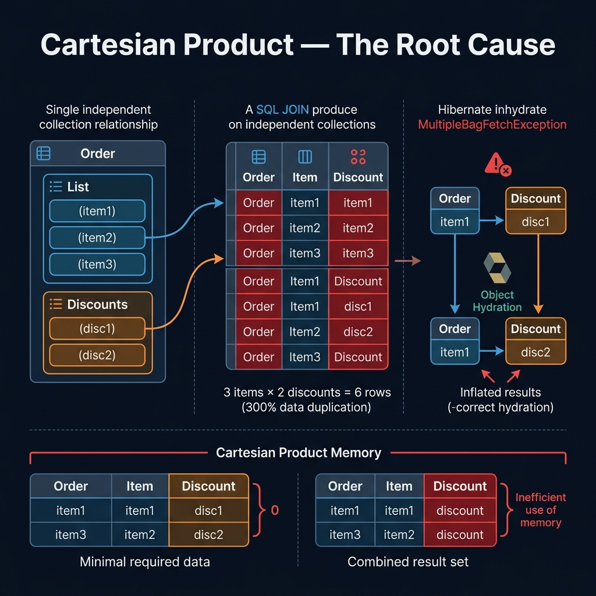
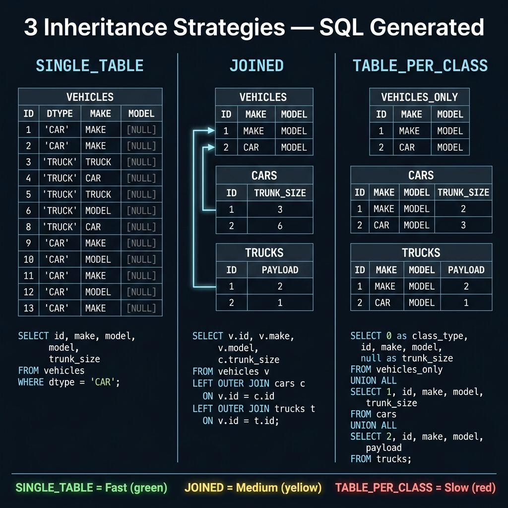
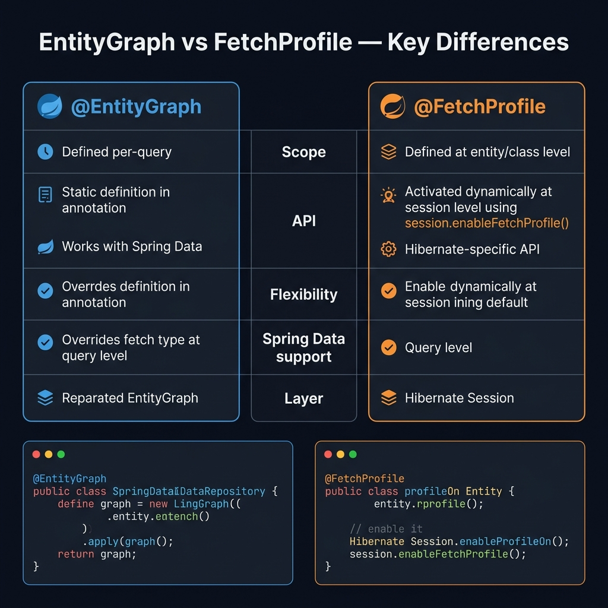
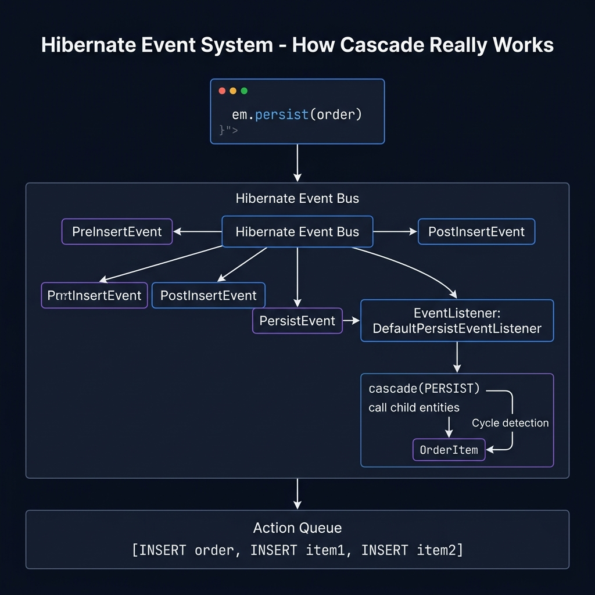
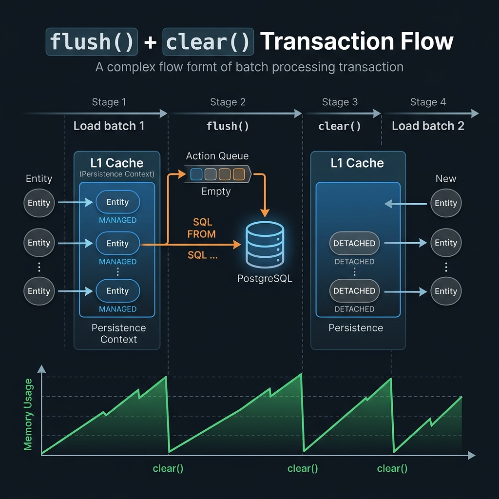

Hibernate Performance Deep Dive — Từ Cơ Bản Đến Nâng Cao
Audience: Senior engineer, quen RDBMS, muốn hiểu tại sao Hibernate hoạt động thế — không chỉ cách dùng.
Stack: Spring Boot + Spring Data JPA + PostgreSQL (phần lớn áp dụng cho MySQL/Oracle tương tự)
📐 Mental Model — Hibernate Là Gì Thực Sự?
Trước khi tối ưu, cần hiểu Hibernate là một stateful object graph manager, không đơn giản là “query builder”.
Luôn bật, không tắt được. Đây là HashMap trong Session, map (EntityType, id) → instance.
// Chỉ hit DB 1 lần dù gọi 2 lầnUser u1 = em.find(User.class, 1L); // → SELECTUser u2 = em.find(User.class, 1L); // → L1 cache hitassert u1 == u2; // SAME instance!
Hệ quả quan trọng:
// Batch delete trong loop — L1 cache phình to!for (Long id : tenThousandIds) { Entity e = em.find(Entity.class, id); // load vào L1 em.remove(e);}// → L1 cache giữ 10,000 entities trong RAM// → Phải em.flush() + em.clear() định kỳ
Pattern đúng cho bulk operation:
int batchSize = 100;for (int i = 0; i < ids.size(); i++) { Entity e = em.find(Entity.class, ids.get(i)); em.remove(e); if (i % batchSize == 0) { em.flush(); em.clear(); // giải phóng L1 cache }}
Shared across tất cả sessions, phải bật thủ công. Thường dùng Ehcache, Caffeine, hoặc Redis làm provider.
Session A ──► L1 miss ──► L2 hit ──► trả về (không hit DB)
Session B ──► L1 miss ──► L2 hit ──► trả về (không hit DB)
Session C ──► L1 miss ──► L2 miss ──► DB ──► populate L2
@Entity@Cache(usage = CacheConcurrencyStrategy.READ_WRITE) // hoặc NONSTRICT_READ_WRITE@Table(name = "products")public class Product { // ...}
Chiến lược concurrency — chọn đúng:
Strategy
Khi nào dùng
Trade-off
READ_ONLY
Data không bao giờ update (config, enum-like)
Nhanh nhất, không lock
NONSTRICT_READ_WRITE
Update ít, chấp nhận stale ngắn
Không lock, đọc có thể stale
READ_WRITE
Update thường, cần consistency
Soft lock khi update
TRANSACTIONAL
JTA transaction, consistency cao nhất
Nặng nhất
Query Cache
Lưu kết quả query (list of IDs), phối hợp với L2 cache để resolve entity.
@QueryHints(@QueryHint(name = "org.hibernate.cacheable", value = "true"))List<Product> findByCategory(String category);
⚠️ Gotcha: Query cache lưu list of IDs. Khi bất kỳ entity nào trong result set thay đổi → toàn bộ query cache region bị invalidate. Dùng cho query có dataset ổn định, ít write.
🔥 Vấn Đề Phổ Biến & Cách Fix
1. N+1 Select Problem — Kẻ Thù Số 1
Ví dụ kinh điển:
// Entity@Entitypublic class Order { @OneToMany(fetch = FetchType.LAZY) private List<OrderItem> items;}// CodeList<Order> orders = orderRepo.findAll(); // 1 queryfor (Order o : orders) { o.getItems().size(); // N queries! Mỗi order 1 query}// 100 orders → 101 queries
@OneToMany(fetch = FetchType.LAZY)@Fetch(FetchMode.SUBSELECT)private List<OrderItem> items;// Luôn 2 queries: 1 cho parent, 1 subselect cho tất cả children
2. Eager Fetch — Luôn Tải Dù Không Cần
// ❌ Anti-pattern@ManyToOne(fetch = FetchType.EAGER) // default của @ManyToOne là EAGERprivate Category category;
// Chỉ cần Order nhưng luôn JOIN CategoryList<Order> orders = orderRepo.findAll();
Rule của thumb: Luôn dùng LAZY cho mọi relationship. Load explicit khi cần.
Hibernate so sánh snapshot vs current state của mọi managed entity khi flush. Với session giữ nhiều entity → tốn CPU.
// ❌ Load entity chỉ để đọc — vẫn bị dirty check!List<Product> products = productRepo.findAll();products.forEach(p -> System.out.println(p.getName()));// Hibernate vẫn giữ snapshot của 10,000 products để dirty check
Fix — Read-only hint:
@QueryHints(@QueryHint(name = "org.hibernate.readOnly", value = "true"))List<Product> findAllReadOnly();
Hoặc trong Transaction:
@Transactional(readOnly = true)public List<ProductDto> getProducts() { // Hibernate bỏ qua dirty checking cho read-only transaction}
Spring Data JPA tự động set readOnly hint khi bạn dùng @Transactional(readOnly = true).
4. Projection Thay Vì Load Entity
Khi chỉ cần một vài field, đừng load cả entity.
// ❌ Load 20 columns chỉ để hiện 2List<Product> all = productRepo.findAll();all.stream().map(p -> new ProductDto(p.getId(), p.getName())).toList();// ✅ Interface projectionpublic interface ProductSummary { Long getId(); String getName(); BigDecimal getPrice();}List<ProductSummary> findBy(); // Spring Data tự generate query SELECT id, name, price// ✅ DTO projection với JPQL@Query("SELECT new com.example.ProductDto(p.id, p.name) FROM Product p")List<ProductDto> findProductSummaries();
5. Open Session In View (OSIV) — Con Dao Hai Lưỡi
OSIV giữ Session mở suốt HTTP request → lazy loading hoạt động trong View/Controller layer.
Vấn đề: Session mở lâu → giữ DB connection lâu → pool exhaustion dưới tải cao.
# Tắt OSIV trong production (Spring Boot default = true!)spring: jpa: open-in-view: false
Khi tắt OSIV, phải load data trong @Transactional boundary — lazy load ngoài transaction sẽ throw LazyInitializationException. Đây là điều nên làm, vì nó buộc bạn explicit về data fetching.
@AutowiredSessionFactory sessionFactory;// Sau một operationStatistics stats = sessionFactory.getStatistics();log.info("Queries: {}", stats.getQueryExecutionCount());log.info("L2 hit ratio: {}", stats.getSecondLevelCacheHitCount() / (double)(stats.getSecondLevelCacheHitCount() + stats.getSecondLevelCacheMissCount()));log.info("Collections loaded: {}", stats.getCollectionLoadCount());
⚡ Batch Insert/Update — JDBC Batching
Mặc định Hibernate gửi từng INSERT/UPDATE riêng lẻ.
// ❌ 1000 INSERTs riêng lẻfor (int i = 0; i < 1000; i++) { em.persist(new Product(...));}
Bật JDBC batching:
spring: jpa: properties: hibernate: jdbc: batch_size: 50 # số statement gom vào 1 batch batch_versioned_data: true order_inserts: true # group INSERT cùng loại lại order_updates: true # group UPDATE cùng loại lại
@Transactionalpublic void bulkInsert(List<ProductDto> dtos) { int batchSize = 50; for (int i = 0; i < dtos.size(); i++) { em.persist(new Product(dtos.get(i))); if ((i + 1) % batchSize == 0) { em.flush(); em.clear(); } }}
⚠️ @GeneratedValue(strategy = IDENTITY) (auto-increment) vô hiệu hóa batching vì Hibernate cần ID ngay sau INSERT để tracking. Dùng SEQUENCE strategy thay thế:
allocationSize = 50 → Hibernate lấy 50 IDs một lần từ sequence → ít round-trip.
🔍 Query Optimization Tips
Pagination Đúng Cách
// ❌ Hibernate warning: "HHH90003004: firstResult/maxResults specified with collection fetch"// Hibernate phải load toàn bộ kết quả vào RAM rồi mới page!@Query("SELECT o FROM Order o JOIN FETCH o.items")Page<Order> findAll(Pageable pageable);
Fix — 2-query approach:
// Query 1: Lấy IDs với pagination@Query(value = "SELECT o.id FROM Order o", countQuery = "SELECT COUNT(o) FROM Order o")Page<Long> findIds(Pageable pageable);// Query 2: Load đầy đủ với FETCH@Query("SELECT DISTINCT o FROM Order o JOIN FETCH o.items WHERE o.id IN :ids")List<Order> findByIds(@Param("ids") List<Long> ids);
Native Query Khi JPQL Không Đủ Mạnh
@Query(value = """ SELECT p.*, COUNT(oi.id) as order_count, COALESCE(SUM(oi.quantity), 0) as total_sold FROM products p LEFT JOIN order_items oi ON oi.product_id = p.id WHERE p.category_id = :categoryId GROUP BY p.id HAVING COUNT(oi.id) > :minOrders ORDER BY total_sold DESC LIMIT :limit """, nativeQuery = true)List<Object[]> findTopSellingProducts(Long categoryId, int minOrders, int limit);
// Tránh Hibernate tự sinh column type sai@Column(name = "amount", precision = 19, scale = 4)private BigDecimal amount;@Column(name = "status", length = 20, nullable = false)@Enumerated(EnumType.STRING) // luôn dùng STRING, không dùng ORDINALprivate Status status;@Column(name = "metadata", columnDefinition = "jsonb")private String metadata; // PostgreSQL JSONB
🚨 Anti-Pattern Checklist
❌ FetchType.EAGER trên @OneToMany / @ManyToMany
❌ open-in-view = true trong production
❌ GenerationType.IDENTITY với batch insert
❌ Không có index trên foreign key columns
❌ @Transactional trên public method cùng class (Spring proxy bypass)
❌ Load full entity chỉ để update 1 field (dùng @Modifying + @Query)
❌ Session scope quá rộng (transaction-scoped session là đúng)
❌ Không flush/clear trong batch loop
❌ Query cache cho data write-heavy
❌ @OneToMany không có @JoinColumn → extra join table được tạo
❌ equals/hashCode dựa vào id chưa được generate (gây bug với Set)
✅ Quick Wins Summary
Vấn đề
Fix nhanh
N+1
JOIN FETCH hoặc @BatchSize
Đọc nhiều không cần write
@Transactional(readOnly = true)
Chỉ cần vài field
Interface projection hoặc DTO query
Bulk insert chậm
Bật batch_size, dùng SEQUENCE, reWriteBatchedInserts
Mỗi exception Hibernate đều có một câu chuyện đằng sau. Hiểu tại sao nó xảy ra quan trọng hơn chỉ biết cách tắt lỗi.
EX-01 · LazyInitializationException
Thông báo lỗi điển hình:
org.hibernate.LazyInitializationException:
failed to lazily initialize a collection of role:
com.example.Order.items: could not initialize proxy - no Session
Giải thích — tại sao xảy ra:
┌─ HTTP Request ──────────────────────────────────────────────────┐
│ │
│ Service (có @Transactional) Controller / View │
│ ┌───────────────────────┐ ┌────────────────────┐ │
│ │ tx bắt đầu │ │ │ │
│ │ order = repo.find(1L) │ │ │ │
│ │ // items là LAZY │ │ │ │
│ │ tx kết thúc ──────────┼──────────► │ order.getItems() │ │
│ │ Session ĐÓNG │ │ ══► 💥 BOOM! │ │
│ └───────────────────────┘ └────────────────────┘ │
│ │
│ Entity đã thành DETACHED, Session không còn → không thể lazy │
└──────────────────────────────────────────────────────────────────┘
5 cách xử lý — từ đúng đến sai:
// ✅ Cách 1 — ĐÚNG NHẤT: Load trong transaction boundary@Transactional(readOnly = true)public OrderDto getOrder(Long id) { Order order = repo.findById(id).orElseThrow(); // Truy cập items TRONG transaction → session vẫn mở return new OrderDto(order, order.getItems());}// ✅ Cách 2 — Dùng JOIN FETCH / EntityGraph@Query("SELECT o FROM Order o JOIN FETCH o.items WHERE o.id = :id")Optional<Order> findWithItems(Long id);// ✅ Cách 3 — Hibernate.initialize() trước khi transaction đóng@Transactional(readOnly = true)public Order getOrderInitialized(Long id) { Order order = repo.findById(id).orElseThrow(); Hibernate.initialize(order.getItems()); // force load return order;}// ⚠️ Cách 4 — Bật OSIV (che vấn đề, không fix root cause)// spring.jpa.open-in-view=true → giữ session đến hết request// → connection pool exhaustion dưới tải cao// ❌ Cách 5 — SAI: Đổi sang EAGER fetch@OneToMany(fetch = FetchType.EAGER) // fix lazy nhưng gây N+1 / over-fetchprivate List<OrderItem> items;
Kinh nghiệm thực tế:LazyInitializationException thường xuất hiện khi entity được trả từ Service sang Controller rồi serialize JSON (Jackson). Fix chuẩn: trả DTO thay vì entity, hoặc dùng @JsonIgnore + load explicit trong service layer.
EX-02 · NonUniqueObjectException / “Multiple representations of the same entity”
Thông báo lỗi điển hình:
org.hibernate.NonUniqueObjectException:
A different object with the same identifier value was already associated
with the session: [com.example.User#42]
// hoặc Hibernate 6+:
org.hibernate.HibernateException:
Multiple representations of the same entity [com.example.User#42]
are being merged
Giải thích — tại sao xảy ra:
Session (L1 Cache)
┌──────────────────────────────────────────────────────────────────┐
│ │
│ Step 1: user_managed = repo.findById(42L) │
│ L1: { User#42 → instance_A } ← MANAGED │
│ │
│ Step 2: user_detached (từ nơi khác, cùng id = 42, là instance_B)│
│ │
│ Step 3: em.merge(user_detached) ← OK, copy B's state vào A │
│ Hoặc: em.saveOrUpdate(user_detached) ← 💥 CONFLICT! │
│ → Hibernate thấy instance_B ≠ instance_A, cùng id=42 │
└───────────────────────────────────────────────────────────────────┘
Nguyên nhân phổ biến nhất — pattern sai:
// ❌ Tình huống 1: Load rồi lại save detached object cùng session@Transactionalpublic void update(User incoming) { // incoming là DETACHED User existing = userRepo.findById(incoming.getId()); // → MANAGED, vào L1 // L1 đã có User#42 = existing (instance_A) userRepo.save(incoming); // 💥 incoming (instance_B) ≠ existing (instance_A)}// ❌ Tình huống 2: Nhận @RequestBody entity rồi save trực tiếp@PostMappingpublic void update(@RequestBody User user) { // user là DETACHED object service.update(user); // nếu service load lại → conflict}// ❌ Tình huống 3: Dùng saveOrUpdate thay vì mergesession.saveOrUpdate(detachedEntity); // không handle L1 conflict
Cách fix:
// ✅ Fix 1 — CHUẨN NHẤT: Không nhận entity từ ngoài, nhận DTO@Transactionalpublic void update(Long id, UserUpdateRequest req) { User user = userRepo.findById(id).orElseThrow(); // MANAGED user.setName(req.getName()); // dirty check → auto UPDATE khi flush // Không cần save() vì đã MANAGED trong @Transactional}// ✅ Fix 2: Nếu buộc phải dùng merge()@Transactionalpublic void mergeDetached(User detached) { User managed = em.merge(detached); // Hibernate copy state, trả về managed // Chỉ dùng 'managed' từ đây, bỏ 'detached'}// ✅ Fix 3: Evict trước khi re-associate (hiếm khi cần)@Transactionalpublic void forceOverwrite(User detached) { User inL1 = em.find(User.class, detached.getId()); if (inL1 != null) em.detach(inL1); // đuổi instance cũ khỏi L1 em.merge(detached);}
Kinh nghiệm thực tế: Lỗi này thường xuất hiện khi nhận @RequestBody User user trực tiếp rồi pass xuống service có @Transactional. Rule vàng: luôn nhận DTO, không nhận entity từ HTTP layer. Entity chỉ sống trong persistence layer.
org.hibernate.StaleObjectStateException:
Row was updated or deleted by another transaction
(or unsaved-value mapping was incorrect): [com.example.Product#15]
Giải thích — Optimistic Locking conflict:
T=0 T=1 T=2 T=3
│ │ │ │
Thread A: load(v=1) ─► modify ──────────────► save ✅ (version 1→2)
│ │ │
Thread B: load(v=1) ─────────────► modify ► save 💥
DB có v=2, B mang v=1
→ WHERE version=1 → 0 rows affected
→ StaleObjectStateException
Setup Optimistic Locking:
@Entitypublic class Product { @Id private Long id; @Version // Hibernate tự quản lý, increment mỗi UPDATE private Integer version; private BigDecimal price;}// Hibernate sinh: UPDATE products SET price=?, version=2 WHERE id=15 AND version=1
Xử lý exception — retry pattern:
// ✅ Retry tự động với Spring Retry@Retryable( retryFor = OptimisticLockingFailureException.class, maxAttempts = 3, backoff = @Backoff(delay = 100, multiplier = 2) // 100ms, 200ms, 400ms)@Transactionalpublic void updateStock(Long productId, int delta) { Product p = productRepo.findById(productId).orElseThrow(); p.setStock(p.getStock() + delta);}// Mỗi retry là một transaction mới → load version mới nhất từ DB// ✅ Xử lý manual, trả conflict về caller@Transactionalpublic UpdateResult tryUpdatePrice(Long id, BigDecimal newPrice) { try { Product p = productRepo.findById(id).orElseThrow(); p.setPrice(newPrice); productRepo.flush(); return UpdateResult.SUCCESS; } catch (OptimisticLockingFailureException e) { return UpdateResult.CONFLICT; }}
Kinh nghiệm thực tế: Với hệ thống banking như PDMS, Optimistic Locking phù hợp cho document metadata (ít conflict). Với dữ liệu highly-contended (số dư, slot count), nên dùng Pessimistic Lock (@Lock(PESSIMISTIC_WRITE)) hoặc queue-based serialization để tránh retry storm.
// ✅ Check trước để báo lỗi rõ ràng@Transactionalpublic User createUser(CreateUserRequest req) { if (userRepo.existsByEmail(req.getEmail())) { throw new BusinessException("Email đã tồn tại: " + req.getEmail()); } return userRepo.save(new User(req));}// ✅ Global handler parse constraint name thành message thân thiện@ExceptionHandler(DataIntegrityViolationException.class)public ResponseEntity<ErrorResponse> handleConstraint(DataIntegrityViolationException ex) { String dbMsg = ex.getMostSpecificCause().getMessage(); String userMsg = parseConstraintMessage(dbMsg); return ResponseEntity.status(409).body(new ErrorResponse(userMsg));}private String parseConstraintMessage(String dbMsg) { if (dbMsg.contains("uk_users_email")) return "Email đã được sử dụng"; if (dbMsg.contains("uk_users_phone")) return "Số điện thoại đã được sử dụng"; if (dbMsg.contains("fk_orders_user_id")) return "User không tồn tại"; return "Dữ liệu vi phạm ràng buộc hệ thống";}
Tip: Đặt tên constraint có ý nghĩa trong migration SQL: CONSTRAINT uk_users_email UNIQUE (email) thay để tên DB tự đặt kiểu users_email_key. Dễ parse error message, dễ debug.
EX-05 · TransactionRequiredException
Thông báo lỗi điển hình:
javax.persistence.TransactionRequiredException:
Executing an update/delete query
No EntityManager with actual transaction available for current thread
3 nguyên nhân phổ biến nhất:
// ❌ Nguyên nhân 1: @Modifying không có @Transactional bao ngoài@Modifying@Query("UPDATE Product p SET p.price = :price WHERE p.id = :id")void updatePrice(Long id, BigDecimal price);// Gọi thẳng mà không có @Transactional → TransactionRequiredException// ❌ Nguyên nhân 2: @Transactional trên private method — Spring AOP bypass@Servicepublic class ProductService { public void doSomething() { this.updateInternal(); // gọi qua 'this' → bypass proxy } @Transactional // VÔ DỤNG khi gọi qua this private void updateInternal() { repo.save(...); // → TransactionRequiredException }}// ❌ Nguyên nhân 3: Gọi write op trong @PostConstruct hoặc @Scheduled// mà không có @Transactional@PostConstructpublic void init() { repo.save(new Config(...)); // Chưa chắc có transaction context}
Fix từng nguyên nhân:
// ✅ Fix 1: @Transactional ở caller@Transactionalpublic void updatePrice(Long id, BigDecimal price) { productRepo.updatePrice(id, price);}// ✅ Fix 2a: Tách ra bean riêng để proxy hoạt động@Service@RequiredArgsConstructorpublic class ProductService { private final ProductInternalService internal; public void doSomething() { internal.updateInternal(); // qua bean khác → proxy intercept được }}@Servicepublic class ProductInternalService { @Transactional public void updateInternal() { ... }}// ✅ Fix 2b: Self-inject qua ApplicationContext@Servicepublic class ProductService { @Autowired private ApplicationContext ctx; public void doSomething() { ctx.getBean(ProductService.class).updateInternal(); } @Transactional public void updateInternal() { ... }}// ✅ Fix 3: Thêm @Transactional vào @Scheduled@Scheduled(cron = "0 0 * * * *")@Transactionalpublic void scheduledJob() { repo.save(...);}
EX-06 · EntityNotFoundException — Proxy Trap
Thông báo lỗi điển hình:
javax.persistence.EntityNotFoundException:
Unable to find com.example.User with id 999
Sự khác biệt then chốt giữa findById() và getReference():
findById(999L)
│
▼
SELECT * FROM users WHERE id = 999
│
├── có kết quả → trả về Optional.of(user)
└── không có → trả về Optional.empty() ← SAFE
getReference(999L)
│
▼
Trả về PROXY ngay (KHÔNG SELECT)
│
▼
Lần đầu tiên truy cập field của proxy (vd: user.getName())
│
▼
SELECT * FROM users WHERE id = 999
│
├── có kết quả → trả về dữ liệu
└── không có → 💥 EntityNotFoundException ← SURPRISE!
Dùng đúng từng loại:
// ✅ getReference() khi: chắc chắn FK tồn tại, chỉ cần set relationship@Transactionalpublic Order createOrder(Long userId, OrderRequest req) { // userId đến từ JWT token, đã authenticated → chắc chắn tồn tại User userRef = em.getReference(User.class, userId); // không SELECT Order order = new Order(userRef, req); return orderRepo.save(order); // chỉ cần FK, tiết kiệm 1 SELECT}// ✅ findById() khi: không chắc tồn tại, hoặc cần đọc data từ entity@Transactionalpublic void assignManager(Long deptId, Long managerId) { Department dept = deptRepo.findById(deptId) .orElseThrow(() -> new NotFoundException("Department not found")); User manager = userRepo.findById(managerId) .orElseThrow(() -> new NotFoundException("Manager not found")); dept.setManager(manager);}
Rule: Nếu bạn chỉ cần set FK (foreign key association) và ID đã được validate → getReference(). Nếu cần đọc bất kỳ field nào của entity hoặc không chắc ID valid → findById().
EX-07 · QueryException — JPQL Field Name Sai
Thông báo lỗi điển hình:
org.hibernate.QueryException:
could not resolve property: user_id of: com.example.Order
Nguyên nhân — nhầm tên column DB với field Java:
// ❌ Dùng tên column DB trong JPQL@Query("SELECT o FROM Order o WHERE o.user_id = :userId")// ^^^^^^^ tên column → QueryException// ✅ Dùng tên field Java@Query("SELECT o FROM Order o WHERE o.user.id = :userId")// ❌ Truy cập collection trực tiếp trong WHERE@Query("SELECT o FROM Order o WHERE o.items.productId = :pid")// ^^^^^ List không dot-access được// ✅ JOIN rồi mới filter@Query("SELECT DISTINCT o FROM Order o JOIN o.items i WHERE i.productId = :pid")// ❌ Tên field typo (case-sensitive trong JPQL)@Query("SELECT o FROM Order o WHERE o.Status = :status")// ^^^^^^ Java field là 'status' (lowercase)// ✅@Query("SELECT o FROM Order o WHERE o.status = :status")
Các lỗi mapping khác hay gặp:
// ❌ Quên @Enumerated → MappingException@Column(name = "status")private Status status; // Hibernate không biết map String/Int thành enum// ✅@Enumerated(EnumType.STRING)@Column(name = "status")private Status status;// ❌ Kiểu dữ liệu Java không match DB column → ClassCastException lúc runtime// DB: BIGINT, Java: Integer → overflow với số lớnprivate Integer documentCount; // nên dùng Long// ✅private Long documentCount;
org.springframework.dao.PessimisticLockingFailureException:
could not obtain pessimistic lock; SQL [select ... for update]
// Deadlock:
org.hibernate.PessimisticLockException:
ERROR: deadlock detected
Detail: Process 123 waits for ShareLock on transaction 456
Deadlock diagram — hay gặp khi update nhiều rows:
Thread A (tx1): Thread B (tx2):
LOCK row#1 ✅ LOCK row#2 ✅
waiting for row#2... ──────────── waiting for row#1...
💀 DEADLOCK
Fix deadlock — luôn lock theo thứ tự nhất quán:
// ❌ Lock thứ tự không nhất quán → deadlock tiềm tàngpublic void transfer(Long fromId, Long toId, BigDecimal amount) { Account from = accountRepo.findByIdForUpdate(fromId); // lock fromId trước Account to = accountRepo.findByIdForUpdate(toId); // lock toId sau // Thread khác lock toId trước → deadlock!}// ✅ Luôn lock theo ID tăng dần → thứ tự nhất quánpublic void transfer(Long fromId, Long toId, BigDecimal amount) { Long firstId = Math.min(fromId, toId); Long secondId = Math.max(fromId, toId); Account first = accountRepo.findByIdForUpdate(firstId); Account second = accountRepo.findByIdForUpdate(secondId); // Mọi thread đều lock theo thứ tự: nhỏ trước lớn sau → không deadlock Account from = first.getId().equals(fromId) ? first : second; Account to = first.getId().equals(toId) ? first : second; from.debit(amount); to.credit(amount);}// ✅ Thêm lock timeout tránh chờ mãi@Lock(LockModeType.PESSIMISTIC_WRITE)@QueryHints(@QueryHint(name = "javax.persistence.lock.timeout", value = "3000"))Optional<Account> findByIdForUpdate(Long id);// → LockTimeoutException sau 3s thay vì chờ vô tận
EX-09 · DataIntegrityViolationException — FK Delete Violation
Thông báo lỗi điển hình:
org.springframework.dao.DataIntegrityViolationException:
ERROR: update or delete on table "users" violates foreign key constraint
"fk_orders_user_id" on table "orders"
Detail: Key (id)=(42) is still referenced from table "orders"
3 chiến lược xử lý:
// ✅ Chiến lược 1 — Soft delete (khuyến nghị cho banking/document system)@Entitypublic class User { @Column(name = "deleted_at") private LocalDateTime deletedAt; public boolean isDeleted() { return deletedAt != null; } public void softDelete() { this.deletedAt = LocalDateTime.now(); }}// Không xóa row → không vi phạm FK → audit trail còn nguyên// ✅ Chiến lược 2 — Validate trước khi delete@Transactionalpublic void deleteUser(Long userId) { long activeOrders = orderRepo.countByUserIdAndDeletedAtIsNull(userId); if (activeOrders > 0) { throw new BusinessException( "Không thể xóa user đang có " + activeOrders + " đơn hàng active"); } userRepo.deleteById(userId);}// ✅ Chiến lược 3 — Cascade xóa với bulk delete (KHÔNG dùng cascade = REMOVE)@Transactionalpublic void hardDeleteUser(Long userId) { // Xóa children trước bằng bulk DELETE (không load vào memory) orderItemRepo.deleteByOrderUserId(userId); // @Modifying orderRepo.deleteByUserId(userId); // @Modifying userRepo.deleteById(userId);}// ❌ Tránh cascade = CascadeType.REMOVE trên collection lớn// Hibernate load TẤT CẢ children vào memory để xóa từng cái@OneToMany(cascade = CascadeType.REMOVE) // 100k orders → 100k entities trong RAM!private List<Order> orders;
📋 Exception Quick Reference
Exception
Nguyên nhân gốc
Fix
LazyInitializationException
Lazy proxy truy cập ngoài Session
Load trong @Transactional, dùng JOIN FETCH
NonUniqueObjectException
2 instance cùng id trong 1 Session
Nhận DTO từ HTTP, không nhận entity
StaleObjectStateException
Optimistic lock version conflict
Retry pattern hoặc PESSIMISTIC_WRITE
ConstraintViolationException
UNIQUE/FK/CHECK DB bị vi phạm
Check trước + parse error thành message rõ
TransactionRequiredException
Write op ngoài transaction boundary
@Transactional đúng chỗ, tránh self-invocation
EntityNotFoundException
getReference() với ID không tồn tại
findById() khi không chắc, getReference() khi chắc FK valid
QueryException
Dùng tên column DB trong JPQL
Dùng Java field name, JOIN cho collection
PessimisticLockingFailureException
Lock timeout hoặc deadlock
Lock theo thứ tự nhất quán + timeout
DataIntegrityViolationException (FK)
Delete entity còn được reference
Soft delete hoặc bulk delete children trước
🧠 Stateful Object Graph Manager — Cơ Chế Nội Tại
Đây là phần quan trọng nhất để hiểu mọi hành vi của Hibernate. Tất cả vấn đề hiệu năng, exception, và behavior kỳ lạ đều có thể giải thích từ đây.
Persistence Context — “Bộ Não” Của Hibernate
Persistence Context (hay Session trong Hibernate thuần) là một unit of work — một không gian làm việc có trạng thái, tồn tại trong một khoảng thời gian nhất định, và quản lý toàn bộ vòng đời của entity bên trong nó.
Persistence Context KHÔNG phải là Connection. Đây là điểm nhiều người nhầm:
Persistence Context (Session) JDBC Connection
┌───────────────────────────┐ ┌──────────────────┐
│ - Identity Map │ │ - TCP socket đến │
│ - Snapshots │◄────────►│ PostgreSQL │
│ - Action Queue │ mượn │ - Active query │
│ - FlushMode │ khi cần │ - TX state │
└───────────────────────────┘ └──────────────────┘
│ │
│ 1 Session có thể │ Connection được
│ dùng nhiều connection │ trả về pool
│ khác nhau trong │ sau mỗi statement
│ vòng đời của nó │ (connection pooling)
Identity Map — Trái Tim Của L1 Cache
Identity Map là một HashMap bên trong Session, map từ (EntityType, primaryKey) → entity instance.
// Hibernate internal (simplified):Map<EntityKey, Object> identityMap = new HashMap<>();// EntityKey = (class=User.class, id=1L)// Value = instance của User với id=1
Tại sao cần Identity Map?
Đảm bảo object identity — cùng một DB row luôn được đại diện bởi đúng một Java object trong cùng Session:
// Không có Identity Map:User u1 = repo.findById(1L); // tạo instance_AUser u2 = repo.findById(1L); // tạo instance_Bu1 == u2; // false! 2 object khác nhauu1.equals(u2); // true (nếu equals() dựa vào id)// Với Identity Map (Hibernate):User u1 = repo.findById(1L); // tạo instance_A, lưu vào mapUser u2 = repo.findById(1L); // tìm thấy trong map, trả về instance_Au1 == u2; // TRUE! Cùng object reference
Hệ quả quan trọng:
@Transactionalpublic void demo() { User u1 = repo.findById(1L); u1.setName("Alice"); User u2 = repo.findById(1L); // trả về CÙNG instance với u1 System.out.println(u2.getName()); // "Alice" — không phải tên cũ trong DB! // u2 thấy thay đổi của u1 vì chúng là cùng object}
Snapshot — Cơ Chế Dirty Checking
Khi một entity được load vào Persistence Context (trở thành MANAGED), Hibernate tạo ra một snapshot — bản sao sâu (deep copy) của trạng thái entity tại thời điểm load.
// Simplified Hibernate internal structure:class StatefulPersistenceContext { // Entity instances (Identity Map) Map<EntityKey, Object> entitiesByKey; // Snapshots — parallel structure Map<EntityKey, Object[]> entitySnapshotsByKey; // ^^^^^^^^ // mảng giá trị từng field theo thứ tự // VD: Object[] { 1L, "Bach", "bach@…", 28 }}
Snapshot lưu dưới dạng Object[] — mảng các giá trị primitive/reference của từng column được map, không phải một entity instance đầy đủ. Điều này tiết kiệm memory hơn so với giữ 2 entity instance.
Dirty Checking — Thuật Toán So Sánh
Khi Hibernate cần flush (đồng bộ state với DB), nó chạy thuật toán dirty checking cho mọi entity MANAGED trong session:
FOR EACH entity trong Identity Map:
snapshot = entitySnapshotsByKey[entity.key]
currentState = extractState(entity) // đọc giá trị hiện tại qua reflection
IF currentState != snapshot:
→ entity là "dirty" → thêm UPDATE vào Action Queue
ELSE:
→ entity sạch → bỏ qua
Chi tiết so sánh từng field:
snapshot: Object[] { 1L, "Bach", "bach@vpbank.com", 28 }
currentState: Object[] { 1L, "Alice", "bach@vpbank.com", 28 }
^^^^^^^ khác! → dirty
→ Hibernate sinh: UPDATE users SET name='Alice' WHERE id=1
(chỉ update field thay đổi nếu dùng @DynamicUpdate)
Mặc định Hibernate UPDATE tất cả columns dù chỉ 1 field thay đổi:
-- Mặc định (không @DynamicUpdate):UPDATE users SET name='Alice', email='bach@vpbank.com', age=28 WHERE id=1-- Với @DynamicUpdate (chỉ update field thay đổi):UPDATE users SET name='Alice' WHERE id=1
@Entity@DynamicUpdate // chỉ UPDATE column thực sự thay đổipublic class User { ... }// Hữu ích khi entity có nhiều column và thường chỉ update 1-2 field// Trade-off: Hibernate phải so sánh chi tiết hơn, SQL khác nhau → không cache được prepared statement
Flush — Khi Nào Snapshot Được Dùng?
Flush là quá trình Hibernate đồng bộ state trong Persistence Context với database. Đây là lúc dirty checking được thực thi và Action Queue được xả.
Persistence Context State Database State
┌───────────────────────┐ ┌──────────────────┐
│ User#1: name="Alice" │ │ users: name="Bach"│
│ snapshot: name="Bach" │ │ │
│ │ FLUSH │ │
│ dirty check: DIRTY ───┼─────────►│ UPDATE users │
│ │ │ SET name='Alice' │
│ Order#5: DELETED ─────┼─────────►│ DELETE orders │
│ │ │ WHERE id=5 │
│ Product#9: new INSERT─┼─────────►│ INSERT INTO... │
└───────────────────────┘ └──────────────────┘
Sau flush: snapshots được cập nhật theo state mới
4 FlushMode và khi nào trigger:
FlushMode.AUTO (default trong Spring @Transactional):
├── Trước khi thực thi JPQL/HQL query
│ (đảm bảo query thấy state mới nhất)
└── Khi commit transaction
FlushMode.COMMIT:
└── Chỉ khi commit transaction
(query có thể thấy state cũ → nguy hiểm nhưng nhanh hơn)
FlushMode.MANUAL:
└── Chỉ khi gọi em.flush() explicit
(toàn quyền kiểm soát, dùng cho batch processing)
FlushMode.ALWAYS:
└── Trước MỌI query
(safe nhất nhưng chậm nhất)
Ví dụ FlushMode.AUTO hoạt động:
@Transactionalpublic void demo() { User user = repo.findById(1L); // load + snapshot user.setName("Alice"); // dirty, chưa flush // Hibernate thấy sắp query Users → AUTO flush trước // để query thấy được "Alice" List<User> users = em.createQuery( "FROM User WHERE name = 'Alice'", User.class ).getResultList(); // → Hibernate flush UPDATE trước → rồi mới SELECT // → "Alice" được tìm thấy ✅}
Entity Lifecycle — Vòng Đời Đầy Đủ
new User()
│
▼
┌──────────────────┐
│ TRANSIENT │ ← Không có ID, không trong PC
│ (chưa persist) │
└──────────────────┘
│ ▲
persist() │ │ delete() (nếu chưa flush)
▼ │
┌──────────────────┐
│ MANAGED │ ← Trong Persistence Context
│ (được tracking) │ có snapshot, dirty checked
└──────────────────┘
│ ▲ │ ▲
session │ │ │ │ merge()
close / │ │ │ │ (copy state vào managed instance)
evict() │ │ │ │
▼ │ ▼ │
┌──────────────────┐
│ DETACHED │ ← Không trong PC
│ (không track) │ ID còn, nhưng thay đổi
└──────────────────┘ không được track
│
remove() sau khi merge
│
▼
┌──────────────────┐
│ REMOVED │ ← Đã đánh dấu xóa
│ (sẽ DELETE) │ DELETE khi flush
└──────────────────┘
│
flush/commit
│
▼
Row bị xóa khỏi DB
Code minh họa từng transition:
// TRANSIENTUser user = new User();user.setName("Bach");// user.id = null, không trong PC// TRANSIENT → MANAGEDem.persist(user);// user.id = generated (nếu SEQUENCE), vào PC, snapshot tạo// Action Queue: [INSERT User]// MANAGED — đang được trackuser.setEmail("bach@vpbank.com");// snapshot khác currentState → dirty// MANAGED → DETACHEDem.detach(user); // explicit detach// hoặc: session.close() // close session → tất cả entity thành DETACHED// hoặc: em.clear() // xóa toàn bộ PC → tất cả thành DETACHED// DETACHED → MANAGED (merge)user.setName("New Name"); // thay đổi trong detached stateUser managed = em.merge(user);// Hibernate: load User từ DB (hoặc L1 nếu có)// copy state từ 'user' vào managed instance// trả về managed instance// 'user' vẫn DETACHED, 'managed' là MANAGED// MANAGED → REMOVEDem.remove(managed);// Action Queue: [DELETE User]// Sau flush: row bị xóa, instance trở thành TRANSIENT
Memory Layout — Hibernate Lưu Gì Trong RAM?
Đây là cái giá phải trả cho stateful management. Với mỗi entity MANAGED:
10,000 entities × 500 bytes = ~5 MB chỉ cho PC overhead
+ data thực tế của entities
+ collection proxies nếu lazy
→ Dễ dàng đạt 50-200 MB cho một session "bừa bãi"
Khi Nào Hibernate Giải Phóng Bộ Nhớ?
Bộ nhớ PC được giải phóng khi:
1. session.close() / EntityManager.close()
→ Toàn bộ Identity Map + Snapshots bị GC
→ Entities trở thành DETACHED (vẫn còn trong heap nếu có reference)
→ Connection trả về pool
2. em.clear()
→ Xóa toàn bộ PC (Identity Map + Snapshots + Action Queue)
→ Tất cả entity trở thành DETACHED
→ GC có thể thu hồi nếu không còn reference
3. em.detach(entity)
→ Chỉ xóa 1 entity khỏi Identity Map và Snapshot
→ Entity trở thành DETACHED
4. flush() KHÔNG giải phóng bộ nhớ
→ Chỉ đồng bộ với DB, PC vẫn giữ nguyên
→ Snapshot được update theo state sau flush
5. Transaction commit / rollback
→ KHÔNG tự động clear PC
→ Phụ thuộc vào Session scope config
Timeline memory trong Spring @Transactional:
HTTP Request bắt đầu
│
▼
@Transactional method được gọi
│
▼
Spring tạo/lấy Session từ pool ──────┐
│ │ Persistence Context mở
▼ │ (Identity Map trống)
repo.findById(1L) ← SELECT │
→ Entity vào Identity Map │
→ Snapshot tạo │ Memory tăng
│ │
repo.findAll() ← SELECT │
→ N entities vào Identity Map │ Memory tăng
→ N snapshots tạo │
│ │
[business logic] │
│ │
Transaction commit │
→ flush() chạy (dirty check) │
→ SQL gửi đến DB │
→ Connection trả về pool │
│ │
@Transactional method kết thúc ──────┘
│
▼
Session scope kết thúc → PC cleared
→ Identity Map xóa
→ Snapshots xóa ──────────────────── Memory giải phóng (GC eligible)
→ Entities trở thành DETACHED
│
▼
HTTP Response trả về
Với OSIV (Open Session In View = true):
HTTP Request bắt đầu → Session mở ──────────────────────────────┐
│ │
@Transactional service ──── tx start/commit │
│ │
Controller nhận entity (STILL MANAGED do OSIV) │ Session
│ │ MỞ ĐẾN
JSON serialization (lazy load xảy ra ở đây) │ TẬN ĐÂY
│ │
HTTP Response trả về → Session đóng ────────────────────────────┘
Memory giải phóng muộn hơn nhiều + giữ connection lâu hơn
Proxy — Lazy Loading Hoạt Động Thế Nào?
Khi bạn khai báo FetchType.LAZY trên một relationship, Hibernate không load dữ liệu ngay. Thay vào đó, nó tạo ra một Proxy object — một subclass được sinh ra lúc runtime (dùng ByteBuddy hoặc Javassist):
@Entitypublic class Order { @ManyToOne(fetch = FetchType.LAZY) private User user; // ← Hibernate sẽ tạo proxy cho field này}
em.find(Order.class, 5L)
│
▼
SELECT * FROM orders WHERE id = 5
Result: { id:5, user_id:42, total:100.0 }
│
▼
Tạo Order instance:
order.id = 5
order.total = 100.0
order.user = UserProxy { id: 42, initialized: false }
^^^^^^^^^^^^^^^^^^^^^^^^^^^^^^^^^^^^^^^^^^^
KHÔNG phải User thật, chỉ là proxy giữ id=42
Proxy là subclass động của User:
// Hibernate sinh ra (simplified):class User$HibernateProxyXXXX extends User { private Long id; private boolean initialized = false; private Session session; // giữ reference đến session để load khi cần @Override public String getName() { if (!initialized) { // Trigger lazy load! realUser = session.get(User.class, this.id); initialized = true; } return realUser.getName(); } // ... override mọi getter}
Vì vậy proxy cần Session còn mở để load:
order.getUser().getName()
│
▼
UserProxy.getName() được gọi
│
▼
initialized = false → cần load
│
▼
session.get(User.class, 42L)
│
├── Session còn mở → SELECT → trả về User ✅
└── Session đã đóng → 💥 LazyInitializationException
Proxy và instanceof check:
User user = em.getReference(User.class, 42L); // trả về proxy// Cẩn thận với instanceof:user instanceof User; // TRUE (proxy extends User)// Cẩn thận với getClass():user.getClass(); // User$HibernateProxyXXXX, KHÔNG phải User.class!user.getClass() == User.class; // FALSE!// Cách đúng để check type:Hibernate.getClass(user) == User.class; // TRUE ✅// Unwrap proxy nếu cần:User realUser = Hibernate.unproxy(user, User.class);
Collection Proxy — List và Set Lazy
Tương tự với lazy collection, Hibernate wrap list/set trong một PersistentBag/PersistentSet:
order.getItems()
│
▼
PersistentBag.get() / size() / iterator() ...
│
▼
initialized = false → trigger load
│
▼
SELECT * FROM order_items WHERE order_id = 5
│
▼
initialized = true, data loaded vào bag
│
▼
Các lần gọi sau: trả về data từ bag (không SELECT nữa)
Nguy hiểm của việc replace collection:
@Transactionalpublic void update(Long orderId, List<OrderItem> newItems) { Order order = repo.findById(orderId).orElseThrow(); // ❌ NGUY HIỂM: Replace collection reference order.setItems(newItems); // Hibernate mất track collection cũ // orphanRemoval sẽ không hoạt động đúng // Có thể gây duplicate entries hoặc không xóa items cũ // ✅ ĐÚNG: Modify collection in-place order.getItems().clear(); // Hibernate track việc clear order.getItems().addAll(newItems); // Hibernate track việc add}
Action Queue — Write-Behind Buffer
Hibernate không gửi SQL ngay khi bạn gọi persist(), remove(), hay thay đổi entity. Thay vào đó, nó queue các action lại và thực thi theo thứ tự tối ưu khi flush:
Thứ tự thực thi trong Action Queue khi flush:
1. OrphanRemoval (xóa orphan)
2. INSERT mới (theo dependency order — parent trước child)
3. UPDATE (dirty entities)
4. Collection removes
5. Collection recreates
6. DELETE (theo dependency order ngược — child trước parent)
Tại sao thứ tự này quan trọng:
@Transactionalpublic void demo() { // Code chạy theo thứ tự này: Department dept = new Department("Engineering"); em.persist(dept); // → queue: INSERT dept User user = new User("Bach", dept); em.persist(user); // → queue: INSERT user Order order = new Order(user); em.persist(order); // → queue: INSERT order em.remove(oldOrder); // → queue: DELETE oldOrder // flush() thực thi theo dependency: // 1. INSERT dept (không phụ thuộc gì) // 2. INSERT user (cần dept.id) // 3. INSERT order (cần user.id) // 4. DELETE oldOrder // Nếu Hibernate đảo thứ tự → FK violation!}
order_inserts = true và order_updates = true trong JDBC batching chính là để group các INSERT/UPDATE cùng loại lại, giúp JDBC batch chúng hiệu quả hơn.
Thực Hành: Đọc Hiểu Session Internals
@Transactionalpublic void inspectSessionState() { // Load một số entities User u1 = userRepo.findById(1L).orElseThrow(); User u2 = userRepo.findById(2L).orElseThrow(); // Thay đổi u1 u1.setName("Modified"); // Inspect Persistence Context Session session = em.unwrap(Session.class); SessionImplementor si = (SessionImplementor) session; StatefulPersistenceContext pc = (StatefulPersistenceContext) si.getPersistenceContext(); // Số entity trong Identity Map int size = pc.getNumberOfManagedEntities(); System.out.println("Entities in PC: " + size); // 2 // Check dirty entities (cần flush trước để Hibernate tính) int[] tableSpace = new int[1]; boolean dirty = si.isDirty(); System.out.println("Session is dirty: " + dirty); // true vì u1 bị sửa // Xem action queue (qua Statistics) Statistics stats = sessionFactory.getStatistics(); stats.clear(); em.flush(); System.out.println("Updates executed: " + stats.getEntityUpdateCount()); // 1}
Tổng Kết — Mental Model Hoàn Chỉnh
Khi @Transactional method chạy:
em.find(User.class, 1L)
│
├─ L1 Cache hit? ──► trả về instance có sẵn (không SELECT)
│
└─ L1 Cache miss?
│
├─ L2 Cache hit? ──► hydrate entity từ L2, thêm vào L1
│
└─ L2 Cache miss?
│
▼
SELECT từ DB
│
▼
Tạo entity instance
Tạo snapshot (deep copy)
Thêm vào Identity Map
Lazy fields → tạo Proxy
Lazy collections → tạo PersistentBag/Set
│
▼
entity ở trạng thái MANAGED
Khi entity thay đổi:
→ currentState != snapshot → dirty → queue UPDATE khi flush
Khi flush:
→ Dirty check toàn bộ Identity Map
→ Gửi Action Queue đến DB theo thứ tự
→ Update snapshots theo state mới
Khi transaction kết thúc:
→ flush() (nếu FlushMode.AUTO/COMMIT)
→ commit/rollback JDBC connection
→ connection trả về pool
→ Session scope kết thúc → PC cleared → GC
🔬 persist / save / update / merge / saveOrUpdate — Bản Chất Cơ Chế
Đây là phần gây nhiều bug nhất trong thực tế, đặc biệt khi kết hợp với @ManyToMany, detached entity từ REST layer, và cascade config sai. Đọc kỹ từng dòng.
Mental model trước khi đọc
Hibernate quản lý một Identity Map (L1 Cache) bên trong Session. Khi bạn gọi bất kỳ method nào dưới đây, Hibernate phải trả lời 3 câu hỏi:
1. Entity này có đang trong Identity Map chưa? (kiểm tra bằng id)
2. Nên sinh SQL gì? (INSERT / UPDATE / không gì cả)
3. Trả về instance nào cho caller? (input object hay managed copy?)
Hiểu 3 câu hỏi này là hiểu tất cả behavior.
persist() — JPA Standard
Spec behavior:
TRANSIENT → scheduled INSERT, entity trở thành MANAGED
MANAGED → no-op (đã trong session rồi)
DETACHED → throws IllegalStateException (spec yêu cầu)
REMOVED → entity được re-persisted, trở lại MANAGED
Cơ chế bên trong:
// Bạn gọi:em.persist(newUser);// Hibernate làm:// 1. Kiểm tra: id == null? → yes → entity là TRANSIENT// 2. Tạo EntityEntry trong PersistenceContext// 3. Thêm vào Action Queue: InsertAction(newUser)// 4. Sinh ID nếu dùng SEQUENCE (ngay lập tức)// hoặc chờ flush nếu IDENTITY (auto-increment)// 5. Tạo snapshot của entity state hiện tại// → Entity giờ là MANAGED, ID đã được set
Key point — persist() KHÔNG gửi SQL ngay:
@Transactionalpublic void demo() { User u = new User("Bach"); em.persist(u); // SQL chưa chạy! Chỉ có InsertAction trong queue System.out.println(u.getId()); // null nếu IDENTITY, có giá trị nếu SEQUENCE // SQL INSERT chạy khi: // - em.flush() gọi tường minh // - Transaction commit // - Hibernate AUTO flush trước một query cùng bảng}
Lỗi hay gặp — persist() trên DETACHED:
// Tình huống phổ biến trong REST API:@GetMapping("/{id}")public User getUser(@PathVariable Long id) { return userRepo.findById(id).get(); // transaction đóng sau method này}@PutMapping("/{id}")public void updateUser(@RequestBody User user) { // user là DETACHED! em.persist(user); // ❌ IllegalStateException! // JPA spec: persist() trên DETACHED là undefined behavior hoặc exception // Hibernate cụ thể: throw EntityExistsException}
save() — Hibernate Specific (KHÔNG phải JPA)
Behavior:
TRANSIENT → INSERT scheduled, trả về generated ID (kiểu Serializable)
MANAGED → no-op, trả về existing ID
DETACHED → ⚠️ INSERT MỚI! Tạo row trùng lặp trong DB — BUG NGUY HIỂM
REMOVED → INSERT mới
Tại sao save() trên DETACHED lại INSERT thay vì UPDATE:
Hibernate xác định "là entity mới" hay "đã tồn tại" dựa vào:
1. unsaved-value mapping: nếu id == null → mới
2. Implementor của Interceptor.isUnsaved()
3. @Version field: nếu version == null → mới
Detached entity có id != null, nhưng save() KHÔNG kiểm tra DB existence.
Nó chỉ check: "entity này có trong PersistenceContext không?"
→ Không có → treated as new → INSERT!
Minh họa bug:
// Transaction 1: load@Transactionalpublic User loadUser(Long id) { return userRepo.findById(id).get(); // managed trong tx1} // tx1 đóng → user trở thành DETACHED// Bên ngoài transaction:User user = loadUser(1L);user.setName("Alice");// Transaction 2: sai cách@Transactionalpublic void badSave(User user) { // user vào đây là DETACHED session.save(user); // Hibernate thấy: user không trong PersistenceContext hiện tại // → INSERT row mới với name="Alice" // → DB giờ có 2 rows: id=1 (Bach) và id=2 (Alice) ← DUPLICATE! // Hoặc: id=1 vẫn tồn tại, và một row mới với auto-generated id}
Quy tắc: Đừng bao giờ dùng save() cho entity đến từ HTTP layer hoặc bất kỳ nguồn nào có thể là DETACHED. Dùng merge() thay thế.
update() — Hibernate Specific (KHÔNG phải JPA)
Behavior:
TRANSIENT → throws TransientObjectException
MANAGED → ⚠️ NonUniqueObjectException nếu id đã trong L1 với instance khác
DETACHED → re-attach entity vào session, UPDATE scheduled
REMOVED → throws IllegalArgumentException
Cơ chế:
// update() làm gì:session.update(detachedUser);// Hibernate làm:// 1. Kiểm tra Identity Map: có entity với id này không?// → Có (different instance) → ném NonUniqueObjectException// → Không → đăng ký entity vào PersistenceContext// 2. Tạo snapshot của CURRENT state của entity// 3. Thêm UpdateAction vào Action Queue// 4. Khi flush: chạy UPDATE với ALL columns (trừ khi @DynamicUpdate)
Vấn đề lớn nhất của update() — mất dữ liệu lúc concurrent:
// HTTP Request 1: load user, gửi về clientUser user = findById(1L); // {id:1, name:"Bach", email:"bach@vp", age:28}// Client modify chỉ name, gửi lại:// {id:1, name:"Alice", email:"bach@vp", age:28}// HTTP Request 2 (concurrently): update age// DB giờ có: {id:1, name:"Bach", email:"bach@vp", age:29}// HTTP Request 1 tiếp tục:user.setName("Alice");session.update(user); // UPDATE với toàn bộ state của user object// → UPDATE users SET name='Alice', email='bach@vp', age=28 WHERE id=1// → age=29 của Request 2 bị ghi đè thành 28 ← DỮ LIỆU MẤT!
Cách phòng: Dùng @Version để optimistic locking, và dùng merge() thay update().
merge() — JPA Standard (Method duy nhất nên dùng cho DETACHED)
Behavior:
TRANSIENT → INSERT scheduled, trả về MANAGED copy (không phải input!)
MANAGED → copy state vào instance đó, trả về cùng instance
DETACHED → SELECT from DB (hoặc L1), copy state, trả về MANAGED copy
REMOVED → re-persist, trả về MANAGED copy
Cơ chế chi tiết — newbie cần đọc kỹ:
em.merge(detached)
│
▼
Bước 1: entity.id == null?
├─ YES → tạo new managed instance, copy state từ input, INSERT scheduled
└─ NO → tiếp tục
│
▼
Bước 2: id này có trong L1 Cache không?
├─ YES (L1 hit) → lấy managed instance từ L1
│ copy state từ detached vào managed instance
│ trả về managed instance (L1 instance, KHÔNG phải input!)
└─ NO → tiếp tục
│
▼
Bước 3: SELECT từ DB bằng id
├─ Found → tạo managed instance từ DB data
│ copy state từ detached vào managed instance
│ trả về managed instance
└─ Not found → tạo new managed instance, INSERT scheduled
│
▼
Bước 4: Dirty checking khi flush
→ So sánh managed instance với snapshot
→ Sinh UPDATE nếu có thay đổi
Trap quan trọng nhất — return value bị bỏ qua:
// ❌ SAI — bug cực kỳ phổ biến@Transactionalpublic void updateUser(User detached) { detached.setName("Alice"); em.merge(detached); // gọi merge nhưng bỏ qua return value! detached.setEmail("x@y.z"); // thay đổi input (DETACHED), không phải managed! // Kết quả: name="Alice" được save (từ bước merge), // email="x@y.z" KHÔNG được save (thay đổi sau merge trên detached object)}// ✅ ĐÚNG@Transactionalpublic void updateUser(User detached) { detached.setName("Alice"); User managed = em.merge(detached); // lấy managed instance managed.setEmail("x@y.z"); // thay đổi managed instance → sẽ được flush // Hoặc đơn giản hơn: // detached.setName("Alice"); // detached.setEmail("x@y.z"); // User managed = em.merge(detached); // merge một lần với full state}
Spring Data JPA save() dùng merge() bên trong:
// SimpleJpaRepository.save() (source code của Spring Data):@Transactionalpublic <S extends T> S save(S entity) { if (entityInformation.isNew(entity)) { em.persist(entity); return entity; } else { return em.merge(entity); // ← gọi merge() cho entity có id }}// isNew() kiểm tra:// - id == null → new// - Nếu implement Persistable: gọi isNew() method// - Nếu có @Version và version == null → new// Hệ quả:User user = new User();user.setId(1L); // set id thủ cônguserRepo.save(user); // → gọi merge() vì id != null // → SELECT từ DB, nếu không tìm thấy → INSERT // → tốn thêm 1 SELECT so với persist()!
saveOrUpdate() — Hibernate Specific
Behavior:
TRANSIENT → như save(): INSERT
MANAGED → ⚠️ NonUniqueObjectException nếu id đã trong L1 (khác instance)
DETACHED → như update(): re-attach, UPDATE scheduled
REMOVED → ném Exception
Tại sao tránh dùng:
// saveOrUpdate() là "intelligent" version của save/update// nhưng vẫn có tất cả vấn đề của cả hai:// 1. Với MANAGED entity có id trong L1:User u1 = repo.findById(1L); // trong L1User u2 = new User();u2.setId(1L); // cùng id, khác instancesession.saveOrUpdate(u2); // ❌ NonUniqueObjectException // Hibernate: "đã có u1 với id=1, u2 là gì?"// 2. Không xử lý đúng object graph phức tạp// merge() với cascade xử lý tốt hơn nhiều// ✅ Trong thực tế: dùng merge() hoặc Spring Data save() thay thế
So Sánh Tổng Hợp
Method JPA? Return type DETACHED behavior Recommended?
─────────────────────────────────────────────────────────────────────────
persist() ✅ void Exception Chỉ cho NEW entity
save() ❌ Serializable INSERT (BUG!) ❌ Không dùng
update() ❌ void Re-attach, UPDATE ❌ Không dùng
merge() ✅ T (managed) Load+copy, UPDATE ✅ Cho DETACHED
saveOrUpdate() ❌ void Re-attach, UPDATE ❌ Không dùng
Spring Data:
repo.save(new) → persist()
repo.save(hasId) → merge()
💣 ManyToMany — Data Loss Patterns Chuyên Sâu
@ManyToMany là relationship phức tạp nhất vì nó quản lý một join table trung gian. Có ít nhất 5 pattern gây mất dữ liệu mà nhiều developer không biết.
Hiểu join table ownership trước
// Luôn có một "owning side" và một "inverse side":@Entitypublic class Student { @ManyToMany @JoinTable( name = "student_course", // ← join table joinColumns = @JoinColumn(name = "student_id"), inverseJoinColumns = @JoinColumn(name = "course_id") ) private Set<Course> courses = new HashSet<>(); // Student là OWNING SIDE — nó quản lý join table}@Entitypublic class Course { @ManyToMany(mappedBy = "courses") // ← inverse side, không quản lý join table private Set<Student> students = new HashSet<>();}
┌─────────────────────────────────────────────────────────────────┐
│ Quy tắc vàng ManyToMany: │
│ │
│ Chỉ có thay đổi trên OWNING SIDE mới được ghi vào join table │
│ Inverse side (mappedBy) chỉ để đọc, Hibernate IGNORE thay đổi │
└─────────────────────────────────────────────────────────────────┘
Bug #1 — Update Inverse Side (join table không được ghi)
// ❌ Sai — thêm vào inverse side@Transactionalpublic void enrollStudent(Long courseId, Long studentId) { Course course = courseRepo.findById(courseId).get(); Student student = studentRepo.findById(studentId).get(); course.getStudents().add(student); // course là INVERSE side (mappedBy) // Hibernate IGNORE thay đổi này! // join table student_course KHÔNG được INSERT // Không có exception, không có lỗi, chỉ... không ghi gì cả}// ✅ Đúng — thêm vào owning side@Transactionalpublic void enrollStudent(Long courseId, Long studentId) { Course course = courseRepo.findById(courseId).get(); Student student = studentRepo.findById(studentId).get(); student.getCourses().add(course); // student là OWNING side // join table được INSERT: (student_id, course_id) // Best practice: sync cả hai chiều để in-memory consistent course.getStudents().add(student); // chỉ cho in-memory nhất quán}
Bug #2 — Replace Collection Reference (mất toàn bộ relationship)
// Tình huống: client gửi list course mới cho student// ❌ Cực kỳ nguy hiểm@Transactionalpublic void updateStudentCourses(Long studentId, List<Long> newCourseIds) { Student student = studentRepo.findById(studentId).get(); List<Course> newCourses = courseRepo.findAllById(newCourseIds); student.setCourses(new HashSet<>(newCourses)); // ← REPLACE reference! // Vấn đề 1: Hibernate đang track PersistentSet cũ // setCourses() replace bằng plain HashSet // Hibernate mất track → behavior không xác định // // Vấn đề 2: Nếu orphanRemoval = true: // Hibernate nhìn vào PersistentSet cũ → không thấy entries // → DELETE ALL cũ + INSERT mới (có thể đúng) // // Vấn đề 3: Nếu orphanRemoval = false: // Có thể không xóa gì, hoặc thêm mới nhưng giữ cũ // → duplicate relationships trong join table}// ✅ Đúng — modify in-place@Transactionalpublic void updateStudentCourses(Long studentId, List<Long> newCourseIds) { Student student = studentRepo.findById(studentId).get(); Set<Course> newCourses = new HashSet<>(courseRepo.findAllById(newCourseIds)); // Modify existing PersistentSet, không replace student.getCourses().clear(); // Hibernate track việc clear student.getCourses().addAll(newCourses); // Hibernate track việc add // Khi flush: // DELETE FROM student_course WHERE student_id = ? // INSERT INTO student_course VALUES (?, ?) -- cho mỗi course mới}
Bug #3 — CascadeType sai với DETACHED entity trong graph
// Setup:@Entitypublic class Order { @OneToMany(cascade = {}) // không cascade gì private List<OrderItem> items;}// Bug scenario:Order detachedOrder = getOrderFromSomewhere(); // DETACHEDdetachedOrder.getItems().get(0).setQuantity(5); // thay đổi item@Transactionalpublic void updateOrder(Order detachedOrder) { Order managed = em.merge(detachedOrder); // merge() chỉ merge Order entity // OrderItem vẫn DETACHED // quantity=5 KHÔNG được flush // Không exception! Chỉ data loss im lặng}// ✅ Fix: cascade MERGE@Entitypublic class Order { @OneToMany(cascade = {CascadeType.PERSIST, CascadeType.MERGE, CascadeType.REMOVE}) @JoinColumn(name = "order_id") private List<OrderItem> items;}// Hoặc dùng CascadeType.ALL nếu hợp lý với business logic
Quy tắc cascade cho ManyToMany — cẩn thận:
// ⚠️ CascadeType.ALL trên ManyToMany = nguy hiểm@ManyToMany(cascade = CascadeType.ALL) // ← SAI cho ManyToManyprivate Set<Course> courses;// Vấn đề: CascadeType.REMOVE trên ManyToMany// Nếu xóa một Student → cascade REMOVE đến Course// Course bị xóa → tất cả Student khác mất Course đó!// ✅ Đúng cho ManyToMany: chỉ PERSIST và MERGE@ManyToMany(cascade = {CascadeType.PERSIST, CascadeType.MERGE})private Set<Course> courses;// REMOVE không cascade: xóa Student chỉ xóa rows trong join table,// không xóa Course entity
Bug #4 — Multiple representations of same entity trong ManyToMany
// Tình huống thực tế trong PDMS: update document kèm theo tags@Transactionalpublic void updateDocumentWithTags(DocumentDTO dto) { Document doc = docRepo.findById(dto.getId()).get(); // managed, id=1 // Tạo tag từ DTO Tag tag = new Tag(); tag.setId(dto.getTagIds().get(0)); // id=5, nhưng chưa load từ DB doc.getTags().add(tag); // tag là TRANSIENT với id set thủ công // Khi flush: Hibernate thấy tag có id=5 // Nhưng tag chưa trong PersistenceContext // → có thể gây TransientPropertyValueException // hoặc INSERT một Tag mới thay vì reference Tag id=5}// ❌ Cũng sai: load tag rồi load lại document trong cùng session@Transactionalpublic void updateBug(Long docId, Long tagId) { Tag tag = tagRepo.findById(tagId).get(); // tag id=5 vào L1 Document doc = docRepo.findById(docId).get(); // doc vào L1 // Giả sử doc.getTags() đã chứa tag với id=5 (vì eager load) Tag tagFromDoc = doc.getTags().stream() .filter(t -> t.getId().equals(tagId)).findFirst().get(); // tagFromDoc và tag là CÙNG INSTANCE (Identity Map đảm bảo) // → ok, không có vấn đề ở đây // Vấn đề xảy ra khi: Tag anotherTagRef = new Tag(); anotherTagRef.setId(tagId); // khác instance, cùng id doc.getTags().add(anotherTagRef); // → NonUniqueObjectException hoặc duplicate trong collection}// ✅ Đúng: luôn load entity qua repo trong cùng transaction@Transactionalpublic void updateCorrect(Long docId, Long tagId) { Document doc = docRepo.findById(docId).get(); Tag tag = tagRepo.findById(tagId).get(); // Hibernate trả về L1 instance doc.getTags().add(tag); // tag là managed instance từ L1 // không cần save/merge, dirty checking sẽ detect thay đổi trong collection}
Bug #5 — Hibernate delete toàn bộ join table khi flush với Set
// Bug vi tế liên quan đến equals()/hashCode() với Set@Entitypublic class Course { @ManyToMany(mappedBy = "courses") private Set<Student> students = new HashSet<>(); // ❌ Nếu không override equals/hashCode: // HashSet dùng Object.hashCode() (địa chỉ memory) // Sau khi deserialize hoặc detach/merge, cùng entity có hashCode khác // → Set xem như phần tử khác → duplicate hoặc không tìm thấy để remove}// ❌ Sai: equals/hashCode dựa vào mutable fields@Overridepublic boolean equals(Object o) { if (!(o instanceof Course)) return false; Course c = (Course) o; return Objects.equals(name, c.name); // name có thể thay đổi!}// ✅ Đúng: dựa vào id (immutable sau khi persist)@Overridepublic boolean equals(Object o) { if (this == o) return true; if (!(o instanceof Course)) return false; Course c = (Course) o; return id != null && id.equals(c.id);}@Overridepublic int hashCode() { return getClass().hashCode(); // constant, không dùng id vì id có thể null trước persist}
Tại sao hashCode() không dùng id:
Vòng đời của entity trong Set:
1. new Course() → id = null → hashCode = X
2. set.add(course) → lưu vào bucket dựa vào hashCode = X
3. em.persist(course) → id = 42
4. course.hashCode() = hash(42) = Y ≠ X
5. set.remove(course) → tìm ở bucket Y → không thấy!
→ course "kẹt" trong Set, không xóa được
Giải pháp: hashCode() = getClass().hashCode() (constant)
equals() = id != null && id.equals(other.id)
// Setup nguy hiểm:@ManyToMany(fetch = FetchType.EAGER) // EAGER trên ManyToManyprivate Set<Role> roles;// Khi merge() một User với EAGER roles:@Transactionalpublic User updateUser(User detachedUser) { // detachedUser có roles = [ADMIN] (từ client) return (User) em.merge(detachedUser); // merge() flow: // 1. SELECT user WHERE id=? → tải về DB state (roles = [ADMIN, USER, VIEWER]) // 2. Copy state từ detachedUser → managed // roles của managed bị overwrite bởi roles của detachedUser = [ADMIN] // 3. Dirty check: roles changed → DELETE + INSERT join table // → USER, VIEWER bị xóa khỏi join table! // Nếu client chỉ gửi roles hiện có của user (không load đủ) → data loss}// ✅ Fix: không dùng entity trực tiếp từ HTTP, dùng DTO pattern@Transactionalpublic void updateUserName(Long id, String newName) { User user = userRepo.findById(id).get(); // load từ DB user.setName(newName); // chỉ update field cần update // roles không bị touch → không có change trong join table}
Checklist phòng tránh data loss với ManyToMany
□ Luôn update OWNING side (@JoinTable), không update inverse side (mappedBy)
□ Luôn modify collection in-place (clear + addAll), không replace reference (setX(new...))
□ Không dùng CascadeType.REMOVE hoặc ALL trên @ManyToMany
□ Cascade MERGE nếu muốn merge cả child entity trong graph
□ Override equals/hashCode đúng cách cho entity trong Set
□ Không tạo entity với id set thủ công rồi add vào collection — luôn load qua repo
□ Khi dùng merge(): lấy return value và chỉ dùng managed instance
□ DTO pattern cho HTTP layer: không expose entity ra ngoài persistence layer
□ Sync cả hai chiều in-memory khi add/remove để tránh stale cache
Helper method nên có trong entity:
@Entitypublic class Student { @ManyToMany @JoinTable(name = "student_course", ...) private Set<Course> courses = new HashSet<>(); // Helper: sync cả hai chiều public void addCourse(Course course) { this.courses.add(course); // owning side course.getStudents().add(this); // inverse side (in-memory sync) } public void removeCourse(Course course) { this.courses.remove(course); // owning side → xóa join table course.getStudents().remove(this); // inverse side (in-memory sync) }}// Usage:student.addCourse(javaCourse); // không cần gọi courseRepo.save() hay gì cả// dirty checking tự detect thay đổi trong collection và sinh SQL
Multiple Same Entity Instance — NonUniqueObjectException
Lỗi này xảy ra khi Hibernate tìm thấy 2 Java object khác nhau đại diện
cho cùng một DB row (cùng class + cùng id) trong cùng một Session.
Scenario 1 — load hai lần qua path khác nhau:
@Transactionalpublic void bug() { // Path 1: load user trực tiếp User user1 = userRepo.findById(1L).get(); // Path 2: load order, order có user với id=1 Order order = orderRepo.findById(5L).get(); User user2FromOrder = order.getUser(); // user2FromOrder.id = 1 // user1 và user2FromOrder là CÙNG INSTANCE (Identity Map) // user1 == user2FromOrder → true ✅ // → không có vấn đề trong cùng session/transaction}// Vấn đề xảy ra khi TRỘN managed và detached:@Transactionalpublic void realBug(User detachedUser) { // id=1, detached từ session khác User managed = userRepo.findById(1L).get(); // id=1, vào L1 session.update(detachedUser); // ❌ NonUniqueObjectException! // L1 đã có instance cho id=1 (managed) // update() cố thêm detachedUser (khác instance, cùng id) vào L1 // → conflict // ✅ Fix: dùng merge() thay update() User managed2 = em.merge(detachedUser); // copy state vào L1 instance}
Scenario 2 — loop với repo.save() trong transaction:
@Transactionalpublic void processBatch(List<UserDTO> dtos) { for (UserDTO dto : dtos) { User user = new User(); user.setId(dto.getId()); // set id thủ công từ DTO user.setName(dto.getName()); userRepo.save(user); // → gọi merge() vì id != null // merge() → SELECT user WHERE id=? // → tạo managed copy → copy state từ 'user' // Lần 1: ok // Lần 2: 'user' từ loop 1 có thể vẫn trong L1... // Nếu các DTO có id trùng nhau → conflict }}// ✅ Fix: load từ DB trước, không tự tạo entity với id@Transactionalpublic void processBatch(List<UserDTO> dtos) { List<Long> ids = dtos.stream().map(UserDTO::getId).toList(); Map<Long, User> userMap = userRepo.findAllById(ids).stream() .collect(Collectors.toMap(User::getId, u -> u)); for (UserDTO dto : dtos) { User user = userMap.get(dto.getId()); if (user != null) { user.setName(dto.getName()); // thay đổi managed instance // dirty checking sẽ detect và sinh UPDATE } } // flush một lần khi transaction commit}
📋 Entity Field Definition — Những Lưu Ý Quan Trọng
Phần này tổng hợp các pitfall khi khai báo field trong @Entity. Phần lớn không gây exception ngay — chúng là silent bugs: data bị sai, mất, hoặc truncate mà không có lỗi nào được throw.
1. @Column — Các Thuộc Tính Hay Bị Bỏ Qua
nullable = false — Chỉ ảnh hưởng DDL, không validate runtime
// ❌ Hiểu lầm phổ biến@Column(nullable = false)private String name;// nullable=false CHỈ ảnh hưởng đến schema generation (ddl-auto=create/update)// → Tạo column NOT NULL trong DB// Nhưng Hibernate KHÔNG tự validate trước khi INSERT// Nếu name=null → INSERT NULL → DB constraint violation ở tầng DB// → Muốn validate ở tầng Java: dùng @NotNull (Bean Validation)// ✅ Đúng: kết hợp cả hai@NotNull // validate ở application layer (Hibernate Validator)@Column(nullable = false) // enforce ở DB layer (DDL constraint)private String name;
length — Mặc định 255, truncation không exception
// ❌ Nguy hiểm — không khai báo length@Columnprivate String description; // mặc định length=255// Nếu description > 255 ký tự:// - Với MySQL: tự truncate im lặng (strict mode off)// - Với PostgreSQL: DataException (value too long)// Hibernate KHÔNG truncate, không cảnh báo trước// ✅ Khai báo rõ ràng theo business requirement@Column(length = 2000)private String description;// Hoặc dùng @Lob cho TEXT không giới hạn (xem mục Lob bên dưới)// ❌ Đừng dùng length=Integer.MAX_VALUE — không có ý nghĩa trong DDL
precision và scale — Bắt buộc cho BigDecimal
// ❌ Cực kỳ nguy hiểm với tiền tệ@Columnprivate BigDecimal amount; // Hibernate tự chọn precision/scale → không xác định// Với PostgreSQL: NUMERIC(19,2) mặc định của Hibernate// Với Oracle: NUMBER(19,2)// Với MySQL: DECIMAL(19,2)// → Phụ thuộc vào dialect, không nhất quán// ✅ Luôn khai báo tường minh@Column(precision = 19, scale = 4) // 15 chữ số nguyên + 4 chữ số thập phânprivate BigDecimal amount;// Với banking/PDMS: precision=19, scale=2 cho VND, scale=4 cho tỉ giá// precision=19 vì Long.MAX_VALUE = 9,223,372,036,854,775,807 (19 chữ số)
updatable = false — Field chỉ được ghi một lần
// Dùng cho audit field hoặc immutable business key@Column(updatable = false)private String contractNumber; // sau khi tạo, không được sửa// ✅ Kết hợp với @CreationTimestamp@CreationTimestamp@Column(updatable = false, nullable = false)private LocalDateTime createdAt;// ⚠️ Gotcha: nếu bạn gọi merge() với entity có contractNumber khác,// Hibernate KHÔNG cập nhật contractNumber (updatable=false)// nhưng cũng KHÔNG báo lỗi — field bị ignore im lặng
insertable = false — Thường dùng khi field được quản lý bởi DB
// Trường hợp dùng: DB default hoặc trigger quản lý giá trị@Column(insertable = false, updatable = false)private LocalDateTime createdAt; // DB tự set qua DEFAULT NOW()// ⚠️ Gotcha phổ biến với @JoinColumn:@ManyToOne@JoinColumn(name = "user_id")private User user;@Column(name = "user_id", insertable = false, updatable = false)private Long userId; // đọc FK value mà không duplicate quản lý// Nếu thiếu insertable=false ở đây → Hibernate cố INSERT cả hai// → "Repeated column in mapping for entity" MappingException
unique = false — Chỉ DDL, không enforce ở application layer
// ❌ Nghĩ unique=true là đủ@Column(unique = true)private String email;// unique=true tạo UNIQUE INDEX trong DB khi ddl-auto=create// Nhưng nếu DB schema tạo tay mà không có unique index → không enforce gì cả// Và Hibernate không check duplicate trước INSERT → exception từ DB// ✅ Kết hợp với @Table index nếu muốn composite unique@Table( uniqueConstraints = @UniqueConstraint( name = "uk_user_email_tenant", columnNames = {"email", "tenant_id"} ))
2. Type Mapping — Các Lỗi Ngầm
String — Mặc định VARCHAR(255), dùng TEXT khi cần
// ❌ Dùng String cho content dài mà không khai báo@Columnprivate String content; // VARCHAR(255) → truncation// ✅ Cách 1: khai báo length lớn@Column(length = 65535)private String content; // TEXT trong MySQL// ✅ Cách 2: dùng @Lob (xem mục riêng)@Lob@Columnprivate String content; // TEXT/CLOB tùy DB// ✅ Cách 3: PostgreSQL specific — TEXT không giới hạn@Column(columnDefinition = "TEXT")private String content;// columnDefinition bypass Hibernate type system → dùng raw SQL type// Không portable sang DB khác nhưng explicit và rõ ràng
LocalDateTime vs Instant vs ZonedDateTime
// Đây là nguồn gây bug timezone cực kỳ phổ biến// ❌ LocalDateTime lưu timezone-naive@Columnprivate LocalDateTime createdAt;// Nếu server ở UTC, DB ở UTC+7: giá trị bị lưu sai timezone// Không có cách biết timezone nào được dùng khi đọc lại// ✅ Instant — luôn UTC, không có timezone ambiguity@Columnprivate Instant createdAt; // maps to TIMESTAMPTZ trong PostgreSQL// ✅ Kết hợp với @CreationTimestamp@CreationTimestamp@Column(nullable = false, updatable = false)private Instant createdAt;@UpdateTimestamp@Column(nullable = false)private Instant updatedAt;// Cấu hình bắt buộc trong application.yml khi dùng LocalDateTime:// spring.jpa.properties.hibernate.jdbc.time_zone=UTC// Nếu không có config này: Hibernate dùng JVM timezone → inconsistency// ⚠️ PostgreSQL: TIMESTAMP (no TZ) vs TIMESTAMPTZ// LocalDateTime → TIMESTAMP (lưu as-is, không convert)// Instant → TIMESTAMPTZ (lưu UTC, convert khi đọc)// Luôn dùng TIMESTAMPTZ + Instant cho production
boolean / Boolean — Mapping với DB char/number
// PostgreSQL: boolean → BOOLEAN native ✅// Oracle: boolean → NUMBER(1) hoặc CHAR(1) — cần config// ❌ Với Oracle/MySQL không có boolean native@Columnprivate boolean active; // có thể map sai tùy dialect// ✅ Tường minh@Column(columnDefinition = "BOOLEAN")private boolean active; // PostgreSQL// Với legacy DB dùng CHAR(1) 'Y'/'N':@Convert(converter = BooleanToYNConverter.class)@Column(length = 1)private boolean active;// ❌ Đừng dùng int 0/1 để represent boolean trong entity field// Dùng int chỉ khi có lý do legacy schema không đổi được
Long vs long — Null safety
// ❌ primitive long cho nullable column@Column(nullable = true) // mâu thuẫn! primitive không thể nullprivate long amount;// Hibernate phải gán 0 khi column NULL → silent data corruption// ✅ Wrapper Long cho nullable@Column(nullable = true)private Long amount; // null-safe// ✅ primitive long CHỈ khi nullable = false (NOT NULL constraint)@Column(nullable = false)private long amount; // ok, DB đảm bảo không null
3. @Enumerated — Trap Quan Trọng Nhất
// ❌ ORDINAL — nguy hiểm cho production@Enumerated(EnumType.ORDINAL)@Columnprivate Status status;public enum Status { PENDING, // ordinal = 0 APPROVED, // ordinal = 1 REJECTED // ordinal = 2}// DB lưu: 0, 1, 2// Vấn đề: thêm enum value mới ở giữapublic enum Status { PENDING, // ordinal = 0 IN_REVIEW, // ordinal = 1 ← thêm mới APPROVED, // ordinal = 2 ← DỊCH CHUYỂN từ 1 lên 2! REJECTED // ordinal = 3}// → Tất cả rows trong DB có status=1 (APPROVED cũ) giờ là IN_REVIEW// → DATA CORRUPTION SILENT, không exception, không warning// ✅ STRING — luôn dùng cho production@Enumerated(EnumType.STRING)@Column(length = 20, nullable = false)private Status status;// DB lưu: "PENDING", "APPROVED", "REJECTED"// Thêm enum mới ở giữa → không ảnh hưởng data cũ ✅// Rename enum value → cần migration script ⚠️// ✅ Tốt hơn nữa: dùng @Convert với custom converter// Giúp kiểm soát hoàn toàn giá trị DB@Convert(converter = StatusConverter.class)@Column(length = 10, nullable = false)private Status status;@Converter(autoApply = false)public class StatusConverter implements AttributeConverter<Status, String> { @Override public String convertToDatabaseColumn(Status attribute) { return attribute == null ? null : attribute.getDbValue(); // getDbValue() trả về giá trị cố định, không phụ thuộc enum name } @Override public Status convertToEntityAttribute(String dbData) { return Status.fromDbValue(dbData); }}public enum Status { PENDING("PND"), APPROVED("APR"), REJECTED("REJ"); private final String dbValue; // constructor + getter... // dbValue không thay đổi dù rename enum constant}
4. @Id và Strategy — Ảnh Hưởng Đến Performance
// ❌ IDENTITY — vô hiệu hóa JDBC batch insert@Id@GeneratedValue(strategy = GenerationType.IDENTITY)private Long id;// Với IDENTITY (auto_increment MySQL, SERIAL PostgreSQL):// Hibernate phải INSERT xong mới biết ID// → không thể batch vì cần ID ngay sau mỗi INSERT// → với 1000 inserts: 1000 round-trips riêng lẻ// ✅ SEQUENCE — cho phép batch insert@Id@GeneratedValue(strategy = GenerationType.SEQUENCE, generator = "doc_seq")@SequenceGenerator( name = "doc_seq", sequenceName = "document_id_seq", allocationSize = 50 // Hibernate lấy 50 IDs một lần từ sequence)private Long id;// allocationSize=50 → 1 round-trip DB lấy 50 IDs, dùng dần// → 1000 inserts cần ~20 round-trips lấy ID + batch INSERT// ✅ UUID — distributed, không cần sequence@Id@UuidGenerator // Hibernate 6.2+private UUID id;// Hoặc legacy:@Id@GeneratedValue(generator = "uuid2")@GenericGenerator(name = "uuid2", strategy = "uuid2")@Column(columnDefinition = "uuid", updatable = false, nullable = false)private UUID id;// ⚠️ UUID index performance: UUID là random → B-tree index fragmentation cao// → PostgreSQL: dùng gen_random_uuid() (v4) hoặc uuid_generate_v7() (ordered)// → Hibernate: @UuidGenerator(style = UuidGenerator.Style.TIME) cho ordered UUID
5. @Lob — Eager Load Ẩn, Memory Explosion
// ❌ @Lob luôn được load EAGER dù FetchType.LAZY@Lob@Columnprivate byte[] content; // PDF, file binary// Mặc dù:@Lob@Basic(fetch = FetchType.LAZY)@Columnprivate byte[] content;// FetchType.LAZY trên @Lob CÓ THỂ không hoạt động// tùy Hibernate version và có bytecode enhancement không// Khi load entity:Document doc = docRepo.findById(id).get();// → SELECT id, name, status, ..., content FROM documents WHERE id=?// ^^^^^^^^^ load cả binary content!// → Nếu content = 10MB PDF, và load 100 documents → 1GB trong RAM// ✅ Tách LOB ra entity riêng hoặc dùng lazy loading đúng cách@Entitypublic class Document { @Id private Long id; private String name; // KHÔNG có content ở đây @OneToOne(fetch = FetchType.LAZY, mappedBy = "document") private DocumentContent content; // load riêng khi cần}@Entitypublic class DocumentContent { @Id private Long id; @OneToOne(fetch = FetchType.LAZY) @JoinColumn(name = "document_id") private Document document; @Lob @Column private byte[] data;}// ✅ Hoặc: dùng @Basic(fetch = LAZY) với bytecode enhancement// application.yml:// spring.jpa.properties.hibernate.enhancer.enableLazyInitialization=true// spring.jpa.properties.hibernate.enhancer.enableDirtyTracking=true// ✅ Best practice PDMS: lưu file trong object storage (MinIO/S3),// chỉ lưu URL/path trong DB@Column(length = 500)private String contentPath; // "s3://bucket/docs/12345.pdf"
6. @Transient — Field Không Được Persist
// Có 2 cách đánh dấu field không persist:// Cách 1: @Transient annotation (JPA)@Transientprivate String computedDisplayName; // không map vào DB// Cách 2: Java transient keywordprivate transient String cacheValue; // cũng không persist// ⚠️ Không nhầm hai cái này:// @Transient → Hibernate bỏ qua field// transient keyword → Java serialization bỏ qua field// Chúng KHÔNG tương đương nhau!// ⚠️ Gotcha: field không annotate mà không phải relationship// Hibernate sẽ cố map field vào DB column!@Entitypublic class User { private String name; // ← Hibernate map vào column "name" private String fullName; // ← Hibernate cũng map! Nếu không có column → error @Transient private String displayName; // ← Hibernate bỏ qua, tính toán runtime}// ✅ Dùng @Formula cho computed field đọc từ DB@Formula("(first_name || ' ' || last_name)")private String fullName; // Hibernate sinh: SELECT ..., (first_name || ' ' || last_name) AS fullName // READ ONLY, không INSERT/UPDATE// ✅ Dùng @Transient + method tính toán@Transientprivate String displayName;public String getDisplayName() { if (displayName == null) { displayName = firstName + " " + lastName; // tính lại khi cần } return displayName;}
7. Collection Type — List vs Set vs Bag
// Hibernate xử lý 3 loại collection khác nhau:// LIST (với @OrderColumn): ordered, có thể duplicate, dùng index column@OneToMany@OrderColumn(name = "item_order") // thêm column thứ tự vào DBprivate List<OrderItem> items;// Mỗi lần thêm/xóa phần tử giữa: UPDATE index của các phần tử còn lại → tốn// BAG (List không có @OrderColumn): unordered, có thể duplicate@OneToManyprivate List<OrderItem> items; // không có @OrderColumn → Bag semantics// Bag + JOIN FETCH → Hibernate cảnh báo HHH90003004// và có thể load kết quả trùng lặp (Cartesian product)// ❌ Không dùng List với nhiều eager-join cùng lúc// SET: unordered, không duplicate@OneToManyprivate Set<OrderItem> items;// ✅ Tốt cho: unique relationships, ManyToMany// ⚠️ Yêu cầu equals/hashCode đúng trên entity (xem mục ManyToMany bên trên)// MAP: key-value@ElementCollection@MapKeyColumn(name = "meta_key")@Column(name = "meta_value")@CollectionTable(name = "document_metadata")private Map<String, String> metadata;// ✅ Rule of thumb:// - OneToMany, ManyToMany: dùng Set (tránh duplicate, tránh Bag warning)// - Cần thứ tự: dùng List + @OrderBy (sort bằng DB) thay @OrderColumn (sort bằng index)// - @ElementCollection key-value: dùng Map@OneToMany@OrderBy("createdAt DESC") // sort bằng SQL ORDER BY, không cần index columnprivate List<Comment> comments;
8. @Version — Optimistic Locking Field
// ✅ Luôn thêm @Version cho entity có thể được update concurrently@Version@Column(nullable = false)private Integer version; // hoặc Long// Hibernate sinh: UPDATE ... SET ..., version=version+1 WHERE id=? AND version=?// Nếu version không match (row đã được update bởi transaction khác):// → 0 rows affected → StaleObjectStateException// ⚠️ Gotcha 1: version field KHÔNG được set thủ côngversion = 0; // ❌ Hibernate quản lý, không tự set// ⚠️ Gotcha 2: merge() và @VersionUser detached = ...; // version = 3detached.setVersion(0); // ❌ Nếu set sai versionem.merge(detached); // UPDATE WHERE version=0 → 0 rows → OptimisticLockException// → Nhớ include version trong DTO và gửi đúng giá trị từ client// ⚠️ Gotcha 3: @Version không protect Lob và @ElementCollection update// Optimistic lock chỉ theo dõi scalar fields của entity chính// ✅ Với Spring Data REST hoặc REST API: include version trong response DTOpublic record UserDTO(Long id, String name, Integer version) {}// Client gửi lại version khi update → server merge với đúng version
9. Audit Fields — @CreatedDate, @LastModifiedDate
// ✅ Setup Spring Data JPA auditing@Configuration@EnableJpaAuditingpublic class JpaConfig {}@Entity@EntityListeners(AuditingEntityListener.class)public class Document { @CreatedDate @Column(nullable = false, updatable = false) private Instant createdAt; @LastModifiedDate @Column(nullable = false) private Instant updatedAt; @CreatedBy @Column(updatable = false, length = 100) private String createdBy; @LastModifiedBy @Column(length = 100) private String updatedBy;}// ⚠️ Gotcha 1: @CreatedDate không hoạt động nếu thiếu @EntityListeners// Không có exception, chỉ là null trong DB// ⚠️ Gotcha 2: @CreatedBy cần AuditorAware bean@Beanpublic AuditorAware<String> auditorProvider() { return () -> Optional.ofNullable(SecurityContextHolder.getContext()) .map(ctx -> ctx.getAuthentication()) .filter(auth -> auth != null && auth.isAuthenticated()) .map(auth -> auth.getName());}// ⚠️ Gotcha 3: merge() entity với @CreatedDate từ client// Nếu createdAt trong DTO = null, sau merge() → createdAt bị set null// → Vi phạm NOT NULL constraint khi flush// Fix: updatable=false đảm bảo Hibernate ignore createdAt khi UPDATE
10. @Embedded và @Embeddable — Value Object
// Tốt cho: address, money, period, coordinates@Embeddablepublic class Money { @Column(name = "amount", precision = 19, scale = 4, nullable = false) private BigDecimal value; @Column(name = "currency", length = 3, nullable = false) @Enumerated(EnumType.STRING) private Currency currency;}@Entitypublic class Contract { @Embedded private Money totalValue; // maps vào: amount, currency columns // ✅ Dùng @AttributeOverride nếu có 2 Money trong cùng entity @Embedded @AttributeOverrides({ @AttributeOverride(name = "value", column = @Column(name = "deposit_amount", precision = 19, scale = 4)), @AttributeOverride(name = "currency", column = @Column(name = "deposit_currency", length = 3)) }) private Money depositValue;}// ⚠️ Gotcha 1: toàn bộ @Embeddable bị null khi ALL columns là NULL// Hibernate trả về null thay vì Money{value=null, currency=null}// → Dùng @ColumnTransformer hoặc check null trước khi dùng// ⚠️ Gotcha 2: @Embeddable không có @Id → không cache được ở L2// Dirty check embedded object: Hibernate compare toàn bộ Embeddable// → equals/hashCode trên @Embeddable nên được implement đúng// ⚠️ Gotcha 3: @Embedded + inheritance không được hỗ trợ tốt// Tránh inheritance trong @Embeddable class
11. @OneToMany Field — Initialization Gotcha
// ❌ Không initialize collection@OneToMany(mappedBy = "order")private List<OrderItem> items; // = null// Vấn đề khi entity chưa persist:Order order = new Order();order.getItems().add(item); // NullPointerException!// ✅ Luôn initialize collection@OneToMany(mappedBy = "order", cascade = CascadeType.ALL, orphanRemoval = true)private List<OrderItem> items = new ArrayList<>();// ✅ Hoặc Set cho unique relationship@OneToMany(mappedBy = "document", cascade = CascadeType.ALL, orphanRemoval = true)private Set<Tag> tags = new HashSet<>();// ⚠️ Gotcha: initialize với non-empty list@OneToMany(mappedBy = "order")private List<OrderItem> items = new ArrayList<>(Arrays.asList(defaultItem));// defaultItem chưa được persist → TransientPropertyValueException khi flush// ✅ orphanRemoval = true: khi remove item khỏi collection → DELETE row// Nếu không có orphanRemoval: item bị remove khỏi collection nhưng vẫn còn trong DB// với FK = null (nếu nullable) hoặc ConstraintViolation (nếu NOT NULL)
12. Quick Reference — Field Definition Checklist
Khi khai báo mỗi field trong @Entity, tự hỏi:
☐ Kiểu dữ liệu
- String → length phù hợp? (default 255 có đủ không?)
- BigDecimal → precision + scale khai báo tường minh?
- Temporal → Instant (UTC) hay LocalDateTime (timezone-aware cấu hình chưa)?
- boolean/Boolean → nullable = false nếu dùng primitive?
- Long/long → wrapper nếu column có thể NULL?
☐ @Column
- nullable → kết hợp với @NotNull ở Bean Validation?
- length → có khai báo tường minh cho String?
- updatable=false → cho createdAt, contractNumber, business key?
- insertable=false → khi field được quản lý bởi DB default/trigger?
☐ Enum
- @Enumerated(EnumType.STRING) bắt buộc, không dùng ORDINAL?
- length phù hợp với giá trị String của enum?
☐ ID
- SEQUENCE thay IDENTITY nếu cần batch insert?
- allocationSize hợp lý (thường 50-100)?
☐ @Lob
- Có bị load EAGER không mong muốn không?
- Có nên tách ra entity riêng không?
- Có nên lưu path thay vì binary không?
☐ Collection
- Initialize với new ArrayList<>() hoặc new HashSet<>()?
- Dùng Set cho unique, List + @OrderBy cho ordered?
- orphanRemoval = true nếu muốn xóa child khi remove khỏi collection?
- Cascade type phù hợp với business logic?
☐ Audit
- @EntityListeners(AuditingEntityListener.class) có trên entity không?
- createdAt: updatable=false?
- AuditorAware bean được cấu hình chưa?
☐ @Version
- Entity có cần optimistic locking không?
- Version được include trong DTO gửi về client không?
☐ @Transient
- Field tính toán runtime: có @Transient không?
- Field đọc từ DB nhưng không ghi: dùng @Formula?
⚙️ Hibernate/JPA Configuration — Cơ Chế, Rủi Ro Và Khi Nào Cần Cấu Hình
Mỗi config dưới đây đều có một cơ chế bên trong. Hiểu cơ chế → biết khi nào bật, khi nào tắt, và tại sao config sai gây mất dữ liệu hoặc hiệu năng tệ.
1. spring.jpa.open-in-view — Config Nguy Hiểm Nhất
Cơ chế bên trong
Open Session In View (OSIV) là một pattern (và implementation của Spring) mở Hibernate Session từ đầu HTTP request và chỉ đóng sau khi response được gửi đi.
OSIV = true (Spring Boot default):
HTTP Request
│
▼
OpenSessionInViewInterceptor/Filter
→ Mở Session
→ Acquire DB Connection từ pool ← kết nối DB bị giữ từ đây
│
▼
@Transactional Service Layer
→ BEGIN TRANSACTION
→ Queries chạy
→ COMMIT / ROLLBACK
→ Transaction đóng NHƯNG Session vẫn còn mở
│
▼
Controller Layer (không có @Transactional)
→ Entity vẫn MANAGED (session mở)
→ Jackson serialize entity → trigger lazy load
→ Hibernate chạy thêm query để load lazy collection
│
▼
OpenSessionInViewInterceptor/Filter
→ Session đóng
→ Connection trả về pool ← kết nối DB được giải phóng ở đây
│
▼
HTTP Response
Tại sao đây là vấn đề:
Thời gian giữ DB connection = thời gian service + thời gian serialize JSON
= 50ms DB work + 30ms JSON serialization
= 80ms tổng
Với pool size = 10, throughput tối đa = 10 / 0.080s = 125 req/s
Nếu tắt OSIV:
Thời gian giữ DB connection = chỉ thời gian service = 50ms
Throughput tối đa = 10 / 0.050s = 200 req/s ← tăng 60%!
Vấn đề thứ hai: lazy load ẩn trong Controller
// OSIV=true: đây là BUG không phải feature@GetMapping("/orders/{id}")public OrderDTO getOrder(@PathVariable Long id) { Order order = orderService.findById(id); // entity MANAGED (OSIV) // Jackson serialize, gặp order.getItems() → lazy load trigger! // → 1 query SELECT items // → items có product → lazy load product! // → N queries SELECT product // → N+1 hoàn toàn ẩn, không thấy trong service layer return mapper.toDTO(order);}// OSIV=false: lỗi rõ ràng, buộc phải fix đúng// → LazyInitializationException khi serialize// → Developer buộc phải load data trong @Transactional
Config đúng:
# application.yml — tắt OSIV trong tất cả môi trườngspring: jpa: open-in-view: false # mặc định là true, phải tắt tường minh
Khi tắt OSIV, cách fix LazyInitializationException:
// ✅ Cách 1: Load trong @Transactional, trả về DTO (tốt nhất)@Transactional(readOnly = true)public OrderDTO getOrderWithItems(Long id) { Order order = repo.findById(id).orElseThrow(); // Access lazy collection TRONG transaction List<ItemDTO> items = order.getItems().stream() .map(mapper::toItemDTO) .toList(); return new OrderDTO(order, items);}// ✅ Cách 2: JOIN FETCH@Query("SELECT o FROM Order o JOIN FETCH o.items WHERE o.id = :id")Optional<Order> findWithItems(Long id);// ✅ Cách 3: EntityGraph@EntityGraph(attributePaths = {"items", "items.product"})Optional<Order> findById(Long id);// ❌ Cách sai: bật lại OSIV để tắt lỗi// spring.jpa.open-in-view=true ← che vấn đề, không fix
2. spring.datasource.hikari.auto-commit — Ảnh Hưởng Đến Transaction Integrity
Cơ chế
autoCommit là thuộc tính của JDBC Connection. Khi autoCommit=true, mỗi SQL statement tự động được commit ngay khi thực thi — không cần explicit COMMIT.
autoCommit = true (HikariCP default):
Khi connection được borrow từ pool:
→ HikariCP kiểm tra: connection đang ở trạng thái gì?
→ Nếu autoCommit không đúng → gọi setAutoCommit(true)
→ 1 roundtrip network đến DB driver (PostgreSQL JDBC thực sự gửi packet)
Khi @Transactional bắt đầu:
→ Spring DataSourceTransactionManager gọi setAutoCommit(false)
→ 1 roundtrip network nữa
Khi @Transactional kết thúc:
→ commit/rollback
→ Spring gọi setAutoCommit(true) để reset connection về pool
→ 1 roundtrip network nữa
Tổng: 3 roundtrips overhead PER TRANSACTION chỉ để flip autoCommit flag!
autoCommit = false (recommended với Spring/Hibernate):
spring: datasource: hikari: auto-commit: false # HikariCP không flip autoCommit # Spring quản lý transaction thủ công # → tiết kiệm 2 roundtrips mỗi transaction
Data loss risk khi code không dùng @Transactional và autoCommit=true:
// ❌ Bug tinh vi: không có @Transactional + autoCommit=truepublic void transferMoney(Long fromId, Long toId, BigDecimal amount) { Account from = accountRepo.findById(fromId).get(); Account to = accountRepo.findById(toId).get(); from.setBalance(from.getBalance().subtract(amount)); accountRepo.save(from); // ← autoCommit=true → COMMIT ngay! // Nếu exception xảy ra ở đây: throw new RuntimeException("System error"); to.setBalance(to.getBalance().add(amount)); accountRepo.save(to); // ← KHÔNG được gọi → tiền mất! // from đã bị trừ tiền, to chưa được cộng // autoCommit=true → không có rollback → dữ liệu không nhất quán}// ✅ Đúng: @Transactional đảm bảo atomicity@Transactionalpublic void transferMoney(Long fromId, Long toId, BigDecimal amount) { Account from = accountRepo.findById(fromId).get(); Account to = accountRepo.findById(toId).get(); from.setBalance(from.getBalance().subtract(amount)); to.setBalance(to.getBalance().add(amount)); // Exception ở đây → rollback cả hai → atomicity đảm bảo}
3. spring.jpa.hibernate.ddl-auto — Rủi Ro Mất Toàn Bộ Dữ Liệu
Các giá trị và cơ chế
none → Hibernate không làm gì với schema. Dùng cho production.
validate → Hibernate so sánh entity mapping với schema hiện tại.
Nếu không khớp → exception khi startup. KHÔNG thay đổi schema.
Phát hiện drift giữa code và DB schema.
update → Hibernate phân tích diff và thêm column/table còn thiếu.
KHÔNG xóa column/table dù đã xóa khỏi entity.
NGUY HIỂM: thêm column có thể gây issue với data type.
create → DROP toàn bộ schema rồi CREATE lại.
MẤT TOÀN BỘ DỮ LIỆU.
Chỉ dùng cho test/dev với DB tạm thời.
create-drop → Như create, thêm DROP khi SessionFactory đóng.
Test integration tests — schema clean sau mỗi test run.
Bảng quyết định khi nào dùng gì:
Môi trường ddl-auto Lý do
─────────────────────────────────────────────────────────────────
Local dev (fresh) create Muốn schema tươi mỗi lần start
Local dev (data) update Giữ data, tự sync column mới
Integration test create-drop Schema clean per test class
Staging validate Phát hiện mismatch trước production
Production none Flyway/Liquibase quản lý migration
Lỗi nguy hiểm nhất — update trong production:
// Tình huống thực tế tại PDMS:// Sprint N: entity có field@Column(name = "document_type")private String documentType;// Sprint N+1: rename field@Column(name = "doc_type") // đổi tên columnprivate String docType;// Với ddl-auto=update:// Hibernate KHÔNG rename column "document_type" thành "doc_type"// Hibernate ADD column mới "doc_type" (null cho tất cả rows cũ!)// Column cũ "document_type" vẫn còn với data cũ — KHÔNG bị xóa// → Dữ liệu bị split giữa 2 columns// → Không có exception, không có warning// ✅ Đúng: dùng Flyway migration// V20240115__rename_document_type.sql:// ALTER TABLE documents RENAME COLUMN document_type TO doc_type;
Config cho từng profile:
# application.yml (default)spring: jpa: hibernate: ddl-auto: none # production default---# application-dev.ymlspring: jpa: hibernate: ddl-auto: update # dev convenience---# application-test.ymlspring: jpa: hibernate: ddl-auto: create-drop # clean state per test# Tốt hơn: dùng Flyway với test containers
4. FlushMode — Kiểm Soát Khi Nào SQL Được Gửi
Cơ chế 4 mode
FlushMode.AUTO (mặc định trong Spring @Transactional):
Flush xảy ra:
1. Trước khi thực thi JPQL/HQL query cùng bảng (dirty detection)
2. Khi transaction commit
→ An toàn nhất, nhưng có thể flush nhiều lần trong 1 transaction
FlushMode.COMMIT:
Flush xảy ra:
1. Chỉ khi commit transaction
→ Query có thể thấy state cũ nếu entity đã dirty chưa flush
→ Nhanh hơn AUTO (ít flush hơn)
→ Dùng cho read-heavy operation
FlushMode.MANUAL:
Flush xảy ra:
1. Chỉ khi gọi em.flush() tường minh
→ Toàn quyền kiểm soát
→ Dùng cho batch processing
FlushMode.ALWAYS:
Flush xảy ra:
1. Trước MỌI query (kể cả native SQL)
→ An toàn nhất nhưng chậm nhất
→ Hiếm khi cần
FlushMode.AUTO — trap phổ biến:
@Transactionalpublic void bug() { Product p = repo.findById(1L).get(); p.setName("New Name"); // entity dirty, chưa flush // Hibernate chạy JPQL query cùng bảng Product: List<Product> results = em.createQuery( "FROM Product WHERE category = 'ELECTRONICS'", Product.class ).getResultList(); // AUTO flush: Hibernate flush UPDATE trước query // → UPDATE products SET name='New Name' WHERE id=1 // → SELECT * FROM products WHERE category='ELECTRONICS' // Kết quả: "New Name" XUẤT HIỆN trong results (dù chưa commit) // Behavior đúng — nhưng nhiều developer không biết flush xảy ra ở đây}// Trap: native query KHÔNG trigger AUTO flush@Transactionalpublic void trap() { Product p = repo.findById(1L).get(); p.setName("New Name"); // entity dirty, chưa flush // Native query KHÔNG trigger flush (Hibernate không biết bảng nào affected) List<Object[]> results = em.createNativeQuery( "SELECT * FROM products WHERE category = 'ELECTRONICS'" ).getResultList(); // → Flush KHÔNG xảy ra // → Query thấy state CŨ trong DB (name vẫn là giá trị cũ) // → "New Name" KHÔNG xuất hiện trong results!}// Fix native query:@Transactionalpublic void fix() { Product p = repo.findById(1L).get(); p.setName("New Name"); em.flush(); // flush tường minh trước native query List<Object[]> results = em.createNativeQuery( "SELECT * FROM products WHERE category = 'ELECTRONICS'" ).getResultList(); // → Thấy "New Name" ✅}
Batch processing với MANUAL flush:
@Transactionalpublic void batchProcess(List<ProductDTO> dtos) { // Dùng MANUAL flush để kiểm soát khi nào gửi SQL em.setFlushMode(FlushModeType.COMMIT); // chỉ flush khi commit int batchSize = 100; for (int i = 0; i < dtos.size(); i++) { Product p = new Product(dtos.get(i)); em.persist(p); if ((i + 1) % batchSize == 0) { em.flush(); // gửi batch SQL đến DB em.clear(); // xóa L1 cache → giải phóng memory // Nếu không clear(): L1 tích lũy 10000 entities → OutOfMemory } } // Flush lần cuối cho phần dư}
Hibernate có 3 mode để quản lý vòng đời của DB connection trong một Session:
DELAYED_ACQUISITION_AND_RELEASE_AFTER_STATEMENT (default khi không có JTA):
Connection được lấy từ pool khi cần
Released SAU MỖI STATEMENT
Tốt cho JPA thông thường với connection pooling
DELAYED_ACQUISITION_AND_RELEASE_AFTER_TRANSACTION (Spring default):
Connection được lấy khi transaction begin
Released khi transaction commit/rollback
Giữ connection suốt transaction → connection held lâu hơn nhưng ít overhead
DELAYED_ACQUISITION_AND_HOLD (legacy OSIV behavior):
Connection được giữ đến khi Session đóng
Connection pool exhaustion risk cao nhất
Config với Spring Boot:
spring: jpa: properties: hibernate: connection: handling_mode: DELAYED_ACQUISITION_AND_RELEASE_AFTER_TRANSACTION # Đây là default Spring Boot — đúng với @Transactional pattern
6. spring.datasource.hikari.* — Connection Pool Tuning
spring: datasource: hikari: # Số connection tối đa trong pool # Formula: (core_count * 2) + effective_spindle_count # Với PostgreSQL trên 4-core, SSD: 4*2+1 = 9, làm tròn 10 maximum-pool-size: 10 # Số connection tối thiểu (idle) # Với microservice: bằng maximum để tránh spin-up latency minimum-idle: 10 # Thời gian chờ lấy connection từ pool # Nếu pool exhausted: request block tối đa bao lâu? # 30s mặc định quá lâu → set 3-5s để fail fast connection-timeout: 3000 # ms # Thời gian connection idle trước khi đóng # Chỉ áp dụng khi minimum-idle < maximum-pool-size idle-timeout: 600000 # 10 phút # Thời gian tối đa một connection sống # Giúp tránh "stale" connection khi DB restart hoặc firewall timeout max-lifetime: 1800000 # 30 phút # Luôn đặt nhỏ hơn wait_timeout của DB (PostgreSQL default: 8h) # Connection validation connection-test-query: SELECT 1 # cho MySQL # PostgreSQL: không cần vì JDBC driver tự validate # autoCommit: false để Spring quản lý transaction auto-commit: false # Pool name (xuất hiện trong metrics/log) pool-name: PDMS-HikariPool
Tại sao pool size nhỏ thường tốt hơn lớn:
Quan niệm sai: pool size = 100 → throughput cao hơn
Thực tế: DB server có giới hạn concurrent connections
PostgreSQL:
max_connections = 100 (default)
Mỗi connection tốn ~5-10MB RAM
Context switching overhead với 100 active connections
HikariCP recommendation:
pool_size = (cpu_cores * 2) + number_of_disks
Với PDMS (4 core, 1 disk, PostgreSQL):
pool_size = 4*2 + 1 = 9 ≈ 10 connections
Nếu 5 microservice cùng connect 1 DB:
Total connections = 5 * 10 = 50 → còn headroom cho DB tools
spring: jpa: properties: hibernate: jdbc: # Batch size cho JDBC batching # 0 = disabled (mặc định) # 25-50 = good for PostgreSQL batch_size: 50 # Batch versioned entities (với @Version) # Cần thiết để batch UPDATE/DELETE cho entity có @Version batch_versioned_data: true # Số rows Hibernate fetch từ DB cursor mỗi lần # 0 = driver default (thường = toàn bộ result set → OOM risk) fetch_size: 100 # phù hợp cho hầu hết use case # Timezone cho JDBC (quan trọng với LocalDateTime) time_zone: UTC # force UTC khi lưu LocalDateTime # Group INSERT cùng type vào batch liên tiếp order_inserts: true # cần bật cùng batch_size order_updates: true # group UPDATE cùng type
Minh họa tác dụng của order_inserts:
Không có order_inserts:
Code: persist(A), persist(B), persist(C), persist(D)
SQL: INSERT A, INSERT B, INSERT C, INSERT D
(nếu A,C là Product và B,D là Order → không batch được vì xen kẽ)
Với order_inserts = true:
Code: persist(A), persist(B), persist(C), persist(D)
SQL: INSERT A, INSERT C ← batch Product
INSERT B, INSERT D ← batch Order
(Hibernate reorder để group cùng type → batch hiệu quả)
spring: jpa: properties: hibernate: cache: # Bật L2 cache (mặc định = false) use_second_level_cache: true # Bật query cache (lưu result list) use_query_cache: true # Region factory (Caffeine JCache) region: factory_class: org.hibernate.cache.jcache.JCacheRegionFactory javax: cache: provider: com.github.benmanes.caffeine.jcache.spi.CaffeineCachingProvider missing_cache_strategy: create # tự tạo cache region nếu chưa config
Silent data loss với L2 cache config sai:
// Tình huống: update từ service A, đọc từ service B// Cả hai dùng chung L2 cache (Hazelcast, Redis...)// Service A - update@Transactionalpublic void update(Long id, String newName) { Product p = repo.findById(id).get(); p.setName(newName); // Hibernate sau commit: invalidate L2 cache cho Product id=X ✓}// Service B - đọc ngay sau@Transactional(readOnly = true)public Product get(Long id) { return repo.findById(id).get(); // L2 cache đã bị invalidate → SELECT từ DB → đúng ✓}// Nhưng nếu dùng Query Cache:@QueryHints(@QueryHint(name = "org.hibernate.cacheable", value = "true"))List<Product> findByCategory(String category); // cached query result// Khi Product được update:// → Hibernate invalidate entity cache cho Product ID đó ✓// → Nhưng Query Cache region "com.example.Product" bị INVALIDATE TOÀN BỘ// → Mọi cached query result cho Product bị xóa, dù query không liên quan// → Query cache chỉ hiệu quả khi data ít thay đổi (reference data)
Khi nào KHÔNG dùng L2 cache:
❌ Entity thường xuyên update (mỗi request)
❌ Entity có quan hệ phức tạp (stale child entities)
❌ Multi-node deployment mà không có distributed cache
❌ Entity cần strong consistency (banking transactions)
✅ Reference data ít thay đổi (country, currency, product category)
✅ Read-heavy entity với moderate staleness tolerable
✅ Entity được load nhiều lần trong cùng session
@Autowired SessionFactory sessionFactory;// Sau mỗi operation quan trọng:Statistics stats = sessionFactory.getStatistics();log.info("=== Hibernate Statistics ===");log.info("Queries executed: {}", stats.getQueryExecutionCount());log.info("Query max time: {}ms", stats.getQueryExecutionMaxTime());log.info("Slow query: {}", stats.getQueryExecutionMaxTimeQueryString());log.info("L2 hit: {}", stats.getSecondLevelCacheHitCount());log.info("L2 miss: {}", stats.getSecondLevelCacheMissCount());log.info("Collections loaded: {}", stats.getCollectionLoadCount());log.info("Collections fetched: {}", stats.getCollectionFetchCount());// collections fetched >> loaded → N+1 problem!stats.clear(); // reset cho measurement tiếp theo
10. @Transactional Config — Các Tham Số Hay Bị Hiểu Sai
readOnly = true
// Tác dụng khi readOnly=true:@Transactional(readOnly = true)public List<ProductDTO> getProducts() { // 1. Hibernate bỏ qua dirty checking (không so sánh snapshot) // → tiết kiệm CPU với session load nhiều entity // 2. Spring set hint "readOnly" cho connection // → PostgreSQL/MySQL có thể route sang replica (read replica) // 3. Hibernate không tạo snapshot khi load entity // → tiết kiệm memory (không có snapshot array) // 4. FlushMode tự động set = MANUAL // → không thể flush, bảo vệ khỏi vô tình modify entity}// ⚠️ Gotcha: @Transactional(readOnly=true) KHÔNG ngăn được modify// Hibernate không throw exception nếu bạn thay đổi entity trong readOnly tx// Nó chỉ không flush → thay đổi bị discard silently@Transactional(readOnly = true)public void dangerousRead(Long id) { Product p = repo.findById(id).get(); p.setName("Modified"); // không exception! // flush không xảy ra → thay đổi bị discard → không persist // Đây là behavior đúng nhưng có thể gây confusion}
propagation
// REQUIRED (mặc định): join existing transaction hoặc tạo mới@Transactional(propagation = Propagation.REQUIRED)public void service1() { repo.save(entity1); service2.doSomething(); // service2 join cùng transaction với service1 // Nếu service2 throw → rollback cả service1 và service2}// REQUIRES_NEW: luôn tạo transaction mới, suspend current@Transactional(propagation = Propagation.REQUIRES_NEW)public void auditLog(String action) { // Chạy trong transaction riêng // Nếu outer transaction rollback → log này vẫn commit // Dùng cho audit logging, notification, outbox}// ⚠️ Propagation.NESTED với PostgreSQL:// NESTED = savepoint, cho phép partial rollback// PostgreSQL hỗ trợ nhưng Hibernate/Spring có thể không map đúng// Test kỹ trước khi dùng trong production// MANDATORY: phải có transaction từ trước, không tự tạo@Transactional(propagation = Propagation.MANDATORY)public void mustBeCalledInTransaction() { // Nếu không có transaction → IllegalTransactionStateException // Dùng để enforce "caller phải quản lý transaction"}
isolation
// READ_COMMITTED (PostgreSQL default):@Transactional(isolation = Isolation.READ_COMMITTED)// Đọc chỉ thấy data đã commit// Non-repeatable read có thể xảy ra (cùng row, 2 lần đọc khác nhau)// Phù hợp cho hầu hết use case// REPEATABLE_READ (MySQL InnoDB default):@Transactional(isolation = Isolation.REPEATABLE_READ)// Cùng row, đọc nhiều lần vẫn thấy giá trị ban đầu trong cùng tx// Phantom reads vẫn có thể xảy ra (với range queries)// SERIALIZABLE (strictest):@Transactional(isolation = Isolation.SERIALIZABLE)// Transactions thực thi như thể tuần tự// Hiệu năng thấp nhất, lock nhiều nhất// Dùng cho financial critical operations// ⚠️ Setting isolation trong @Transactional:// Hibernate/Spring set isolation trên JDBC Connection// → PostgreSQL nhận SET TRANSACTION ISOLATION LEVEL ... trước BEGIN// → MySQL: SET SESSION TRANSACTION ISOLATION LEVEL ...// → Không phải DB nào cũng hỗ trợ thay đổi isolation per-transaction
rollbackFor — Default chỉ RuntimeException
// ❌ Hay gặp: checked exception KHÔNG rollback mặc định@Transactionalpublic void process() throws IOException { repo.save(entity1); riskyIO(); // throws IOException (checked) repo.save(entity2);}// Nếu riskyIO() throw IOException:// → @Transactional KHÔNG rollback (vì IOException là checked exception!)// → entity1 đã được persist và sẽ commit// → entity2 không được persist// → dữ liệu không nhất quán!// ✅ Fix: khai báo rollbackFor@Transactional(rollbackFor = Exception.class) // rollback cho tất cả Exceptionpublic void process() throws IOException { repo.save(entity1); riskyIO(); repo.save(entity2);}// Hoặc wrap trong RuntimeException:@Transactionalpublic void process() { try { repo.save(entity1); riskyIO(); repo.save(entity2); } catch (IOException e) { throw new RuntimeException("IO failed", e); // sẽ trigger rollback }}
spring: jpa: properties: hibernate: default_schema: pdms # tất cả table nằm trong schema này # Thay vì: @Table(schema = "pdms") trên từng entity
Với multi-tenant (schema-per-tenant):
// Dùng AbstractMultiTenantConnectionProvider// Không set default_schema mà dynamic per requestpublic class TenantConnectionProvider extends AbstractMultiTenantConnectionProvider { @Override protected ConnectionProvider getAnyConnectionProvider() { return connectionProviders.get("default"); } @Override protected ConnectionProvider selectConnectionProvider(Object tenantIdentifier) { return connectionProviders.get(tenantIdentifier); }}// ⚠️ Gotcha với multi-tenant và L2 cache:// L2 cache key không include tenant ID mặc định// → Tenant A có thể thấy data của Tenant B từ cache// → Phải implement TenantAwareCache hoặc disable L2 cache với multi-tenant
12. Config Reference — Production Checklist
# application.yml — PDMS production config templatespring: jpa: # Tắt OSIV (quan trọng nhất) open-in-view: false # Schema management: Flyway quản lý, không để Hibernate hibernate: ddl-auto: none # hoặc validate show-sql: false # tắt trong production (dùng Datasource Proxy thay) properties: hibernate: # JDBC jdbc: batch_size: 50 batch_versioned_data: true fetch_size: 100 time_zone: UTC # Ordering cho batch order_inserts: true order_updates: true # Statistics (nhẹ, nên bật) generate_statistics: true # Format SQL trong log (chỉ staging) format_sql: false # Dialect (auto-detect từ Spring Boot thường OK) # dialect: org.hibernate.dialect.PostgreSQLDialect # L2 Cache (nếu cần) cache: use_second_level_cache: false # tắt nếu không cần use_query_cache: false datasource: hikari: maximum-pool-size: 10 minimum-idle: 10 connection-timeout: 3000 max-lifetime: 1800000 auto-commit: false pool-name: PDMS-HikariPool # Connection validation keepalive-time: 30000 # ping mỗi 30s để tránh stale connection validation-timeout: 1000# Logginglogging: level: org.hibernate.SQL: DEBUG # chỉ staging/dev org.hibernate.orm.jdbc.bind: TRACE # log bind params (dev only) org.hibernate.stat: INFO # log statistics com.zaxxer.hikari: INFO
Common pitfalls và cách detect:
Vấn đề | Symptom | Config cần check
──────────────────────────────────────────────────────────────────────────────
Connection pool exhaust | Timeout waiting for connection | maximum-pool-size tăng
| | open-in-view=false
N+1 query | Nhiều SELECT nhỏ trong log | generate_statistics=true
| | collections fetched >> loaded
Slow batch insert | 1000 INSERT riêng lẻ | batch_size, order_inserts
| | đổi IDENTITY → SEQUENCE
Stale data từ L2 cache | Data cũ sau update | Kiểm tra cache invalidation
| | hoặc tắt L2 cache
Timezone mismatch | Datetime lệch múi giờ | jdbc.time_zone=UTC
| | Dùng Instant thay LocalDateTime
Schema drift | Column mismatch khi startup | ddl-auto=validate
| | Thêm Flyway migration
🔁 @Transactional — Class-level, Method-level và readOnly Deep Dive
@Transactional ở class-level hoạt động như thế nào
Khi đặt @Transactional trên class, nó trở thành default cho mọi public method trong class đó. Cơ chế là kế thừa annotation — mỗi method nhìn lên class để tìm config nếu bản thân không có annotation.
@Service@Transactional // ← default: propagation=REQUIRED, readOnly=false, rollbackFor=RuntimeExceptionpublic class UserService { public User findById(Long id) { ... } // ← kế thừa: readOnly=false public void save(User user) { ... } // ← kế thừa: readOnly=false public List<User> findAllActive() { ... } // ← kế thừa: readOnly=false}
Thứ tự ưu tiên — method > class:
@Service@Transactional // class default: readOnly=falsepublic class UserService { public User findById(Long id) { ... } // → áp dụng class config: readOnly=false @Transactional(readOnly = true) // ← method-level override public List<User> findAllActive() { ... } // → áp dụng method config: readOnly=true // class config bị bỏ qua hoàn toàn cho method này @Transactional(propagation = Propagation.REQUIRES_NEW) public void auditLog(String action) { ... } // → readOnly=false (từ class), propagation=REQUIRES_NEW (từ method) // Chỉ những attribute được khai báo ở method mới override // attribute không khai báo vẫn kế thừa từ class}
Spring tạo proxy như thế nào:
@Transactional trên class → Spring tạo CGLIB proxy (subclass của UserService)
Caller gọi userService.findById(1L):
↓
CGLIB proxy (UserService$$SpringCGLIB)
↓ kiểm tra: có @Transactional trên method không?
→ Không → kiểm tra class → Có @Transactional
↓ đọc config: propagation=REQUIRED, readOnly=false
↓ BEGIN TRANSACTION (hoặc join existing)
↓ gọi real method trên target object
↓ method thực thi
↓ COMMIT / ROLLBACK
↓ return result
Cơ chế proxy — tại sao private method không được áp dụng:
Spring AOP proxy hoạt động theo cơ chế subclass override. Proxy chỉ có thể override các method mà subclass được phép override — tức là public và protected. Private method không thể bị override → proxy không thể wrap → @Transactional bị ignore hoàn toàn.
@Service@Transactionalpublic class UserService { public void doSomething() { helper(); // gọi internal private method } private void helper() { // @Transactional KHÔNG áp dụng ở đây // kể cả khi class có @Transactional // vì helper() là private → proxy không intercept }}
Self-invocation trap — lỗi cực kỳ phổ biến:
@Service@Transactional // class: readOnly=falsepublic class UserService { @Transactional(readOnly = true) public List<User> findAll() { return repo.findAll(); } public void processAll() { List<User> users = this.findAll(); // ❌ this.findAll() → gọi trực tiếp trên target object // proxy không được đi qua // @Transactional(readOnly=true) bị bỏ qua // áp dụng class-level: readOnly=false // → snapshot được tạo, dirty check chạy khi flush }}// ✅ Fix 1: inject self@Service@Transactionalpublic class UserService { @Autowired private UserService self; // Spring inject proxy, không phải this public void processAll() { List<User> users = self.findAll(); // qua proxy → readOnly=true áp dụng } @Transactional(readOnly = true) public List<User> findAll() { ... }}// ✅ Fix 2: tách sang service khác (clean hơn)@Service@Transactional(readOnly = true)public class UserQueryService { public List<User> findAll() { ... }}@Service@Transactionalpublic class UserCommandService { @Autowired UserQueryService queryService; public void processAll() { List<User> users = queryService.findAll(); // qua proxy khác → ok }}
Khi nào đặt @Transactional ở class-level, khi nào ở method-level
Pattern phổ biến — class-level làm default, method-level override:
// Pattern cho Service layer thông thường:@Service@Transactional // default cho write methods: REQUIRED, readOnly=falsepublic class DocumentService { // ✅ Write methods: kế thừa class config, không cần annotate public Document create(DocumentDTO dto) { ... } public Document update(Long id, DocumentDTO dto) { ... } public void delete(Long id) { ... } // ✅ Read methods: override với readOnly=true @Transactional(readOnly = true) public Document findById(Long id) { ... } @Transactional(readOnly = true) public Page<Document> findAll(Pageable pageable) { ... } // ✅ Special methods: override với custom propagation @Transactional(propagation = Propagation.REQUIRES_NEW) public void auditEvent(String action) { ... }}
Pattern cho read-heavy service — class-level readOnly=true:
// Khi service chủ yếu đọc, ít ghi:@Service@Transactional(readOnly = true) // default: read-onlypublic class ReportService { // Tất cả query methods đều read-only: không cần annotate public List<ReportDTO> getMonthlyReport(YearMonth month) { ... } public DashboardDTO getDashboard(Long tenantId) { ... } // Ngoại lệ: method cần ghi → override @Transactional // readOnly=false, REQUIRED public void cacheReport(ReportDTO report) { ... }}
Khi nào chỉ dùng method-level:
// Repository layer thường không cần @Transactional trên class// Spring Data JPA đã tự add @Transactional(readOnly=true) cho findAll, findById...// và @Transactional cho save, delete...// Custom service với mixed behavior:@Service // KHÔNG có class-level @Transactionalpublic class MixedService { // Rõ ràng từng method → dễ đọc, không ngầm kế thừa @Transactional(readOnly = true) public Data read() { ... } @Transactional public void write() { ... } // Method không có @Transactional → chạy không có transaction // (nếu muốn explicit về "không cần tx") public void nonTransactionalHelper() { ... }}
Quyết định dựa theo tỉ lệ read/write:
Service chủ yếu write (>50% methods là write):
→ @Transactional ở class, @Transactional(readOnly=true) ở read methods
Service chủ yếu read (>50% methods là read):
→ @Transactional(readOnly=true) ở class, @Transactional ở write methods
Service mixed hoặc domain phức tạp:
→ Tách thành CommandService + QueryService (CQRS pattern)
→ CommandService: @Transactional class-level
→ QueryService: @Transactional(readOnly=true) class-level
Tại sao @Transactional(readOnly=true) tối ưu hiệu năng
readOnly=true không phải chỉ là một “hint” vô nghĩa. Nó kích hoạt 5 tối ưu cụ thể ở các tầng khác nhau.
Tối ưu 1 — Không tạo Snapshot (tiết kiệm memory)
Khi một entity trở thành MANAGED trong session, Hibernate bình thường tạo một snapshot — bản sao Object[] của toàn bộ state entity tại thời điểm load — để phục vụ dirty checking sau này.
readOnly=false (normal):
em.find(User.class, 1L)
→ SELECT * FROM users WHERE id=1
→ Tạo User instance (managed)
→ Tạo Object[] snapshot = { 1L, "Bach", "bach@vp.com", 28 } ← THÊM
→ Lưu cả hai vào PersistenceContext
Memory per entity: ~instance + ~snapshot ≈ 2x
readOnly=true:
em.find(User.class, 1L)
→ SELECT * FROM users WHERE id=1
→ Tạo User instance (managed)
→ KHÔNG tạo snapshot ← BỎ QUA
→ Chỉ lưu instance vào PersistenceContext
Memory per entity: ~instance ≈ 1x
Với 10,000 entity trong một query, đây là khoản tiết kiệm đáng kể:
Dirty checking là bước tốn nhất trong flush cycle. Hibernate phải duyệt qua mọi entity managed trong session, so sánh state hiện tại với snapshot từng field một.
readOnly=false: FlushMode = AUTO
Flush xảy ra:
- Trước mỗi JPQL query
- Khi transaction commit
Mỗi lần flush:
FOR EACH entity trong Identity Map:
currentState = reflection.getValues(entity) ← overhead
isDirty = !Arrays.equals(currentState, snapshot) ← CPU
IF isDirty: add to Action Queue
Với 10,000 entities: 10,000 comparisons mỗi lần flush
Với 5 JPQL queries trong 1 transaction: 50,000 comparisons
readOnly=true: FlushMode = MANUAL
flush() KHÔNG BAO GIỜ được gọi (trừ khi gọi tường minh)
→ 0 dirty check iterations
→ 0 reflection overhead
→ Action Queue không được xả
→ Mọi thay đổi bị discard khi session đóng (không gây exception)
Lưu ý quan trọng — readOnly không ngăn được thay đổi entity:
@Transactional(readOnly = true)public void silentBug(Long id) { User user = repo.findById(id).get(); user.setName("Hacked"); // không exception! // FlushMode=MANUAL → không flush → không UPDATE // Session đóng → thay đổi bị discard // Không có warning, không có error // → Nếu developer nhầm tưởng đây là write method → bug}// Để bảo vệ: dùng projection thay vì entity cho read-only queries@Transactional(readOnly = true)public List<UserDTO> findAll() { return repo.findAll().stream() .map(UserDTO::from) // immutable DTO → không thể modify entity .toList();}
Tối ưu 3 — Database-level READ ONLY hint (tiết kiệm I/O)
Khi readOnly=true, Spring gọi connection.setReadOnly(true) trước khi bắt đầu transaction. Điều này map xuống SQL:
PostgreSQL READ ONLY transaction:
1. Không sinh WAL (Write-Ahead Log) entry cho transaction này
→ WAL là I/O overhead để đảm bảo durability
→ READ ONLY không cần WAL vì không có gì để recover
→ Giảm disk I/O, giảm WAL buffer contention
2. Visibility scan được optimize
→ Không cần check "có transaction nào đang write không?"
→ Snapshot isolation simpler
3. Lock acquisition khác nhau
→ Không acquire write lock
→ Ít contention với concurrent write transactions
Khi kết hợp với LazyConnectionDataSourceProxy và một DataSource router, readOnly=true cho phép route queries đến read replica thay vì primary.
// Config để enable read replica routing:@Beanpublic DataSource dataSource() { Map<Object, Object> dataSources = new HashMap<>(); dataSources.put("primary", primaryDataSource()); dataSources.put("replica", replicaDataSource()); AbstractRoutingDataSource router = new AbstractRoutingDataSource() { @Override protected Object determineCurrentLookupKey() { // Kiểm tra transaction readOnly flag boolean readOnly = TransactionSynchronizationManager.isCurrentTransactionReadOnly(); return readOnly ? "replica" : "primary"; } }; router.setTargetDataSources(dataSources); router.setDefaultTargetDataSource(primaryDataSource()); return new LazyConnectionDataSourceProxy(router); // LazyConnectionDataSourceProxy trì hoãn connection acquisition // đến khi cần → routing quyết định được thực hiện sau khi // @Transactional(readOnly) flag đã được set}
Với routing setup:
@Transactional(readOnly=false):
router.determineCurrentLookupKey() → "primary"
→ SQL gửi đến PRIMARY DB
@Transactional(readOnly=true):
router.determineCurrentLookupKey() → "replica"
→ SQL gửi đến READ REPLICA
→ Primary chỉ nhận writes → ít tải hơn
→ Replica scale horizontally → thêm replica khi cần
readOnly=false transaction:
- Có thể đọc VÀ ghi L2 cache
- Khi entity được update → Hibernate invalidate L2 cache region
- Với nhiều write transaction → L2 cache bị invalidate liên tục
- Hit ratio của L2 cache giảm
readOnly=true transaction:
- CHỈ đọc L2 cache, không ghi
- Không trigger invalidation
- L2 cache region ổn định hơn
- Hit ratio cao hơn cho read-heavy workload
Đo lường thực tế — khi nào readOnly=true quan trọng nhất
Tác dụng cao với:
✓ Query load nhiều entity (10K+ rows trong 1 transaction)
✓ Service chạy nhiều JPQL queries trong 1 transaction (nhiều flush trigger)
✓ Có setup read replica → routing traffic
✓ Batch report / analytics queries
Tác dụng thấp với:
○ Query 1 entity theo ID (snapshot overhead nhỏ)
○ Transaction rất ngắn (dirty check nhanh)
○ Không có read replica
○ Dùng native SQL thuần (không qua Hibernate Session)
Câu hỏi readOnly Lý do
───────────────────────────────────────────────────────────────────────────
Method chỉ SELECT, không thay đổi gì? true Cả 5 tối ưu
Method có INSERT/UPDATE/DELETE? false Cần flush để commit
Không chắc method sẽ write không? false Mặc định an toàn
Method gọi external service + write? false
Report/Analytics/Export query lớn? true Memory + CPU critical
Spring Data findById/findAll? đã tự set SimpleJpaRepository set rồi
Spring Data JPA tự set readOnly cho bạn:
// SimpleJpaRepository (source Spring Data):@Transactional(readOnly = true) // ← tự set readOnlypublic Optional<T> findById(ID id) { ... }@Transactional(readOnly = true)public List<T> findAll() { ... }@Transactional // ← write methods không readOnlypublic <S extends T> S save(S entity) { ... }@Transactionalpublic void deleteById(ID id) { ... }// Hệ quả: khi bạn tạo custom method trong repo:public interface UserRepo extends JpaRepository<User, Long> { // Method tự tạo KHÔNG có @Transactional mặc định // → kế thừa từ caller (service layer) // → Luôn annotate @Transactional(readOnly=true) ở service khi gọi read-only method List<User> findByStatus(String status);}
🏆 Master Level — Các Kỹ Thuật Chuyên Sâu Khác (Advanced & Hibernate 6+)
Để đạt đến trình độ Expert/Master, bạn cần làm chủ được các edge-cases, thiết kế cấu trúc kế thừa, cũng như cập nhật những thay đổi mang tính cách mạng trong Hibernate 6+.
1. MultipleBagFetchException & Vấn Đề Cartesian Product
Vấn đề: Khi bạn cố gắng fetch nhiều hơn 1 tập hợp List (Bag) trong cùng một câu query.
// ❌ Cố gắng JOIN FETCH 2 collections@Query("SELECT o FROM Order o JOIN FETCH o.items JOIN FETCH o.discounts WHERE o.id = :id")Optional<Order> findFullOrder(Long id);// 💥 org.hibernate.loader.MultipleBagFetchException: cannot simultaneously fetch multiple bags
Tại sao lỗi? (Hiệu ứng Cartesian Product)
Hibernate ném ra lỗi này không phải vì nó “kém”, mà để bảo vệ database và memory của bạn khỏi Cartesian Product (Tích Đề-các).
Giả sử 1 Order có 10 items và 5 discounts:
Nếu JOIN thông thường dưới SQL, kết quả trả về sẽ là: 1 (order) × 10 (items) × 5 (discounts) = 50 rows.
Toàn bộ dữ liệu của Order bị lặp lại 50 lần. Dữ liệu của items lặp lại 5 lần.
Nếu collection lớn hơn (VD: 100 items × 50 discounts = 5,000 rows), database bandwidth sẽ bị bóp nghẹt chỉ để trả về lượng data trùng lặp khổng lồ, và Hibernate sẽ tốn cực kỳ nhiều CPU + Memory để phân tích lại (hydrate) 5,000 rows đó về Object graph ban đầu.

Warning HHH90003004 ẩn lấp:
Đôi khi, nếu bạn fetch 1 List và 1 Set, Hibernate cho phép chạy, nhưng sẽ in ra warning:
WARN: HHH90003004: firstResult/maxResults specified with collection fetch; applying in memory!→ Điều này có nghĩa là mọi phân trang (Pagination) sẽ bị Hibernate kéo TOÀN BỘ data về RAM rồi mới cắt trang. Cực kỳ nguy hiểm gây OOM (Out Of Memory).
Cách Fix Chuẩn Master:
Cách 1: Chia thành nhiều query (Khuyến nghị 100%)
Lợi dụng sức mạnh của L1 Cache (Identity Map). Bạn gọi N câu query cho N collection.
// Query 1: Lấy Order + Items@Query("SELECT DISTINCT o FROM Order o JOIN FETCH o.items WHERE o.id IN :ids")List<Order> findOrdersWithItems(@Param("ids") List<Long> ids);// Query 2: Lấy Order + Discounts (Order đã có trong L1 Cache, sẽ tự động gộp data)@Query("SELECT DISTINCT o FROM Order o JOIN FETCH o.discounts WHERE o.id IN :ids")List<Order> findOrdersWithDiscounts(@Param("ids") List<Long> ids);
Sử dụng trong Service:
@Transactional(readOnly = true)public List<Order> getFullOrders(List<Long> ids) { List<Order> orders = repo.findOrdersWithItems(ids); // Q1 repo.findOrdersWithDiscounts(ids); // Q2: L1 cache tự hydrate return orders; // Lúc này Order đã có đủ cả items và discounts}
Cách 2: Fallback với @BatchSize (Dành cho lazy loading)
Nếu bạn không thể viết lại toàn bộ query, hãy dùng @BatchSize. Hibernate vẫn sẽ thực hiện N+1, nhưng thay vì fetch từng cái một, nó gom lại fetch theo batch.
@Entitypublic class Order { @OneToMany(mappedBy = "order") @BatchSize(size = 50) // Khi gọi order.getItems(), Hibernate sẽ kéo luôn items cho 50 orders private List<OrderItem> items;}
2. Hiệu Năng Inheritance Mapping (Chiến Lược Kế Thừa)
Thiết kế DB cho OOP Inheritance quyết định hoàn toàn hiệu năng query và khả năng mở rộng. Hibernate hỗ trợ 3 chiến lược chính.

A. SINGLE_TABLE (Mặc định & Nhanh nhất)
Tất cả class trong cây kế thừa được lưu chung vào một bảng duy nhất. Phân biệt bằng một cột đặc biệt (Discriminator).
@Entity@Inheritance(strategy = InheritanceType.SINGLE_TABLE)@DiscriminatorColumn(name = "vehicle_type", discriminatorType = DiscriminatorType.STRING)public abstract class Vehicle { @Id private Long id; private String brand;}@Entity@DiscriminatorValue("CAR") // Giá trị lưu xuống DBpublic class Car extends Vehicle { private Integer numberOfDoors;}
Hiệu năng: Cực nhanh vì không bao giờ cần JOIN.
Polymorphic Query:repo.findAll() dịch thành SELECT * FROM vehicle. Nếu gọi carRepo.findAll(), dịch thành SELECT * FROM vehicle WHERE vehicle_type = 'CAR'.
Trade-off: Các cột riêng của lớp con (VD: numberOfDoors) BẮT BUỘC phải nullable ở dưới DB. Nếu dùng Postgres, bạn có thể tạo CHECK constraint phức tạp để đảm bảo data integrity thay vì NOT NULL.
B. JOINED (Chuẩn hóa DB nhưng chậm)
Mỗi class (kể cả class cha) có một bảng riêng. Bảng con liên kết với bảng cha bằng Foreign Key (đóng vai trò là Primary Key luôn).
Hiệu năng: Rất kém khi có Polymorphic Query (truy vấn đa hình).
Vấn đề JOIN Chain: Nếu bạn query entity cha SELECT v FROM Vehicle v, Hibernate buộc phải thực hiện LEFT OUTER JOIN với TẤT CẢ các bảng con để biết record đó thuộc class nào.
Chỉ dùng khi DBA bắt buộc mọi bảng phải tuân thủ chuẩn hóa cao (3NF) và không cho phép NULL.
C. TABLE_PER_CLASS (Tuyệt đối tránh)
Mỗi class cụ thể có bảng riêng, copy nguyên cả các cột của lớp cha xuống bảng con.
Hiệu năng: Ác mộng. Khi query bằng ID cha, Hibernate không biết record nằm ở bảng nào, nó phải dùng UNION ALL gom tất cả bảng lại.
Đừng bao giờ dùng trong production.
3. Sát Thủ Thầm Lặng: @SecondaryTable
Khi bảng quá to, bạn muốn tách dọc (Vertical Partitioning) bằng @SecondaryTable.
Tại sao đây là sát thủ hiệu năng?
Mặc dù bạn dùng 2 bảng, nhưng ở tầng Entity, nó vẫn là 1 Object Employee.
Khi bạn gọi em.find(Employee.class, id), hoặc select đơn giản SELECT e FROM Employee e, Hibernate LUÔN LUÔN sinh ra câu lệnh LEFT JOIN giữa 2 bảng.
Ngay cả khi bạn chỉ lấy field name, Hibernate vẫn bắt buộc phải JOIN để dựng đủ Object Employee (vì field ở bảng phụ không thể Lazy Load ở mức field dễ dàng nếu không dùng bytecode enhancement).
Khắc phục:
Hãy tạo 2 Entity riêng biệt (VD: Employee và EmployeeDetail) liên kết @OneToOne(fetch = FetchType.LAZY). Như vậy, detail thực sự được lazy load khi cần.
4. EntityGraph vs FetchProfile
Đây là hai công cụ cao cấp để giải quyết vấn đề N+1 bằng cách định nghĩa Dynamic Fetching Plan (kế hoạch lấy data động).

@EntityGraph (JPA Standard)
Phổ biến nhất, tích hợp sâu vào Spring Data JPA. Nó ghi đè FetchType.LAZY thành EAGER ngay tại truy vấn đó.
// Trong Spring Data Repo:@EntityGraph(attributePaths = {"items", "items.product"})Optional<Order> findById(Long id);
Ưu điểm: Dễ dùng, gắn trực tiếp vào query method.
Nhược điểm: Phải khai báo tĩnh. Nếu bạn có 5 use-case khác nhau, bạn phải viết 5 method findBy... khác nhau trong Repository (gây rác code).
@FetchProfile (Hibernate Specific)
Ít người biết nhưng cực kỳ mạnh mẽ cho các ứng dụng phức tạp. Định nghĩa ở class, bật tắt ở Session (Runtime).
@Entity@FetchProfile(name = "order-with-items", fetchOverrides = { @FetchProfile.FetchOverride(entity = Order.class, association = "items", mode = FetchMode.JOIN)})public class Order { ... }
// Trong Service, không cần thêm phương thức Repository mới:@Transactionalpublic Order processOrder(Long id, boolean loadItems) { if (loadItems) { // Bật profile cho toàn bộ Session này session.enableFetchProfile("order-with-items"); } // Gọi findById bình thường, Hibernate tự động JOIN FETCH nếu profile đang bật return orderRepo.findById(id).orElseThrow(); }
Sức mạnh: Tách biệt hoàn toàn việc định nghĩa query và chiến lược fetching. Một query có thể chạy với nhiều fetching plan khác nhau tùy ngữ cảnh runtime.
5. Vấn Đề Contract equals() và hashCode() + IDENTITY
Sử dụng ID Database (đặc biệt là chiến lược IDENTITY) để viết equals/hashCode là nguyên nhân hàng đầu gây mất mát phần tử trong Set và làm corrupt Hibernate Session.
Vòng đời lỗi với IDENTITY ID:
Tạo object mới: User u = new User();→u.id = null.
Đưa vào Set: Set<User> set = new HashSet<>(); set.add(u);. HashCode của u được tính lúc này (dựa trên id = null).
Persist object: em.persist(u);. Vì chiến lược IDENTITY, Hibernate gọi INSERT xuống DB ngay lập tức để lấy ID, gán u.id = 1.
Tìm lại trong Set: set.contains(u). Set sẽ lấy HashCode hiện tại (dựa trên id = 1) đi tìm. HashCode đã thay đổi!
→Kết quả: Set bị corrupt, trả về FALSE dù object vẫn nằm trong đó.
Master Pattern: Dùng Business Key (UUID)
Luôn luôn sử dụng một trường UUID bất biến, được sinh ngay khi khởi tạo Object để so sánh.
@Entitypublic class User { @Id @GeneratedValue(strategy = GenerationType.IDENTITY) private Long id; // Không dùng trong equals/hashCode @Column(nullable = false, unique = true, updatable = false) private UUID uuid = UUID.randomUUID(); // Sinh ngay khi khởi tạo Object, không đổi @Override public boolean equals(Object o) { if (this == o) return true; if (!(o instanceof User)) return false; // Cẩn thận proxy (dùng instanceof thay vì getClass) User that = (User) o; return this.uuid.equals(that.getUuid()); } @Override public int hashCode() { return uuid.hashCode(); // hashCode cố định ngay từ đầu }}
6. Bóng Ma “Hibernate Envers” (Audit Logging)
Khi bạn đánh dấu @Audited để dùng Envers tracking lịch sử dữ liệu (lưu bảng _AUD), bạn đang kích hoạt một EventListener ngầm của Hibernate (Envers RevisionListener).
Bạn phải biết những đánh đổi khổng lồ về hiệu năng:
Gấp ba thời gian Flush: Mỗi lệnh Insert/Update/Delete đều sinh thêm:
1 INSERT vào bảng đích.
1 INSERT vào bảng REVINFO (chứa transaction/revision info).
1 INSERT vào bảng ENTITY_AUD (chứa toàn bộ state tại revision đó).
Memory & Action Queue Overhead: Action Queue phải chứa số lượng lệnh gấp 3 lần. Ram tiêu thụ tăng vọt trong transaction.
Master Tip khi dùng Envers:
Chỉ track field cần thiết: Đừng dùng @Audited ở Class level cho các bảng lớn. Hãy đánh ở từng field thực sự cần tracking, hoặc loại trừ bằng @NotAudited. Sử dụng @Audited(withModifiedFlag = true) để chỉ lưu cờ thay đổi.
Indexing Bảng _AUD: Bảng _AUD phình to theo cấp số nhân và không bao giờ bị Update/Delete. Hãy yêu cầu DBA phân vùng bảng (Table Partitioning) theo tháng. Hãy đảm bảo đánh Index trên (id, REV) cho bảng audit, nếu không việc query lịch sử sẽ cực kỳ chậm.
7. Advanced Locking: SKIP LOCKED & NOWAIT
Với các hệ thống Queue, Task Allocation (chọn task đang rảnh để xử lý), nếu dùng PESSIMISTIC_WRITE (dịch thành SELECT ... FOR UPDATE), các Thread sẽ bị block lẫn nhau chờ lấy lock (Deadlock hoặc Timeout).
Giải pháp của Master: Dùng tính năng khóa nâng cao của Database (Postgres, MySQL 8+, Oracle) thông qua Hibernate:
public interface TaskRepo extends JpaRepository<Task, Long> { @Lock(LockModeType.PESSIMISTIC_WRITE) @QueryHints({ // Tương đương "SELECT ... FOR UPDATE SKIP LOCKED" @QueryHint(name = "jakarta.persistence.lock.timeout", value = "-2") }) @Query("SELECT t FROM Task t WHERE t.status = 'PENDING'") List<Task> findTasksToProcess(Pageable page);}
SKIP LOCKED (value = -2): Bỏ qua các row đang bị thread khác lock và ngay lập tức lấy các row tiếp theo. Đảm bảo concurrency cực cao không bị blocking.
NOWAIT (value = 0): Quăng Exception ngay lập tức nếu row mục tiêu đang bị lock, thay vì đứng chờ.
8. Những Cú Hích Sức Mạnh Trong Hibernate 6+ (Spring Boot 3)
Hibernate 6 là một bản viết lại khổng lồ. Nếu bạn đang dùng Spring Boot 3+, hãy tận dụng:
Semantic Query Model (SQM):
HQL/JPQL parser cũ (Antlr) đã bị thay thế hoàn toàn bởi SQM. SQM thông minh hơn và hiểu được ý định SQL.
Giờ đây JPQL hỗ trợ trực tiếp Window Functions (OVER(), PARTITION BY, ROW_NUMBER()) và CTEs (Common Table Expressions) mà không cần native query!
Validation chặt chẽ hơn: Nhiều câu JPQL “dỏm” chạy được ở HB5 sẽ báo lỗi ở HB6 vì SQM validate strict hơn rất nhiều.
Implicit Join Changes: Ở HB6, khi bạn truy cập một Asociation ToOne trong JPQL select clause (VD: SELECT a.author FROM Article a), nó không còn ngầm định Fetch luôn data author nếu không thực sự cần, giúp tối ưu số lượng query.
Pagination với FETCH / OFFSET: HB6 thông minh hơn trong việc dịch Pagination sang chuẩn SQL 2008 (OFFSET x ROWS FETCH NEXT y ROWS ONLY) thay vì dùng limit offset legacy tùy dialect.
Array/JSON Mapping Native: Không cần thư viện ngoài (như hibernate-types của Vlad Mihalcea). Bạn map trực tiếp JSONB của Postgres.
JDBC Batching Tự Động: Hibernate 6 tự động tối ưu batching và caching PreparedStatement tốt hơn rất nhiều.
End of Master Advanced Guide.
🌊 Cascade — Cơ Chế Thật Sự, Không Phải “Copy Annotation”
Cascade không phải là việc sao chép annotation xuống entity con. Đây là một event propagation system — khi bạn thực hiện thao tác trên entity cha, Hibernate phát ra một event, và cascade là cơ chế lan truyền event đó xuống các entity liên quan theo object graph.
Hibernate Event System — Nền Tảng Của Cascade
Trước tiên cần hiểu Hibernate hoạt động theo event-driven architecture ở tầng nội tại. Mọi thao tác bạn gọi (persist, merge, remove…) đều được chuyển thành Event Object và xử lý bởi EventListener.
em.persist(order)
│
▼
┌─────────────────────────────────────────────────────┐
│ Hibernate Event Bus │
│ │
│ PersistEvent { entity: order, cascade: true } │
│ │ │
│ ▼ │
│ DefaultPersistEventListener │
│ .onPersist(event) │
│ │ │
│ ├─ 1. Kiểm tra entity state (TRANSIENT?) │
│ ├─ 2. Thêm InsertAction vào Action Queue │
│ ├─ 3. Gán ID nếu dùng SEQUENCE │
│ └─ 4. cascade(PERSIST, order, visited) │ ← ĐÂY LÀ CASCADE
│ │ │
│ ▼ │
│ Duyệt qua từng association │
│ của Order có cascade=PERSIST: │
│ → items: List<OrderItem> │
│ → persist(item1) ← đệ quy │
│ → persist(item2) ← đệ quy │
└─────────────────────────────────────────────────────┘

Cascade là một bước trong EventListener, không phải annotation magic.
// Hibernate source code (simplified):class DefaultPersistEventListener { public void onPersist(PersistEvent event) { Object entity = event.getObject(); EntityEntry entityEntry = event.getSession().getEntry(entity); // 1. Xử lý entity này if (isTransient(entity)) { scheduleInsert(entity, event.getSession()); } // 2. Cascade xuống associations cascadeOnPersist(event.getSession(), entity, event.getContext()); } private void cascadeOnPersist(Session session, Object entity, Set visited) { // Duyệt qua tất cả association của entity ClassMetadata metadata = session.getSessionFactory() .getClassMetadata(entity.getClass()); for (Type associationType : metadata.getPropertyTypes()) { if (associationType.isAssociationType()) { CascadeStyle cascadeStyle = getCascadeStyle(associationType); // Chỉ cascade nếu CascadeStyle cho phép PERSIST if (cascadeStyle.doCascade(CascadingActions.PERSIST)) { Object child = metadata.getPropertyValue(entity, propertyName); if (child != null && !visited.contains(child)) { visited.add(child); // cycle detection! onPersist(new PersistEvent(child, session)); // đệ quy } } } } }}
@Entitypublic class Order { @Id @GeneratedValue(strategy = GenerationType.SEQUENCE) private Long id; @OneToMany(mappedBy = "order", cascade = CascadeType.PERSIST) private List<OrderItem> items = new ArrayList<>();}@Entitypublic class OrderItem { @ManyToOne(fetch = FetchType.LAZY) @JoinColumn(name = "order_id") private Order order; private String productName; private int quantity;}
// ✅ Cascade PERSIST: chỉ persist cha, con tự được persist@Transactionalpublic Order createOrder(OrderRequest req) { Order order = new Order(); OrderItem item1 = new OrderItem("iPhone 15", 2); item1.setOrder(order); // bidirectional link order.getItems().add(item1); OrderItem item2 = new OrderItem("AirPods Pro", 1); item2.setOrder(order); order.getItems().add(item2); em.persist(order); // Hibernate tự cascade PERSIST xuống item1, item2 // SQL được sinh: // INSERT INTO orders (...) // INSERT INTO order_items (...) -- item1 // INSERT INTO order_items (...) -- item2 // Không cần em.persist(item1), em.persist(item2)! return order;}// ❌ Nếu KHÔNG có cascade PERSIST:em.persist(order);// SQL: INSERT INTO orders (...)// item1, item2 vẫn TRANSIENT → TransientPropertyValueException khi flush!// "object references an unsaved transient instance"
CascadeType.MERGE — Merge Cả Graph Từ Detached State
@Entitypublic class Order { @OneToMany(mappedBy = "order", cascade = {CascadeType.PERSIST, CascadeType.MERGE}) private List<OrderItem> items = new ArrayList<>();}
// Tình huống: nhận object graph từ REST API (tất cả đều DETACHED)@Transactionalpublic Order updateOrder(Order detachedOrder) { // detachedOrder.items cũng là DETACHED // Không có CASCADE MERGE: Order managed = em.merge(detachedOrder); // → chỉ merge Order entity // → items vẫn DETACHED, thay đổi trong items KHÔNG được lưu // → silent data loss! // Có CASCADE MERGE: Order managed = em.merge(detachedOrder); // → Hibernate merge Order // → cascade MERGE xuống từng item trong collection // → mỗi item cũng được merge (SELECT + copy state) // → thay đổi trong items được lưu ✅ return managed;}
Cơ chế cascade MERGE bên trong:
em.merge(detachedOrder)
│
▼
MergeEvent { entity: detachedOrder }
│
▼
DefaultMergeEventListener.onMerge()
1. Tìm managed Order trong L1 hoặc SELECT từ DB
2. Copy state từ detachedOrder vào managed Order
3. cascade(MERGE) xuống items:
├── item1 (DETACHED)
│ → onMerge(item1)
│ → SELECT order_items WHERE id=?
│ → copy state item1 → managed_item1
├── item2 (DETACHED)
│ → onMerge(item2)
│ → SELECT order_items WHERE id=?
│ → copy state item2 → managed_item2
└── Tất cả items giờ MANAGED
⚠️ Tại sao cascade MERGE cần cẩn thận: Nếu graph có N items, cascade MERGE = N SELECT queries để tìm managed instance. Với graph lớn → N+1 problem trong chính cascade!
CascadeType.REMOVE — Quan Hệ Composition
@Entitypublic class Post { @OneToMany(mappedBy = "post", cascade = CascadeType.REMOVE, orphanRemoval = true) private List<Comment> comments = new ArrayList<>();}
// Xóa Post → tự động xóa tất cả Comments@Transactionalpublic void deletePost(Long postId) { Post post = repo.findById(postId).orElseThrow(); em.remove(post); // Hibernate cascade REMOVE: // → em.remove(comment1) // → em.remove(comment2) // → em.remove(comment3) // SQL khi flush: // DELETE FROM comments WHERE id=1 // DELETE FROM comments WHERE id=2 // DELETE FROM comments WHERE id=3 // DELETE FROM posts WHERE id=?}
⚠️ Vấn đề nghiêm trọng với cascade REMOVE: Hibernate phải load TẤT CẢ children vào L1 cache trước rồi mới xóa từng cái. Với 100,000 comments → 100,000 entities trong RAM!
// ❌ Anti-pattern: cascade REMOVE trên collection lớn@OneToMany(cascade = CascadeType.REMOVE) // nguy hiểmprivate List<AuditLog> logs; // có thể có hàng triệu records// ✅ Đúng: bulk DELETE trực tiếp@Transactionalpublic void deletePost(Long postId) { // Xóa children bằng bulk DELETE (không load vào memory) commentRepo.deleteByPostId(postId); // @Modifying @Query auditLogRepo.deleteByPostId(postId); // @Modifying @Query postRepo.deleteById(postId);}
CascadeStyle vs CascadeType — Khác Nhau Quan Trọng
Trong nội tại Hibernate, có sự phân biệt giữa:
CascadeType (JPA): enum mà developer dùng trong annotation
CascadeStyle (Hibernate internal): class xác định action nào được cascade
// Hibernate native (không phải JPA):@Cascade(org.hibernate.annotations.CascadeType.SAVE_UPDATE)// → cascade cho save() và update() (Hibernate-specific methods)// Khác CascadeType.PERSIST (JPA) ở chỗ xử lý DETACHED entity@Cascade(org.hibernate.annotations.CascadeType.DELETE_ORPHAN)// → tương đương orphanRemoval=true trong JPA// Xóa child khi bị remove khỏi collection của cha// Deprecated trong Hibernate 6, dùng orphanRemoval=true thay
Sự Khác Biệt Giữa JPA Cascade Và DB CASCADE
Đây là điểm nhầm lẫn cực kỳ phổ biến:
JPA/Hibernate Cascade:
┌────────────────────────────────────────────────────────────┐
│ Xảy ra ở APPLICATION LAYER │
│ Hibernate load child entities vào L1 cache │
│ Thực hiện action (INSERT/UPDATE/DELETE) từng cái │
│ Có thể kiểm soát bằng code │
│ Bị ảnh hưởng bởi @Version (optimistic locking) │
└────────────────────────────────────────────────────────────┘
Database CASCADE (ON DELETE CASCADE trong DDL):
┌────────────────────────────────────────────────────────────┐
│ Xảy ra ở DATABASE LAYER │
│ DB engine tự xử lý, Hibernate không biết │
│ Nhanh hơn (không cần load vào Java memory) │
│ Hibernate L1 cache KHÔNG được cập nhật! │
│ → Stale cache sau DB cascade! │
└────────────────────────────────────────────────────────────┘
Vấn đề khi dùng DB CASCADE ON DELETE với Hibernate:
// DB schema:// CREATE TABLE order_items (// order_id BIGINT REFERENCES orders(id) ON DELETE CASCADE// );@Transactionalpublic void deleteOrder(Long orderId) { Order order = em.find(Order.class, orderId); // Giả sử order.items đã được load vào L1 cache (managed) // item1 và item2 đang trong L1 cache em.remove(order); // Hibernate sinh: DELETE FROM orders WHERE id=? em.flush(); // DB thực thi: // DELETE FROM orders WHERE id=? // → DB CASCADE: DELETE FROM order_items WHERE order_id=? // → DB tự xóa item1, item2 trong DB // → NHƯNG item1, item2 VẪN CÒN trong L1 cache! // → item1.state = MANAGED (nhưng row đã không còn trong DB) // Nếu sau đó truy cập item1: item1.getQuantity(); // Không exception ngay em.refresh(item1); // → EntityNotFoundException!}
Rule: Nếu dùng DB CASCADE, phải em.clear() sau khi xóa để xóa stale entities khỏi L1 cache.
Cycle Detection — Cascade Không Bị Vòng Lặp Vô Tận
Hibernate dùng một Set<Object> visited để tránh cascade vô hạn trong object graph có circular reference:
// Entity có circular reference:@Entitypublic class Employee { @ManyToOne(cascade = CascadeType.PERSIST) private Department department;}@Entitypublic class Department { @OneToMany(cascade = CascadeType.PERSIST, mappedBy = "department") private List<Employee> employees = new ArrayList<>();}// Graph:// dept → [emp1, emp2]// emp1 → dept (back-reference)// emp2 → dept (back-reference)@Transactionalpublic void setup() { Department dept = new Department("Engineering"); Employee emp1 = new Employee("Bach"); emp1.setDepartment(dept); dept.getEmployees().add(emp1); em.persist(dept); // Hibernate cascade flow: // 1. persist(dept) → visited = {dept} // 2. cascade PERSIST trên dept.employees: // → persist(emp1) → visited = {dept, emp1} // 3. cascade PERSIST trên emp1.department: // → dept đã trong visited! → SKIP (cycle detected) // → Không vô hạn đệ quy ✅}
orphanRemoval — Cascade REMOVE Tự Động Khi Remove Khỏi Collection
orphanRemoval = true là một dạng cascade đặc biệt: khi entity con bị remove khỏi collection (không phải em.remove()), Hibernate tự động xóa nó.
@Entitypublic class Order { @OneToMany(mappedBy = "order", cascade = CascadeType.ALL, orphanRemoval = true) // ← quan trọng private List<OrderItem> items = new ArrayList<>();}
@Transactionalpublic void removeItem(Long orderId, Long itemId) { Order order = repo.findById(orderId).orElseThrow(); // Cách 1: Remove từ collection → orphanRemoval tự xóa order.getItems().removeIf(item -> item.getId().equals(itemId)); // Khi flush: DELETE FROM order_items WHERE id=? // Không cần em.remove(item) ✅ // Cách 2: Không có orphanRemoval → item bị remove khỏi collection // nhưng row vẫn còn trong DB với order_id=null (hoặc constraint violation)}
Sự khác biệt giữa cascade REMOVE và orphanRemoval:
cascade=CascadeType.REMOVE:
→ Cascade khi gọi em.remove(parent)
→ Xóa children theo parent
orphanRemoval=true:
→ Cascade khi child bị remove khỏi collection
→ Xóa child "mồ côi" (không còn parent nào)
→ Cũng cascade khi em.remove(parent)
CascadeType.ALL + orphanRemoval=true:
→ Combination đầy đủ cho composition relationship
→ Child hoàn toàn được quản lý bởi parent lifecycle
Khi Nào Dùng Cascade Nào — Decision Tree
Câu hỏi: Có nên cascade xuống association này?
│
▼
Child có thể tồn tại độc lập không?
│
┌───────────┴────────────┐
│ Không │ Có
▼ ▼
Composition Aggregation
(Part-of) (Has-a)
│ │
▼ ▼
cascade=ALL cascade=PERSIST, MERGE
orphanRemoval=true KHÔNG cascade REMOVE
│ │
Example: Example:
Order → OrderItem Post → Tag
Document → Section Order → Product
Invoice → LineItem User → Role
Checklist cascade đúng:
□ @OneToMany (composition): cascade=ALL, orphanRemoval=true
□ @OneToMany (aggregation): cascade={PERSIST, MERGE}
□ @ManyToMany: cascade={PERSIST, MERGE}, KHÔNG có REMOVE
□ @ManyToOne: thường KHÔNG cascade (cha không quản lý cha)
□ @OneToOne (composition): cascade=ALL, orphanRemoval=true
□ Bulk delete collection lớn: KHÔNG dùng cascade REMOVE
Ví Dụ Thực Tế — Document Management System
@Entitypublic class Document { @Id @GeneratedValue(strategy = GenerationType.SEQUENCE) private Long id; private String title; // Sections là composition → Document "own" Sections @OneToMany(mappedBy = "document", cascade = CascadeType.ALL, // persist, merge, remove, refresh, detach orphanRemoval = true) // xóa section khi remove khỏi list @OrderBy("position ASC") private List<Section> sections = new ArrayList<>(); // Tags là aggregation → Tag tồn tại độc lập @ManyToMany(cascade = {CascadeType.PERSIST, CascadeType.MERGE}) @JoinTable(name = "document_tag", joinColumns = @JoinColumn(name = "document_id"), inverseJoinColumns = @JoinColumn(name = "tag_id")) private Set<Tag> tags = new HashSet<>(); // Helper methods public void addSection(Section section) { sections.add(section); section.setDocument(this); } public void removeSection(Section section) { sections.remove(section); section.setDocument(null); // orphanRemoval sẽ xóa section }}// Usage:@Transactionalpublic Document createDocumentWithContent(DocumentRequest req) { Document doc = new Document(req.getTitle()); // Thêm sections - sẽ được cascade PERSIST req.getSections().forEach(sectionReq -> { Section section = new Section(sectionReq.getContent(), sectionReq.getPosition()); doc.addSection(section); // không cần sectionRepo.save()! }); // Thêm tags - tag có thể đã tồn tại hoặc mới req.getTagIds().forEach(tagId -> { Tag tag = tagRepo.findById(tagId).orElseThrow(); doc.getTags().add(tag); // không cần cascade REMOVE (tag tồn tại độc lập) }); return docRepo.save(doc); // SQL: // INSERT INTO documents (title) VALUES (?) // INSERT INTO sections (content, position, document_id) VALUES (?) -- per section // INSERT INTO document_tag (document_id, tag_id) VALUES (?) -- per tag association}@Transactionalpublic void deleteDocument(Long docId) { Document doc = docRepo.findById(docId).orElseThrow(); // doc chứa nhiều sections nhưng KHÔNG nên load vào memory // ✅ Đúng với cascade=ALL + orphanRemoval // Nhưng nếu có nhiều sections → tốt hơn là bulk delete sectionRepo.deleteByDocumentId(docId); // bulk DELETE (không load entities) doc.getSections().clear(); // clear in-memory để tránh confusion docRepo.delete(doc); // SQL: // DELETE FROM sections WHERE document_id=? (bulk) // DELETE FROM document_tag WHERE document_id=? (join table) // DELETE FROM documents WHERE id=?}
Anti-patterns Cascade Cần Tránh
// ❌ Anti-pattern 1: cascade=ALL trên @ManyToMany@ManyToMany(cascade = CascadeType.ALL)private Set<Role> roles;// Nếu xóa user → cascade REMOVE xóa luôn Role → tất cả user mất Role!// ❌ Anti-pattern 2: cascade REMOVE trên collection lớn@OneToMany(cascade = CascadeType.ALL)private List<AuditLog> auditLogs; // hàng triệu records// Xóa user → Hibernate load hàng triệu AuditLog vào RAM → OOM// ❌ Anti-pattern 3: cascade trên cả hai chiều bidirectional@OneToMany(cascade = CascadeType.ALL, mappedBy = "order")private List<OrderItem> items;// Không vấn đề nếu chỉ owning side@ManyToOne(cascade = CascadeType.ALL) // ← SAI! cascade từ child lên cha@JoinColumn(name = "order_id")private Order order;// persist(item) sẽ cascade PERSIST lên order → persist order nếu chưa exist// Nhưng remove(item) cascade REMOVE lên order → XÓA CẢ ORDER!// ✅ Đúng: cascade chỉ ở phía "owning parent"@ManyToOne(fetch = FetchType.LAZY) // không cascade từ child lên cha@JoinColumn(name = "order_id")private Order order;
🔬 flush() + clear() Trong Transaction Phức Tạp — Bản Chất Luồng
flush() và clear() là hai operations hoàn toàn khác nhau về mục đích. Hiểu sai thứ tự hoặc cách kết hợp chúng là nguyên nhân của rất nhiều bug trong batch processing và luồng phức tạp.
flush() — Đồng Bộ, Không Kết Thúc Transaction
flush() KHÔNG commit transaction. Đây là điểm quan trọng nhất cần ghi nhớ.
flush() làm gì:
┌──────────────────────────────────────────────────────────────────┐
│ 1. Chạy Dirty Checking trên toàn bộ Identity Map │
│ → So sánh snapshot vs currentState của mỗi entity │
│ → Tìm entity "dirty" (có thay đổi) │
│ │
│ 2. Xây dựng danh sách SQL theo thứ tự đúng: │
│ INSERT (parent trước child) │
│ UPDATE (dirty entities) │
│ DELETE (child trước parent) │
│ │
│ 3. Gửi SQL đến DB qua JDBC │
│ → SQL được thực thi trong transaction hiện tại │
│ → DB thấy thay đổi, nhưng CHƯA COMMIT │
│ → Các transaction khác KHÔNG thấy (isolation) │
│ │
│ 4. Cập nhật snapshots trong PersistenceContext │
│ → snapshot = currentState sau flush │
│ → Entity vẫn MANAGED, vẫn trong L1 cache │
│ │
│ 5. KHÔNG giải phóng L1 cache │
│ 6. KHÔNG kết thúc transaction │
│ 7. KHÔNG trả connection về pool │
└──────────────────────────────────────────────────────────────────┘
Minh họa flush() không commit:
@Transactionalpublic void demonstrateFlushVsCommit() { User user = userRepo.findById(1L).orElseThrow(); user.setName("Alice"); // Thời điểm này: DB vẫn có "Bach", L1 cache có "Alice" (dirty) em.flush(); // Sau flush: DB có "Alice" NHƯNG trong transaction chưa commit // Các connection khác (isolation=READ COMMITTED) vẫn thấy "Bach" // Nếu rollback transaction bây giờ: DB quay về "Bach" // Transaction vẫn còn mở... // Em có thể tiếp tục đọc, ghi thêm user.setEmail("alice@example.com"); // L1 cache: email="alice@example.com", snapshot: email cũ (sau flush) // Khi transaction commit: flush() tự động chạy lại // → UPDATE users SET email='alice@example.com' WHERE id=1 // → COMMIT → DB có "Alice", "alice@example.com"}

clear() — Xóa L1 Cache, Detach Toàn Bộ
clear() KHÔNG gửi SQL. Nó chỉ reset trạng thái của PersistenceContext.
clear() làm gì:
┌──────────────────────────────────────────────────────────────────┐
│ 1. Xóa toàn bộ Identity Map (L1 cache) │
│ → Tất cả entity instances bị remove khỏi HashMap │
│ → GC có thể thu hồi chúng nếu không còn reference │
│ │
│ 2. Xóa toàn bộ Snapshot map │
│ → Không còn dirty checking được thực hiện trên entities cũ │
│ │
│ 3. Xóa Action Queue (pending SQL) │
│ → Nếu có INSERT/UPDATE/DELETE chưa flush → BỊ MẤT! │
│ → ⚠️ NGUY HIỂM nếu gọi clear() trước flush() │
│ │
│ 4. Tất cả entities trở thành DETACHED │
│ → entity vẫn tồn tại trong heap (nếu còn reference) │
│ → nhưng không còn được Hibernate track │
│ → lazy load sẽ throw LazyInitializationException │
│ │
│ 5. KHÔNG ảnh hưởng đến transaction (vẫn còn mở) │
│ 6. KHÔNG gửi SQL nào đến DB │
└──────────────────────────────────────────────────────────────────┘
Minh họa clear() và hệ quả:
@Transactionalpublic void demonstrateClear() { User user = userRepo.findById(1L).orElseThrow(); user.setName("Alice"); // user là MANAGED, dirty em.clear(); // ⚠️ Action Queue bị xóa (không flush trước) // user trở thành DETACHED // Thay đổi name="Alice" KHÔNG bao giờ được gửi đến DB! // Nếu commit transaction: không có gì để commit // DB vẫn có "Bach"}@Transactionalpublic void correctPattern() { User user = userRepo.findById(1L).orElseThrow(); user.setName("Alice"); em.flush(); // Gửi UPDATE đến DB (trong transaction) em.clear(); // Xóa L1 cache (giải phóng memory) // Bây giờ user là DETACHED // Thay đổi đã được gửi đến DB ✅ // Transaction vẫn mở // Có thể load thêm entity mới vào L1 cache (sạch)}
Orphan Detection Sau clear() — Điều Ít Người Biết
Khi bạn gọi clear(), Hibernate không chỉ xóa Identity Map — nó còn phải xử lý orphan detection cho các collection đang được track.
@Entitypublic class Order { @OneToMany(mappedBy = "order", cascade = CascadeType.ALL, orphanRemoval = true) private List<OrderItem> items = new ArrayList<>();}@Transactionalpublic void orphanAfterClear() { Order order = orderRepo.findById(1L).orElseThrow(); // items được load: [item1, item2, item3] order.getItems().remove(item2); // item2 đánh dấu là orphan // Nếu gọi em.flush() trước clear(): em.flush(); // → DELETE FROM order_items WHERE id=item2.id // → orphan được xóa đúng cách ✅ em.clear(); // Sau clear: order và items đều DETACHED // Orphan tracking bị reset // Nếu gọi clear() TRƯỚC flush(): // em.clear(); // em.flush(); // không có gì để flush (action queue đã bị clear) // item2 vẫn còn trong DB! (orphan không được xóa)}
Full Transaction Flow Trong Batch Processing Phức Tạp
Đây là scenario thực tế nhất: xử lý 10,000 records trong một transaction với memory control.
@Transactionalpublic BatchResult processBatch(List<Long> userIds) { // Bước 1: Config int BATCH_SIZE = 100; int processed = 0; int failed = 0; // Tại điểm bắt đầu: // L1 Cache: trống // Transaction: OPEN (BEGIN đã được gọi bởi @Transactional) // Memory: baseline for (int i = 0; i < userIds.size(); i++) { try { // ========================================================== // Phase A: Load entity (L1 cache tăng) // ========================================================== User user = em.find(User.class, userIds.get(i)); // L1: { User#id → user, snapshot } // Memory: +2x entity size // ========================================================== // Phase B: Xử lý business logic // ========================================================== user.setProcessedAt(Instant.now()); // dirty! user.setStatus("PROCESSED"); // dirty! // L1: { User#id → user (DIRTY), snapshot (old) } // Load entity liên quan (L1 cache tăng thêm) Profile profile = em.find(Profile.class, user.getProfileId()); profile.setLastSync(Instant.now()); // dirty! // L1: { User, Profile (cả hai dirty) } // Create new entity AuditLog log = new AuditLog(user, "PROCESSED"); em.persist(log); // Action Queue: [INSERT AuditLog] // L1: { User, Profile, AuditLog (MANAGED) } processed++; } catch (Exception e) { failed++; // Không clear/rollback toàn bộ ở đây // Ghi nhận lỗi, tiếp tục xử lý record tiếp theo } // ========================================================== // Phase C: flush() + clear() định kỳ (CRITICAL!) // ========================================================== if ((i + 1) % BATCH_SIZE == 0) { // B1: flush() trước tiên — gửi tất cả pending SQL em.flush(); // SQL được gửi: // UPDATE users SET status='PROCESSED', processed_at=? WHERE id IN (...) // UPDATE profiles SET last_sync=? WHERE id IN (...) // INSERT INTO audit_logs (...) VALUES (...) x100 // Tất cả trong transaction hiện tại (chưa commit) // DB thấy thay đổi nếu query trong cùng transaction // B2: clear() sau flush — giải phóng L1 cache em.clear(); // L1 Cache: trống lại // Tất cả entity trở thành DETACHED // Snapshots bị xóa // Memory giải phóng (GC eligible) // Sau flush() + clear(): // Memory: trở về baseline // Transaction: vẫn OPEN // DB: đã nhận SQL nhưng chưa COMMIT } } // Flush lần cuối cho phần dư (nếu size % BATCH_SIZE != 0) em.flush(); // @Transactional tự commit khi method kết thúc // COMMIT được gửi đến DB // Tất cả thay đổi được commit atomically return new BatchResult(processed, failed);}
Một điều quan trọng: Hibernate không chỉ flush khi bạn gọi em.flush() hay khi transaction commit. Với FlushMode.AUTO (default), Hibernate flush trước khi thực thi JPQL/HQL query nếu query có thể bị ảnh hưởng bởi pending changes.
@Transactionalpublic void autoFlushDemonstration() { // Step 1: Load và modify Product product = repo.findById(1L).orElseThrow(); product.setPrice(new BigDecimal("999.99")); // dirty! // Action Queue: [UPDATE products SET price=999.99 WHERE id=1] // Chưa flush! // Step 2: JPQL query trên cùng bảng // FlushMode.AUTO: Hibernate phát hiện query liên quan đến Product entity // → Tự động flush TRƯỚC khi chạy query List<Product> expensiveProducts = em.createQuery( "FROM Product p WHERE p.price > :threshold", Product.class) .setParameter("threshold", new BigDecimal("500")) .getResultList(); // Hibernate tự flush: // → UPDATE products SET price=999.99 WHERE id=1 // → SELECT * FROM products WHERE price > 500 // product (id=1) xuất hiện trong kết quả ✅ // Step 3: Native query KHÔNG trigger auto flush! List<Object[]> nativeResults = em.createNativeQuery( "SELECT * FROM products WHERE price > 500") .getResultList(); // Hibernate KHÔNG flush (không biết bảng nào liên quan đến native SQL) // Nếu flush chưa xảy ra → product (id=1) KHÔNG xuất hiện! // (Đây là một source of bugs phổ biến) // Fix: flush tường minh trước native query em.flush(); List<Object[]> correctResults = em.createNativeQuery( "SELECT * FROM products WHERE price > 500") .getResultList(); // Bây giờ product (id=1) xuất hiện ✅}
Bảng tóm tắt khi nào flush xảy ra:
Trigger
FlushMode.AUTO
FlushMode.COMMIT
FlushMode.MANUAL
em.flush() gọi tường minh
✅
✅
✅
Transaction commit
✅
✅
✅
Trước JPQL/HQL query (cùng bảng)
✅
❌
❌
Trước Native SQL query
❌
❌
❌
em.clear()
❌ (không flush!)
❌
❌
flush() + clear() Trong Luồng Phức Tạp Thực Tế
Scenario 1: Batch Insert 10,000 Records
@Transactionalpublic void bulkInsert(List<ImportRow> rows) { int BATCH = 50; for (int i = 0; i < rows.size(); i++) { ImportRow row = rows.get(i); // Tạo entity mới (TRANSIENT) Product product = new Product(); product.setName(row.getName()); product.setPrice(row.getPrice()); em.persist(product); // Action Queue: [INSERT product] // L1: product MANAGED if ((i + 1) % BATCH == 0) { em.flush(); // SQL: INSERT INTO products (...) VALUES (?) x50 -- batch! // Yêu cầu: batch_size=50 trong config + SEQUENCE strategy (không IDENTITY) em.clear(); // L1: trống, 50 products trở thành DETACHED // GC có thể thu hồi 50 product instances } } // Flush phần dư if (rows.size() % BATCH != 0) { em.flush(); } // Transaction commit sẽ tự flush lại (nhưng action queue trống nên no-op)}
Scenario 2: Read-Modify-Write Batch Với Dependencies
@Transactionalpublic void processOrdersWithItems(List<Long> orderIds) { int BATCH = 25; for (int i = 0; i < orderIds.size(); i++) { Long orderId = orderIds.get(i); // Load order (L1: +1 Order) Order order = em.find(Order.class, orderId); if (order == null) continue; // Load items (L1: +N OrderItems) // Nếu FetchType.LAZY: N+1 problem! // Better: load với JOIN FETCH List<OrderItem> items = order.getItems(); // lazy load // Process BigDecimal total = items.stream() .map(item -> item.getPrice().multiply(BigDecimal.valueOf(item.getQty()))) .reduce(BigDecimal.ZERO, BigDecimal::add); order.setTotalAmount(total); // dirty! order.setCalculatedAt(Instant.now()); // dirty! // L1 đang có: order (dirty) + N items (managed) if ((i + 1) % BATCH == 0) { em.flush(); // SQL: // UPDATE orders SET total_amount=?, calculated_at=? WHERE id=? x25 // (items không dirty nên không UPDATE) em.clear(); // L1: trống // ⚠️ order và items trở thành DETACHED // Không được dùng 'order' hay 'items' sau đây trong vòng lặp! } } em.flush(); // flush phần dư}
⚠️ Bug phổ biến: Sau em.clear(), tiếp tục truy cập entity đã detach:
em.clear();order.getItems().size(); // LazyInitializationException!// items là lazy, session bị clear → không thể load
Scenario 3: Batch Processing Với Error Recovery
@Transactionalpublic BatchResult processBatchWithRecovery(List<Long> entityIds) { int BATCH = 100; List<Long> failedIds = new ArrayList<>(); int successCount = 0; for (int i = 0; i < entityIds.size(); i++) { try { Entity entity = em.find(Entity.class, entityIds.get(i)); processEntity(entity); // có thể throw BusinessException successCount++; } catch (BusinessException e) { // ⚠️ CRITICAL: Nếu exception xảy ra trong Hibernate operation, // session có thể bị "rolled back only" state // Phải check và handle đúng cách failedIds.add(entityIds.get(i)); // Không rethrow → tiếp tục xử lý // ⚠️ Nếu exception là từ Hibernate (JDBCException, ConstraintViolation...): // Session có thể corrupted → phải clear để reset } if ((i + 1) % BATCH == 0) { try { em.flush(); em.clear(); } catch (Exception flushException) { // Flush failed: có thể do constraint violation từ batch này // Rollback toàn bộ batch là không tránh khỏi ở đây log.error("Batch flush failed at index {}", i, flushException); em.clear(); // Clear để reset session state // Có thể cần rollback và xử lý lại từng item trong batch này riêng lẻ throw flushException; } } } em.flush(); // flush cuối return new BatchResult(successCount, failedIds);}
⚠️ Hibernate session sau exception: Nếu một Hibernate operation throw HibernateException (không phải BusinessException của bạn), session thường bị mark là “rollback-only”. Sau đó mọi thao tác trên session sẽ throw TransactionSystemException. Phải em.clear() và thường phải rollback transaction đó.
Khi Nào Cần em.flush() Tường Minh
Ngoài batch processing, có một số trường hợp khác cần flush() tường minh:
Trường Hợp 1: Đọc Lại Dữ Liệu Vừa Ghi Trong Cùng Transaction
@Transactionalpublic void readAfterWrite() { User user = new User("Bach"); em.persist(user); // user.id = null (nếu IDENTITY), có value (nếu SEQUENCE) // ⚠️ Chưa flush → DB chưa có user // Nếu cần query lại: em.flush(); // INSERT INTO users (...) // Bây giờ DB có user, có thể query User found = em.createQuery( "FROM User WHERE name = 'Bach'", User.class) .getSingleResult(); // Tìm thấy ✅ (nếu không flush: FlushMode.AUTO tự flush vì JPQL query)}
Trường Hợp 2: Trước Native Query
@Transactionalpublic void beforeNativeQuery() { product.setPrice(new BigDecimal("999")); // dirty // FlushMode.AUTO không flush cho native query! em.flush(); // tường minh // Native query giờ thấy giá mới BigDecimal avg = (BigDecimal) em.createNativeQuery( "SELECT AVG(price) FROM products") .getSingleResult();}
Trường Hợp 3: Bắt ConstraintViolationException Sớm
@Transactionalpublic UserCreationResult createUser(String email) { try { User user = new User(email); em.persist(user); em.flush(); // flush tường minh → exception nếu email duplicate // Nếu không flush ở đây: exception xảy ra khi commit // Lúc đó khó xử lý hơn (transaction đã trong commit phase) return UserCreationResult.success(user); } catch (ConstraintViolationException e) { // Email đã tồn tại return UserCreationResult.duplicate(); // Transaction có thể rollback-only sau ConstraintViolationException // Cần xử lý đúng cách (REQUIRES_NEW propagation để tránh rollback whole tx) }}
Trường Hợp 4: Optimistic Lock Version Check Sớm
@Transactionalpublic void updateWithVersionCheck(Long id, int expectedVersion, String newValue) { Entity entity = em.find(Entity.class, id); if (!entity.getVersion().equals(expectedVersion)) { throw new StaleVersionException("Version mismatch"); } entity.setValue(newValue); em.flush(); // Kiểm tra version ngay // SQL: UPDATE ... SET value=?, version=version+1 WHERE id=? AND version=expectedVersion // Nếu version đã thay đổi → 0 rows affected → OptimisticLockException // Bắt được sớm, không đợi đến commit}
clear() Trong Các Trường Hợp Đặc Biệt
clear() Sau Đọc Lớn (Read-Only Optimization)
@Transactional(readOnly = true)public List<ReportDTO> generateReport(ReportFilter filter) { // Load nhiều entity để generate report List<Order> orders = orderRepo.findByFilter(filter); // 5000 records // L1: 5000 Orders MANAGED List<ReportDTO> report = orders.stream() .map(this::buildReportLine) // tính toán từ entity .collect(Collectors.toList()); // ✅ Optional: clear sau khi đã extract data em.clear(); // 5000 Order instances trở thành DETACHED (GC eligible) // Useful nếu method tiếp tục làm gì đó khác return report;}
clear() Giữa Các Phase Của Complex Operation
@Transactionalpublic void complexMigration() { // Phase 1: Load và transform old data List<OldEntity> oldEntities = em.createQuery( "FROM OldEntity WHERE migrated = false", OldEntity.class) .getResultList(); // L1: N OldEntity MANAGED List<NewEntity> newEntities = oldEntities.stream() .map(this::transform) // tạo NewEntity từ OldEntity .collect(Collectors.toList()); // Persist new entities newEntities.forEach(em::persist); // L1: N OldEntity + N NewEntity // Mark old entities as migrated oldEntities.forEach(e -> e.setMigrated(true)); em.flush(); // SQL: // UPDATE old_entities SET migrated=true WHERE id IN (...) // INSERT INTO new_entities (...) x N em.clear(); // Giải phóng tất cả entities khỏi L1 cache // Phase 1 hoàn thành // Phase 2: Validate migration long newCount = em.createQuery("SELECT COUNT(e) FROM NewEntity e", Long.class) .getSingleResult(); // Query sạch, không có stale entities trong L1 if (newCount != oldEntities.size()) { throw new MigrationException("Count mismatch: " + newCount + " vs " + oldEntities.size()); // Transaction rollback → tất cả thay đổi bị hoàn tác }}
Anti-Patterns flush() + clear()
// ❌ Anti-pattern 1: clear() trước flush() → data lossem.clear(); // Action Queue bị xóa, pending changes mấtem.flush(); // Không có gì để flush// ❌ Anti-pattern 2: clear() trong readOnly=true transaction@Transactional(readOnly = true)public List<DTO> readData() { List<Entity> entities = repo.findAll(); List<DTO> result = entities.stream().map(mapper::toDTO).toList(); em.clear(); // Ổn (entities đã được map sang DTO) // Nhưng: nếu mapper.toDTO() truy cập lazy property TRONG stream: // entities.stream().map(e -> { // e.getLazyCollection().size(); // lazy load OK (session vẫn mở) // return new DTO(e); // }); // Sau em.clear(): lazy load sẽ fail nếu truy cập DETACHED entity return result;}// ❌ Anti-pattern 3: flush() không cần thiết trong mọi loop iterationfor (Entity e : entities) { e.setProcessed(true); em.flush(); // flush mỗi lần → không batch được, chậm kinh khủng!}// ✅ Đúng: flush theo batchfor (int i = 0; i < entities.size(); i++) { entities.get(i).setProcessed(true); if ((i + 1) % 100 == 0) em.flush();}// ❌ Anti-pattern 4: Dùng entity sau clear()em.flush();em.clear();user.getName(); // OK, field đã được load (scalar fields accessible)order.getItems().size(); // ❌ LazyInitializationException nếu items chưa load!// ❌ Anti-pattern 5: flush() trong @Transactional(readOnly=true)@Transactional(readOnly = true)public void readOnlyBug() { User user = repo.findById(1L).get(); user.setName("Alice"); // không exception, nhưng không flush em.flush(); // FlushMode=MANUAL trong readOnly → không flush thật // Thay đổi bị discard silently}
flush() + clear() Tóm Tắt Mental Model
┌─────────────────────────────────────────────────────────────────────┐
│ flush() vs clear() │
│ │
│ flush(): clear(): │
│ ┌────────────────────┐ ┌────────────────────────────┐ │
│ │ Gửi SQL → DB │ │ Xóa L1 cache │ │
│ │ Trong transaction │ │ Detach tất cả entity │ │
│ │ KHÔNG giải phóng │ │ Xóa Action Queue │ │
│ │ L1 cache │ │ KHÔNG gửi SQL │ │
│ │ KHÔNG detach │ │ KHÔNG commit │ │
│ │ Cập nhật snapshot │ │ KHÔNG trả connection │ │
│ └────────────────────┘ └────────────────────────────┘ │
│ │
│ Thứ tự đúng trong batch: │
│ em.flush() → em.clear() (KHÔNG ngược lại!) │
│ │
│ Sau flush(): entity vẫn MANAGED, snapshot updated │
│ Sau clear(): entity DETACHED, lazy load sẽ fail │
│ │
│ Transaction lifecycle: │
│ BEGIN → [process] → flush() → clear() → [process] → flush() │
│ → clear() → ... → COMMIT/ROLLBACK │
│ │
│ Memory pattern: ▲flush=không đổi clear=drop xuống baseline │
└─────────────────────────────────────────────────────────────────────┘
Quick Reference — Khi Nào Gọi Gì:
Cần gửi SQL ngay để query thấy được → em.flush()
Cần giải phóng memory trong batch → em.flush() rồi em.clear()
Trước native query → em.flush()
Sau xử lý mỗi batch chunk → em.flush() + em.clear()
Cần "reset" entity về DB state → em.flush() + em.refresh(entity)
Muốn discard thay đổi chưa flush → em.clear() (cẩn thận!)
Xóa 1 entity khỏi L1 (không discard) → em.detach(entity) sau flush()
🔴 Mutable Collection — Yêu Cầu Bắt Buộc Của Hibernate
Gap được phát hiện qua production bug:UnsupportedOperationException tại ImmutableCollections$AbstractImmutableCollection.clear() trong Hibernate replaceElements() — phổ biến từ Java 16+ khi stream().toList() được dùng rộng rãi.
1. Tại Sao Hibernate Cần Mutable Collection
Khi bạn gọi em.merge(detachedEntity), Hibernate thực hiện copy state từ detached entity sang managed entity — không phải replace reference.
// ❌ Hibernate KHÔNG làm thế này — sẽ mất toàn bộ trackingmanaged.children = detached.children;
Thay vào đó, bên trong CollectionType.replaceElements():
// ✅ Hibernate làm thế này — target phải là mutableCollection target = managedEntity.getChildren();target.clear(); // ← CRASH nếu target là ImmutableListtarget.addAll(sourceElements);
2. PersistentBag — Container Có State Của Hibernate
Collection field trong JPA entity không phải ArrayList bình thường. Hibernate wrap nó thành:
Hibernate Type
Dùng khi
Backing
PersistentBag
List không có @OrderColumn
ArrayList
PersistentList
List với @OrderColumn
ArrayList
PersistentSet
Set
HashSet
PersistentMap
Map
HashMap
Mỗi wrapper chứa:
PersistentBag
├── data: [A, B, C] ← dữ liệu thực
├── snapshot: [A, B] ← bản gốc để dirty check
├── session: Session#1 ← liên kết session
├── owner: Entity#123 ← entity sở hữu
├── dirty: false ← cần flush không?
└── initialized: true ← đã load từ DB chưa?
Nếu Hibernate replace reference, toàn bộ state tracking này mất → đây là lý do replaceElements() phải mutate target thay vì thay thế.
java.lang.UnsupportedOperationException
at java.base/java.util.ImmutableCollections$AbstractImmutableCollection.clear(ImmutableCollections.java:...)
at org.hibernate.type.CollectionType.replaceElements(CollectionType.java:506)
at org.hibernate.type.CollectionType.replace(CollectionType.java:...)
at org.hibernate.type.TypeHelper.replace(TypeHelper.java:...)
at org.hibernate.event.internal.DefaultMergeEventListener.copyValues(...)
Khi thấy stacktrace này → ngay lập tức kiểm tra mapper, tìm chỗ assign collection cho entity field.
4. Rule Bắt Buộc Cho JPA Association Collections
// Field có annotation nào sau đây:@OneToMany@ManyToMany@ElementCollection// → Collection PHẢI là mutable
Mapper pattern đúng:
// ✅ Cách 1 — Collectors.toCollection (rõ ràng nhất)entity.setChildren( dtoList.stream() .map(this::toEntity) .collect(Collectors.toCollection(ArrayList::new)));// ✅ Cách 2 — new ArrayList wrapperentity.setChildren( new ArrayList<>(dtoList.stream().map(this::toEntity).toList()));// ✅ Cách 3 — khởi tạo rồi addAllList<Child> children = new ArrayList<>();children.addAll(mappedList);entity.setChildren(children);
□ Tất cả List/Set/Map field trong entity → dùng mutable collection
□ Mapper dùng stream() → kiểm tra terminal operation
□ .toList() → đổi thành Collectors.toCollection(ArrayList::new)
□ .toSet() → đổi thành Collectors.toCollection(HashSet::new)
□ MapStruct @Mapping → kiểm tra collectionMappingStrategy
□ ModelMapper → kiểm tra TypeMap cho collection
□ Không dùng List.of() / Set.of() / Map.of() cho entity fields
🔴 Cascade Config vs DDL — Hai Layer Độc Lập
Đây là nguồn gây nhầm lẫn phổ biến: nhiều người nghĩ thay đổi JPA cascade sẽ tự động thay đổi database schema. Hoàn toàn sai.
1. JPA Cascade vs Database Cascade — Bản Chất Khác Nhau
JPA Cascade
DB CASCADE
Layer
Application (JVM)
Database (DDL)
Khai báo
cascade = CascadeType.XXX
ON DELETE CASCADE trong FK constraint
Ai thực thi
Hibernate trong Session
PostgreSQL/MySQL engine
Thay đổi schema
❌ Không
✅ Có (ALTER TABLE)
Hoạt động khi
Hibernate session mở
Bất kỳ DELETE nào, kể cả native query
APPLICATION LAYER DATABASE LAYER
────────────────────── ──────────────────────────────
@OneToMany( FK constraint:
cascade = REMOVE FOREIGN KEY (parent_id)
) REFERENCES parent(id)
ON DELETE CASCADE ← DB tự xử lý
Hibernate phát SQL:
DELETE FROM child WHERE ...
DELETE FROM parent WHERE ...
2. orphanRemoval vs ON DELETE CASCADE vs cascade = REMOVE
Ba thứ trông giống nhau nhưng hoạt động khác hoàn toàn:
SCENARIO: Parent bị xóa / child bị remove khỏi collection
orphanRemoval=true cascade=REMOVE ON DELETE CASCADE
────────────────── ────────────── ─────────────────
Xóa parent ✅ xóa children ✅ xóa children ✅ xóa children
Remove child ✅ xóa child ❌ không xóa ❌ không xóa
khỏi collection (orphan → DELETE) (chỉ unlink) (chỉ unlink)
Native SQL DELETE ❌ không biết ❌ không biết ✅ DB tự xử lý
parent
Cần Hibernate ✅ có ✅ có ❌ không cần
session?
Sinh DDL? ❌ không ❌ không ✅ có FK constraint
Ví dụ minh họa orphanRemoval:
// Entity setup@OneToMany(mappedBy = "parent", cascade = ALL, orphanRemoval = true)private List<Child> children = new ArrayList<>();// CodeParent parent = repo.findById(1L).get();parent.getChildren().remove(0); // ← remove khỏi collectionrepo.save(parent);// Hibernate tự phát: DELETE FROM child WHERE id = ?// orphanRemoval phát hiện child không còn owner → DELETE
// Nếu chỉ có cascade = REMOVE, không có orphanRemoval:parent.getChildren().remove(0); // ← remove khỏi collectionrepo.save(parent);// KHÔNG phát DELETE — child vẫn còn trong DB với parent_id = 1// → Dữ liệu "mồ côi" tích tụ trong DB
3. DDL Thay Đổi Khi Nào Do Cascade?
Cascade JPA không bao giờ tự sinh DDL change. Tuy nhiên, một số annotation khác đi kèm cascade lại ảnh hưởng DDL:
// CASE 1: Thêm @JoinColumn → ảnh hưởng DDL// Trước (không có @JoinColumn)@OneToMany(cascade = ALL)private List<Child> children;// → Hibernate sinh join table: parent_children (parent_id, children_id)// Sau (có @JoinColumn)@OneToMany(cascade = ALL)@JoinColumn(name = "parent_id")private List<Child> children;// → Hibernate dùng FK column trong child table: child.parent_id// → DDL THAY ĐỔI: drop join table, add column// CASE 2: Thêm cascade = REMOVE → KHÔNG ảnh hưởng DDL@OneToMany(cascade = {PERSIST, MERGE}) // trước@OneToMany(cascade = {PERSIST, MERGE, REMOVE}) // sau// → Schema không đổi gì, chỉ behavior runtime thay đổi// CASE 3: orphanRemoval = true → KHÔNG ảnh hưởng DDL@OneToMany(cascade = ALL, orphanRemoval = true) // thêm orphanRemoval// → Schema không đổi, nhưng behavior xóa thay đổi đáng kể
Kết luận — Rule nhớ nhanh:
Thứ gây DDL change: Thứ KHÔNG gây DDL change:
────────────────────── ─────────────────────────────
@JoinColumn cascade type thay đổi
@JoinTable orphanRemoval thêm/bỏ
@Column fetch = LAZY/EAGER
@Index cascade ALL → cascade PERSIST
Schema migration tool optional = true/false
(Liquibase/Flyway)
🔴 Cascade Trên Quan Hệ 2 Chiều — Rule Rõ Ràng
1. Owning Side vs Inverse Side
Trong quan hệ 2 chiều, Hibernate phân biệt:
@ManyToOne / @OneToMany bidirectional:
OWNING SIDE INVERSE SIDE
(kiểm soát FK trong DB) (chỉ là reference ngược)
─────────────────────── ──────────────────────────
@ManyToOne @OneToMany(mappedBy = "parent")
private Parent parent; private List<Child> children;
Hibernate dùng side này mappedBy = "parent" nghĩa là:
để sinh SQL: "FK được quản lý bởi field
child.parent_id = ? 'parent' ở bên kia"
Rule quan trọng: Hibernate chỉ nhìn vào owning side để sinh FK SQL. Inverse side (mappedBy) chỉ là convenience reference.
2. Cascade Trên Side Nào?
// Ví dụ: Order → OrderItem (1 chiều composition)// ✅ ĐÚNG: Cascade ở OWNING side (parent quản lý children)@Entitypublic class Order { @OneToMany( mappedBy = "order", // inverse side khai báo mappedBy cascade = CascadeType.ALL, // cascade ở đây — parent → children orphanRemoval = true ) private List<OrderItem> items = new ArrayList<>();}@Entitypublic class OrderItem { @ManyToOne(fetch = LAZY) // owning side — KHÔNG cascade @JoinColumn(name = "order_id") private Order order;}
// ❌ SAI: Cascade ở cả 2 sides → infinite cascade / unexpected behavior@Entitypublic class Order { @OneToMany(mappedBy = "order", cascade = ALL) private List<OrderItem> items;}@Entitypublic class OrderItem { @ManyToOne(cascade = ALL) // ← CASCADE TỪ CHILD LÊN PARENT! private Order order;}// Khi xóa một OrderItem:// → cascade REMOVE propagate lên Order// → Order bị xóa → cascade xuống tất cả OrderItem còn lại// → 💥 Xóa toàn bộ order và tất cả items chỉ vì xóa 1 item
3. ManyToMany — Không Bao Giờ Dùng cascade REMOVE
// ❌ NGUY HIỂM@ManyToMany(cascade = CascadeType.ALL) // bao gồm REMOVEprivate Set<Tag> tags;// Khi remove 1 tag khỏi article:// → cascade REMOVE propagate → Tag entity bị DELETE khỏi DB// → Tất cả Article khác đang dùng Tag này bị mất liên kết// → DATA LOSS
// ✅ ĐÚNG cho ManyToMany@ManyToMany(cascade = {CascadeType.PERSIST, CascadeType.MERGE})@JoinTable( name = "article_tag", joinColumns = @JoinColumn(name = "article_id"), inverseJoinColumns = @JoinColumn(name = "tag_id"))private Set<Tag> tags = new HashSet<>();
Rule cho ManyToMany:
cascade PERSIST → ✅ OK (tạo tag mới cùng article)
cascade MERGE → ✅ OK (update tag khi merge article)
cascade REMOVE → ❌ KHÔNG BAO GIỜ (xóa shared entity)
cascade ALL → ❌ KHÔNG BAO GIỜ (bao gồm REMOVE)
orphanRemoval → ❌ KHÔNG HỢP LỆ (JPA không cho phép trên ManyToMany)
4. Decision Tree — Chọn Cascade Đúng
Relationship của bạn là gì?
│
├── COMPOSITION (child không tồn tại độc lập — OrderItem, Address)
│ │
│ ├── OneToMany (1 chiều)
│ │ └── cascade = ALL, orphanRemoval = true
│ │
│ └── OneToMany (2 chiều)
│ ├── Parent side: cascade = ALL, orphanRemoval = true
│ └── Child side (@ManyToOne): KHÔNG cascade
│
├── AGGREGATION (child tồn tại độc lập — Article ↔ Tag)
│ │
│ ├── OneToMany
│ │ └── cascade = {PERSIST, MERGE}
│ │ orphanRemoval = false (hoặc bỏ)
│ │
│ └── ManyToMany
│ └── cascade = {PERSIST, MERGE}
│ KHÔNG cascade = REMOVE
│ KHÔNG orphanRemoval
│
└── REFERENCE (chỉ tham chiếu — Employee → Department)
└── KHÔNG cascade gì cả
fetch = LAZY
5. Cascade + 2 Chiều — Đồng Bộ Cả 2 Sides
Cascade không tự động đồng bộ inverse side trong memory. Phải làm thủ công:
// ❌ SAI — chỉ set 1 sideorder.getItems().add(item);// item.getOrder() = null → inconsistent in-memory state// Hibernate có thể flush sai hoặc không flush// ✅ ĐÚNG — helper method trong entity@Entitypublic class Order { @OneToMany(mappedBy = "order", cascade = ALL, orphanRemoval = true) private List<OrderItem> items = new ArrayList<>(); // Luôn dùng helper method để đảm bảo 2 sides đồng bộ public void addItem(OrderItem item) { items.add(item); item.setOrder(this); // set owning side } public void removeItem(OrderItem item) { items.remove(item); item.setOrder(null); // clear owning side }}
6. Case Mất Dữ Liệu Do Cascade Sai — Tổng Hợp
Bug Pattern
Nguyên nhân
Hậu quả
Fix
cascade ALL trên ManyToMany
REMOVE propagate lên shared entity
Xóa entity đang được dùng bởi nhiều chỗ
Chỉ dùng PERSIST + MERGE
cascade REMOVE trên child @ManyToOne
Xóa child → xóa parent → xóa hết siblings
Xóa hàng loạt không kiểm soát
Bỏ cascade trên ManyToOne
orphanRemoval mà không set helper method
Child bị “mồ côi” trong memory → tự xóa
Xóa child không mong muốn
Luôn dùng addX()/removeX() helper
Không có orphanRemoval khi cần
Child bị remove khỏi collection nhưng vẫn ở DB
”Orphan” data tích tụ
Thêm orphanRemoval = true
Assign immutable collection cho entity field
Hibernate replaceElements() gọi clear()
UnsupportedOperationException
Dùng new ArrayList<>()
cascade ALL + 2 chiều cả 2 sides
Xóa child → cascade lên parent → cascade xuống siblings
🔴 Mutable Collection — Yêu Cầu Bắt Buộc Của Hibernate
Gap được phát hiện qua production bug:UnsupportedOperationException tại ImmutableCollections$AbstractImmutableCollection.clear() trong Hibernate replaceElements() — phổ biến từ Java 16+ khi stream().toList() được dùng rộng rãi.
1. Tại Sao Hibernate Cần Mutable Collection
Khi gọi em.merge(detachedEntity), Hibernate thực hiện copy state từ detached entity sang managed entity — không phải replace reference.
Hibernate không thể làm phép gán đơn giản:
// ❌ Hibernate KHÔNG làm thế này — sẽ mất toàn bộ trackingmanaged.children = detached.children;
Thay vào đó, bên trong CollectionType.replaceElements():
// ✅ Hibernate làm thế này — target phải là mutableCollection target = managedEntity.getChildren();target.clear(); // ← CRASH nếu target là ImmutableListtarget.addAll(sourceElements);
2. PersistentBag — Container Có State Của Hibernate
Collection field trong JPA entity không phải ArrayList bình thường. Hibernate wrap nó thành:
Hibernate Type
Dùng khi
Backing
PersistentBag
List không có @OrderColumn
ArrayList
PersistentList
List với @OrderColumn
ArrayList
PersistentSet
Set
HashSet
PersistentMap
Map
HashMap
Mỗi wrapper chứa: data thực, snapshot để dirty check, liên kết session, owner entity, dirty flag, initialized flag. Nếu Hibernate replace reference thay vì mutate, toàn bộ state tracking này mất — đây là lý do replaceElements() phải mutate target.
java.lang.UnsupportedOperationException
at java.base/java.util.ImmutableCollections$AbstractImmutableCollection.clear
at org.hibernate.type.CollectionType.replaceElements(CollectionType.java:506)
at org.hibernate.type.CollectionType.replace(CollectionType.java:...)
at org.hibernate.event.internal.DefaultMergeEventListener.copyValues(...)
Khi thấy stacktrace này → ngay lập tức kiểm tra mapper, tìm chỗ assign collection cho entity field.
4. Rule Bắt Buộc Cho JPA Association Collections
// ✅ ĐÚNGentity.setChildren( dtoList.stream() .map(this::toEntity) .collect(Collectors.toCollection(ArrayList::new)));// ✅ ĐÚNG — new ArrayList wrapperentity.setChildren(new ArrayList<>(stream.toList()));// ❌ SAI — Java 16+ stream().toList() → ImmutableListentity.setChildren(dtoList.stream().map(this::toEntity).toList());// ❌ SAI — List.of() → ImmutableListentity.setChildren(List.of(child1, child2));// ❌ SAI — Arrays.asList() → fixed-size (add/remove crash)entity.setChildren(Arrays.asList(child1, child2));// ❌ SAI — Collections.unmodifiableList()entity.setChildren(Collections.unmodifiableList(mutableList));
Checklist mapper:
□ stream() terminal op → dùng Collectors.toCollection(ArrayList::new)
□ MapStruct → kiểm tra collectionMappingStrategy
□ Không dùng List.of() / Set.of() cho entity fields
□ Entity field initializer: private List<X> items = new ArrayList<>();
🔴 Cascade Config vs DDL — Hai Layer Độc Lập
Thay đổi JPA cascade không bao giờ tự động thay đổi database schema.
1. JPA Cascade vs Database Cascade — Bản Chất Khác Nhau
JPA Cascade
DB CASCADE
Layer
Application (JVM)
Database (DDL)
Khai báo
cascade = CascadeType.XXX
ON DELETE CASCADE trong FK constraint
Ai thực thi
Hibernate trong Session
PostgreSQL/MySQL engine
Thay đổi schema
❌ Không
✅ Có (ALTER TABLE)
Hoạt động khi
Hibernate session mở
Bất kỳ DELETE nào, kể cả native query
2. orphanRemoval vs ON DELETE CASCADE vs cascade = REMOVE
orphanRemoval = true
cascade = REMOVE
ON DELETE CASCADE
Xóa parent
✅ xóa children
✅ xóa children
✅ xóa children
Remove child khỏi collection
✅ DELETE child
❌ chỉ unlink
❌ chỉ unlink
Native SQL DELETE parent
❌ không biết
❌ không biết
✅ DB tự xử lý
Cần Hibernate session?
✅ có
✅ có
❌ không cần
Sinh DDL?
❌ không
❌ không
✅ FK constraint
Ví dụ quan trọng — không có orphanRemoval:
// Chỉ có cascade = REMOVE, không có orphanRemoval:parent.getChildren().remove(0); // remove khỏi collectionrepo.save(parent);// KHÔNG phát DELETE — child vẫn còn trong DB với parent_id = 1// → "Orphan" data tích tụ không kiểm soát
3. DDL Thay Đổi Khi Nào?
Thứ GÂY DDL change: Thứ KHÔNG gây DDL change:
────────────────────────────── ─────────────────────────────────
Thêm/bỏ @JoinColumn cascade type thay đổi
Thêm/bỏ @JoinTable orphanRemoval thêm/bỏ
Đổi @Column properties fetch = LAZY/EAGER thay đổi
Thêm @Index optional = true/false
Schema migration (Liquibase) cascade ALL → cascade PERSIST
Case đặc biệt — @JoinColumn ảnh hưởng DDL:
// Không có @JoinColumn → Hibernate sinh join table@OneToMany(cascade = ALL)private List<Child> children;// DDL: CREATE TABLE parent_children (parent_id, children_id)// Có @JoinColumn → FK column trong child table@OneToMany(cascade = ALL)@JoinColumn(name = "parent_id")private List<Child> children;// DDL: ALTER TABLE child ADD COLUMN parent_id (join table bị drop)// → SCHEMA THAY ĐỔI LỚN dù cascade không đổi
🔴 Cascade Trên Quan Hệ 2 Chiều — Rule Rõ Ràng
1. Owning Side vs Inverse Side
@ManyToOne / @OneToMany bidirectional:
OWNING SIDE INVERSE SIDE
(kiểm soát FK trong DB) (chỉ là reference ngược)
─────────────────────── ──────────────────────────
@ManyToOne @OneToMany(mappedBy = "parent")
private Parent parent; private List<Child> children;
Hibernate dùng side này mappedBy nghĩa là:
để sinh SQL INSERT/UPDATE "FK được quản lý bởi field
child.parent_id = ? 'parent' ở phía bên kia"
Rule: Hibernate chỉ nhìn owning side để sinh FK SQL. Inverse side (mappedBy) là convenience reference — thay đổi nó mà không set owning side → Hibernate không flush.
2. Cascade Đặt Ở Side Nào?
// ✅ ĐÚNG: Composition — cascade ở parent (inverse side của OneToMany)@Entitypublic class Order { @OneToMany( mappedBy = "order", cascade = CascadeType.ALL, // ← parent quản lý children lifecycle orphanRemoval = true ) private List<OrderItem> items = new ArrayList<>(); // Helper method — bắt buộc để đồng bộ 2 sides public void addItem(OrderItem item) { items.add(item); item.setOrder(this); } public void removeItem(OrderItem item) { items.remove(item); item.setOrder(null); }}@Entitypublic class OrderItem { @ManyToOne(fetch = LAZY) // owning side — KHÔNG cascade @JoinColumn(name = "order_id") private Order order;}
// ❌ NGUY HIỂM: cascade ở cả 2 sides@Entitypublic class OrderItem { @ManyToOne(cascade = ALL) // ← cascade từ child lên parent! private Order order;}// Xóa 1 OrderItem → cascade REMOVE lên Order// → Order bị xóa → cascade xuống tất cả OrderItem còn lại// → 💥 Xóa toàn bộ order chỉ vì xóa 1 item
3. ManyToMany — Không Bao Giờ cascade REMOVE
// ❌ NGUY HIỂM@ManyToMany(cascade = CascadeType.ALL) // bao gồm REMOVEprivate Set<Tag> tags;// Xóa tag khỏi article → Tag entity bị DELETE khỏi DB// → Tất cả Article khác đang dùng Tag này mất liên kết → DATA LOSS// ✅ ĐÚNG@ManyToMany(cascade = {CascadeType.PERSIST, CascadeType.MERGE})@JoinTable( name = "article_tag", joinColumns = @JoinColumn(name = "article_id"), inverseJoinColumns = @JoinColumn(name = "tag_id"))private Set<Tag> tags = new HashSet<>();
Rule ManyToMany:
cascade PERSIST → ✅ OK
cascade MERGE → ✅ OK
cascade REMOVE → ❌ KHÔNG BAO GIỜ
cascade ALL → ❌ KHÔNG BAO GIỜ
orphanRemoval → ❌ JPA không cho phép trên ManyToMany
4. Decision Tree — Chọn Cascade Đúng
Relationship là gì?
│
├── COMPOSITION (child không tồn tại độc lập — OrderItem, Address)
│ ├── OneToMany 2 chiều
│ │ ├── Parent (@OneToMany mappedBy): cascade=ALL, orphanRemoval=true
│ │ └── Child (@ManyToOne): KHÔNG cascade, fetch=LAZY
│ └── OneToMany 1 chiều
│ └── cascade=ALL, orphanRemoval=true, @JoinColumn
│
├── AGGREGATION (child tồn tại độc lập — Article ↔ Tag)
│ ├── OneToMany: cascade={PERSIST, MERGE}, orphanRemoval=false
│ └── ManyToMany: cascade={PERSIST, MERGE}, KHÔNG orphanRemoval
│
└── REFERENCE (Employee → Department)
└── KHÔNG cascade, fetch=LAZY
🔴 Mutable Collection — Yêu Cầu Bắt Buộc Của Hibernate
Gap được phát hiện qua production bug:UnsupportedOperationException tại ImmutableCollections$AbstractImmutableCollection.clear() trong Hibernate replaceElements() — phổ biến từ Java 16+ khi stream().toList() được dùng rộng rãi.
1. Tại Sao Hibernate Cần Mutable Collection
Khi gọi em.merge(detachedEntity), Hibernate thực hiện copy state từ detached entity sang managed entity — không phải replace reference.
Hibernate không thể làm phép gán đơn giản:
// ❌ Hibernate KHÔNG làm thế này — sẽ mất toàn bộ trackingmanaged.children = detached.children;
Thay vào đó, bên trong CollectionType.replaceElements():
// ✅ Hibernate làm thế này — target phải là mutableCollection target = managedEntity.getChildren();target.clear(); // ← CRASH nếu target là ImmutableListtarget.addAll(sourceElements);
2. PersistentBag — Container Có State Của Hibernate
Collection field trong JPA entity không phải ArrayList bình thường. Hibernate wrap nó thành:
Hibernate Type
Dùng khi
Backing
PersistentBag
List không có @OrderColumn
ArrayList
PersistentList
List với @OrderColumn
ArrayList
PersistentSet
Set
HashSet
PersistentMap
Map
HashMap
Mỗi wrapper chứa: data thực, snapshot để dirty check, liên kết session, owner entity, dirty flag, initialized flag. Nếu Hibernate replace reference thay vì mutate, toàn bộ state tracking này mất — đây là lý do replaceElements() phải mutate target.
java.lang.UnsupportedOperationException
at java.base/java.util.ImmutableCollections$AbstractImmutableCollection.clear
at org.hibernate.type.CollectionType.replaceElements(CollectionType.java:506)
at org.hibernate.type.CollectionType.replace(CollectionType.java:...)
at org.hibernate.event.internal.DefaultMergeEventListener.copyValues(...)
Khi thấy stacktrace này → ngay lập tức kiểm tra mapper, tìm chỗ assign collection cho entity field.
4. Rule Bắt Buộc Cho JPA Association Collections
// ✅ ĐÚNG — Collectors.toCollection (rõ ràng nhất)entity.setChildren( dtoList.stream() .map(this::toEntity) .collect(Collectors.toCollection(ArrayList::new)));// ✅ ĐÚNG — new ArrayList wrapperentity.setChildren(new ArrayList<>(stream.toList()));// ❌ SAI — Java 16+ stream().toList() → ImmutableListentity.setChildren(dtoList.stream().map(this::toEntity).toList());// ❌ SAI — List.of() → ImmutableListentity.setChildren(List.of(child1, child2));// ❌ SAI — Arrays.asList() → fixed-size (add/remove crash)entity.setChildren(Arrays.asList(child1, child2));// ❌ SAI — Collections.unmodifiableList()entity.setChildren(Collections.unmodifiableList(mutableList));
Checklist mapper:
□ stream() terminal op → dùng Collectors.toCollection(ArrayList::new)
□ MapStruct → kiểm tra collectionMappingStrategy
□ Không dùng List.of() / Set.of() cho entity fields
□ Entity field initializer: private List<X> items = new ArrayList<>();
🔴 Cascade Config vs DDL — Hai Layer Độc Lập
Thay đổi JPA cascade không bao giờ tự động thay đổi database schema. Đây là nguồn gây nhầm lẫn phổ biến.
1. JPA Cascade vs Database Cascade — Bản Chất Khác Nhau
JPA Cascade
DB CASCADE
Layer
Application (JVM)
Database (DDL)
Khai báo
cascade = CascadeType.XXX
ON DELETE CASCADE trong FK constraint
Ai thực thi
Hibernate trong Session
PostgreSQL/MySQL engine
Thay đổi schema
❌ Không
✅ Có (ALTER TABLE)
Hoạt động khi
Hibernate session mở
Bất kỳ DELETE nào, kể cả native query
2. orphanRemoval vs ON DELETE CASCADE vs cascade = REMOVE
orphanRemoval = true
cascade = REMOVE
ON DELETE CASCADE
Xóa parent
✅ xóa children
✅ xóa children
✅ xóa children
Remove child khỏi collection
✅ DELETE child
❌ chỉ unlink FK
❌ chỉ unlink FK
Native SQL DELETE parent
❌ không biết
❌ không biết
✅ DB tự xử lý
Cần Hibernate session?
✅ có
✅ có
❌ không cần
Sinh DDL?
❌ không
❌ không
✅ FK constraint
Ví dụ quan trọng — thiếu orphanRemoval gây orphan data:
// Chỉ có cascade = REMOVE, không có orphanRemoval:parent.getChildren().remove(0); // remove khỏi collectionrepo.save(parent);// KHÔNG phát DELETE — child vẫn còn trong DB với parent_id = 1// → "Orphan" data tích tụ không kiểm soát// Với orphanRemoval = true:parent.getChildren().remove(0);repo.save(parent);// Hibernate phát: DELETE FROM child WHERE id = ? ← đúng
3. DDL Thay Đổi Khi Nào?
Thứ GÂY DDL change: Thứ KHÔNG gây DDL change:
────────────────────────────── ────────────────────────────────────
Thêm/bỏ @JoinColumn cascade type thay đổi
Thêm/bỏ @JoinTable orphanRemoval thêm/bỏ
Đổi @Column properties fetch = LAZY/EAGER thay đổi
Thêm @Index optional = true/false
Schema migration (Liquibase) cascade ALL → cascade PERSIST
Case đặc biệt — @JoinColumn ảnh hưởng DDL đáng kể:
// Không có @JoinColumn → Hibernate sinh join table (thường không mong muốn)@OneToMany(cascade = ALL)private List<Child> children;// DDL: CREATE TABLE parent_children (parent_id BIGINT, children_id BIGINT)// Thêm @JoinColumn → FK column trong child table (đúng với composition)@OneToMany(cascade = ALL)@JoinColumn(name = "parent_id")private List<Child> children;// DDL: ALTER TABLE child ADD COLUMN parent_id BIGINT// DROP TABLE parent_children ← join table bị xóa// → SCHEMA THAY ĐỔI LỚN dù cascade config không đổi
Kết luận — khi review PR thay đổi JPA annotation:
Thay đổi cascade type → chỉ review behavior, không cần migration
Thêm/bỏ @JoinColumn hoặc @JoinTable → bắt buộc có Liquibase migration
Thêm orphanRemoval → review behavior, không cần migration nhưng có thể xóa data cũ nếu có orphan
🔴 Cascade Trên Quan Hệ 2 Chiều — Rule Rõ Ràng
1. Owning Side vs Inverse Side
@ManyToOne / @OneToMany bidirectional:
OWNING SIDE INVERSE SIDE
(kiểm soát FK trong DB) (chỉ là reference ngược)
─────────────────────── ─────────────────────────────────
@ManyToOne @OneToMany(mappedBy = "parent")
private Parent parent; private List<Child> children;
Hibernate dùng side này mappedBy nghĩa là:
để sinh SQL INSERT/UPDATE "FK được quản lý bởi field
child.parent_id = ? 'parent' ở phía bên kia"
→ Hibernate KHÔNG nhìn side này
để sinh FK SQL
Consequence quan trọng:
// ❌ Chỉ set inverse side → Hibernate KHÔNG flush FKorder.getItems().add(item); // inverse side// item.order_id = NULL trong DB sau khi flush// ✅ Phải set owning sideitem.setOrder(order); // owning side → Hibernate mới sinh SQLorder.getItems().add(item); // inverse side → chỉ đồng bộ in-memory
2. Cascade Đặt Ở Side Nào?
// ✅ ĐÚNG: Composition — cascade ở parent (@OneToMany side)@Entitypublic class Order { @OneToMany( mappedBy = "order", cascade = CascadeType.ALL, // ← parent quản lý children lifecycle orphanRemoval = true ) private List<OrderItem> items = new ArrayList<>(); // Helper method — bắt buộc để đồng bộ 2 sides public void addItem(OrderItem item) { items.add(item); // sync inverse side item.setOrder(this); // sync owning side } public void removeItem(OrderItem item) { items.remove(item); item.setOrder(null); }}@Entitypublic class OrderItem { @ManyToOne(fetch = LAZY) // owning side — KHÔNG cascade lên parent @JoinColumn(name = "order_id") private Order order;}
// ❌ NGUY HIỂM: cascade ở cả 2 sides@Entitypublic class OrderItem { @ManyToOne(cascade = ALL) // ← cascade từ child lên parent! private Order order;}// Xóa 1 OrderItem → cascade REMOVE lên Order// → Order bị xóa → cascade xuống tất cả OrderItem còn lại// → 💥 Xóa toàn bộ order chỉ vì xóa 1 item
3. ManyToMany — Không Bao Giờ cascade = REMOVE
// ❌ NGUY HIỂM — DATA LOSS@ManyToMany(cascade = CascadeType.ALL) // bao gồm REMOVEprivate Set<Tag> tags;// Xóa tag khỏi article → Tag entity bị DELETE khỏi DB toàn bộ// → Tất cả Article khác đang dùng Tag này mất liên kết// ✅ ĐÚNG@ManyToMany(cascade = {CascadeType.PERSIST, CascadeType.MERGE})@JoinTable( name = "article_tag", joinColumns = @JoinColumn(name = "article_id"), inverseJoinColumns = @JoinColumn(name = "tag_id"))private Set<Tag> tags = new HashSet<>();
Rule ManyToMany:
cascade PERSIST → ✅ OK (tạo tag mới cùng article)
cascade MERGE → ✅ OK (update tag khi merge article)
cascade REMOVE → ❌ KHÔNG BAO GIỜ (xóa shared entity)
cascade ALL → ❌ KHÔNG BAO GIỜ (bao gồm REMOVE)
orphanRemoval → ❌ JPA spec không cho phép trên ManyToMany
4. Decision Tree — Chọn Cascade Đúng
Relationship là gì?
│
├── COMPOSITION (child không tồn tại độc lập — OrderItem, Address, Line)
│ ├── OneToMany 2 chiều
│ │ ├── Parent (@OneToMany mappedBy): cascade=ALL, orphanRemoval=true
│ │ └── Child (@ManyToOne): KHÔNG cascade, fetch=LAZY
│ └── OneToMany 1 chiều
│ └── @OneToMany + @JoinColumn, cascade=ALL, orphanRemoval=true
│
├── AGGREGATION (child tồn tại độc lập — Article ↔ Tag, User ↔ Role)
│ ├── OneToMany: cascade={PERSIST, MERGE}, orphanRemoval=false
│ └── ManyToMany: cascade={PERSIST, MERGE}, KHÔNG orphanRemoval
│
└── REFERENCE (chỉ tham chiếu — Employee → Department)
└── KHÔNG cascade gì cả, fetch=LAZY
5. Tổng Hợp — Case Mất Dữ Liệu Do Cascade Sai
Bug Pattern
Nguyên nhân
Hậu quả
Fix
cascade ALL trên @ManyToMany
REMOVE propagate lên shared entity
Xóa entity đang được nhiều chỗ share
Chỉ dùng PERSIST + MERGE
cascade REMOVE trên child @ManyToOne
Xóa child → cascade lên parent → cascade xuống siblings
Xóa hàng loạt không kiểm soát
Bỏ cascade trên @ManyToOne
orphanRemoval không có helper method
Child bị “mồ côi” trong memory → Hibernate tự DELETE
Xóa ngoài ý muốn
Luôn dùng addX()/removeX()
Thiếu orphanRemoval khi cần
Child bị remove khỏi collection nhưng vẫn tồn tại ở DB